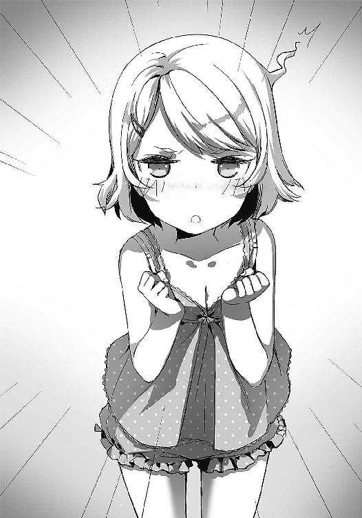
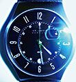

| 明日、ボクは死ぬ。キミは生き返る。02 | |
| 藤まる | |
| KADOKAWA / アスキー・メディアワークス (2014) | |
本書（電子版）に掲載されているコンテンツ（ソフトウェア／プログラム／データ／情報を含む）の著作権およびその他の権利は、すべて株式会社ＫＡＤＯＫＡＷＡおよび正当な権利を有する第三者に帰属しています。
法律の定めがある場合または権利者の明示的な承諾がある場合を除き、これらのコンテンツを複製・転載、改変・編集、翻案・翻訳、放送・出版、公衆送信（送信可能化を含む）・再配信、販売・頒布、貸与等に使用することはできません。
──ただいま、お母さん。
「にいさん、起きるのです」
うーん、もう朝か......？
「夏休みだからってぐずぐずするななのです。雪瑚はお腹がすいたのです」
あー......もうちょっとだけ......。
「もう！ さっさと起きてなのです！」
がばぁ。
ああ、俺の布団が......。
「さぁ早く起きて......って、なんで全裸で寝てるのですかこの変態兄貴──────ッ!!」
「がぼほぉおおお──────────────────────ッ!?」
妹による腹部へのオルテガハンマーを食らい、もんどりうちながらベッドから落下。必死に開いた瞳に映るのは、真っ赤な顔を覆いながら部屋を出ていく妹の背中。
「今度はなんだよ」
立ち上がり、自分の姿を鏡に映してため息ひとつ。
ああ、あの野郎。
「暑いからって、パジャマくらい着てくれよ」
ジャージを羽織り、机の上に置かれた一冊のノートを見やる。
落書きだらけのそいつを手に取り、さらにため息。
『おはよう坂本くん！ 今日も夏休みの宿題を頑張るのだ！ キミのためにいっぱい残しておいてやったぞ！ 光ちゃんてばえらい！』
「あいかわらず調子のいいことを」
夢前光め。
少女の声を脳内で流し、いつも通りのふざけた日記に三度目のため息を追加。と同時に、春先に訪れたあの日を思い出す。
四月上旬のとある雨の日。俺の目の前で不幸にも死んでしまった少女、夢前光。
たまたまその場に居合わせた俺は、黒ローブの人物に「おまえの寿命の半分で、彼女をたすけてやろうか」と迫られた。
突然訪れた究極の選択。俺はその問いに「やってみろよ」と答えていた。その結果、寿命の半分を代償に彼女は生き返る──。
「......はずだったんだけどな」
実際は、なんと一日置きに俺たちの人格が入れ替わり、二心同体の生活を送るトンデモ展開が始まってしまったのだ。今日は俺が表に出ているが、明日は夢前光に体も意識も乗っ取られてしまう。一日置き。つまり寿命の半分。この事実に気づいた時ほど、日本語の屁理屈さを恨んだ日はないと思う。
毎朝四時五十九分に俺たちの人格は入れ替わり、表に出ていない間は記憶喪失となっている。そのため、もうひとりの俺──つまり夢前光とコンタクトをとるには、こうして交換日記を通す以外に方法はない。
「ふざけたことばっかりしやがって」
そして毎度のことながら。このふざけた日記が証明する通り、夢前光という女はそれはもうアホでアホで超絶レベルのどアホちゃんなのだ！
腐女子をこじらせるという凄まじい死に方もさることながら、なんせ日常生活でもドジやマヌケをやらかすせいで、俺の生活は現在、暴風警報レベルにこんがらがっている。しょうもないイタズラもしょっちゅうで、トラブルに巻きこまれるのは日常茶飯事。
「一応頑張った形跡はあるな」
数学の宿題を開いてみると、そこには少しばかりやろうとした形跡がある。
......が、三問目くらいから飽きてきたのか、だんだんと落書きが増えており、しまいには夢前光と思しき美少女が魔法使いに扮し、
『光ちゃんのやる気を生贄に、坂本くんを召喚！ 後は任せた！』
と叫んでいる腹立たしいイラストが。それを最後に、宿題は真っ白なまま放置されている。くそう、こんなハイクオリティな絵を描いている間に一問くらい解けるだろうに。
『お願い、明日から頑張るから許して。坂本くんは優しいから許してくれるよね？ 優しくない坂本くんなんて嫌だよ？ ね、ね？ さかもとくんってば隠れイケメン！』
「何が隠れイケメンだ。そんなんで俺が許すとでも思ったのか」
......今日のところは許してやるけど！
「ったくもう」
日記にひとりでツッコみ続け、疲弊した体を椅子に預ける。
窓からそよぐ風に、ほんの少し涼しさを感じる。ああ、今日も暑そうだな。
「夢前光、か」
ぽつり、と相棒の名前を呟く。
今さらだけど、こいつの魂が俺に宿ってから本当に色々とあった。
一身上の都合でクラスにて浮きまくっていた俺だったが、彼女のおかげでなぜかクラスのヒーローになり、一生縁がないと思っていた女の子からの告白というやつも経験した。夢前光の死を巡って、風城という男と対立することもあったし。あれは本当にやばかった。
ノートを閉じ、彼女が触れたであろう表紙に、手を重ねる。
顔を会わすことも、手を取ることも、言葉を交わすこともできない不思議な関係。
俺たちを繫ぐのは、この一冊のみ。近くて遠い、背中合わせの俺たち。そんなあいつが、俺にとってどういう存在なのか。風城の一件で、すこしは気持ちに整理がついたかと思っていたけど......。
「まぁいっか。どうでも」
強引に悩みを飲みこみ、俺はあいつの期待に応えることにする。明日から頑張るってことは、つまり俺が頑張れってことだよな。ああちくしょう。いいように使われてるぜ。
とまぁ、こんな感じで俺と夢前光の二心同体夏休みは今日も続いていたのだが。当然ながら、残念少女な夢前光と、なんちゃってヤンキーの俺がうまくやっていけるはずもない。もちろんこの夏も、俺たちは中々にはちゃめちゃな日々を送ることになる。
翌々日に訪れたとある事件。それは、始まりにすぎなかったのかもしれない。

「記憶がないんだ」
「記憶がなくなるほど彼女と熱い夜を過ごしたの？ これだから不良くんは！」
「まじめに聞いてくれ。本当に記憶がないんだ」
「もう、どうして先生を呼んでくれないの。これだから不良くんは」
「先生、冗談抜きで記憶がないんだって」
「まったく。なんて恐い顔に産まれてきたの。これだから──」
「このパターンはもういい！」
「うふふ。気に入ってるのになぁ。残念、だね」
体が夏休みに馴染んできた頃。
豪快な太陽がでっかく輝く、雲ひとつない大空。そんな暑さが弾けるお昼時。誰かさんの頭がアレなせいで補習に駆り出されていた俺は、現在保健室に来ていた。
「それで？ また記憶喪失なのかな、秋月くん」
「今回はそうじゃない。とりあえずこれを見てくれ」
「うん？」
すっと、ポケットから一枚のメモを取り出す。それを長い指で掬うのは、養護教諭の日雲だ。
春ならまだ許せたが、この季節だといい加減に「修行中ですか？」と言いたくなるマフラーがトレードマーク。ポニーテールに飾られた長すぎる黒髪を払う仕草が様になっており、その度に開かれた胸元やミニスカートから覗くふとももがいちいち俺の目を攻撃してくる。俺の好みを的確に押さえやがって。
「............へぇ」
ニンマリと笑う日雲から視線を逸らす。くそ、絶対バカにされてるな。
「これは一体どうしたんだろ？ 先生に教えてくれる？」
メモ用紙をぴらぴらさせながら、彼女は俺に問いかけた。
「......し、知り合いからそんなメッセージが届いたんだよ」
「ふ～ん。知り合いって女の子？」
「う......」
「女の子からこんなメッセージが送られてきたの？」
「............」
「ふふふ。だからそんなに浮かない顔してるんだね」
くすくすと笑い、日雲は楽しそうにメモを見つめる。
うっせーちくしょう。でもなぁ。
「そんなことを書かれるような記憶がないんだよ。だから、その──」
「その？」
い、言わせるなよ。
「お......女の子がそういうことを書くのって......どういう時なのかなって」
「ふふ。青春してるんだね。恐い顔なのにか～わいい」
あーもう！ やっぱ来るんじゃなかった！ 帰る！
「待って待って。ちゃんと聞くから。ごめん、だね」
立ち上がった俺を、日雲は後ろから抱きついて引きとめる。
くそ。髪からもすごくいい匂いがする。どこまでも俺の好みを押さえやがって。
「で、秋月くんには心当たりがないの？ キミにとってはささいなことでも、その女の子にとっては重要なことかもしれないよ？」
「そう言われても」
ないもんはない。
「んーそうだなぁ～。一緒に考えてあげてもいいんだけど......」
楽しそうに悩むような台詞を述べた後、日雲は抱きしめる力をより一層強めながら、耳元で色っぽく囁く。
「自分で考えよっか。その子は気づいてほしいのかもしれないよ？」
「............む」
つん──と、人差し指でほっぺたをつつかれ、なぜか恥ずかしくなる。
「昨日の行動を全部思い出してみればいいんじゃないかな」
俺の体を解放しながら笑う彼女は、そうアドバイスをくれた。だけど。
「それができねーから困ってんだよ」
「え？」
「なんでもねー。帰るわ」
ちょろっと愚痴を残し、今度こそ席を立つ。去り際にかけられた「暑いから髪、切ったらいいのに」という言葉に「あんたこそマフラーとれよ」と返し、蒸し暑い廊下へ。ぐあ。今からこの中帰らなきゃいかんのか。
「昨日の行動......か」
炎天下をゆるゆる歩く。
部活があるんだろうか。帰宅中の俺とは逆方向に歩く制服姿が、ひたすら俺を避けている。
なぜかというと、原因はこの俺の見た目が、生まれつきえらくおっかないという点にある。そのため、こうやって道を開けられるのは日常茶飯事。おかげで友達もおらず、当然彼女もおらず、補習が終わった後も遊びに行く予定なんてあるわけもなく、ただただひたすら家を目指すのみ。あーほんと、死にたくなるね。
「あっ」
「お」
そんなことを考えていた時だ。
前方からやってくるぴょこぴょこおさげに視線が止まる。
「あ、さ、坂本くん。ど、どうしたの？ こんなとこで......」
「ん、ああ。補習があってさ、その帰り。そっちは部活？」
「う、うん」
真田霞。通称かすみちゃん。
小さな体とふわふわおさげが特徴の、ちょっと舌ったらずなクラスメート。
その雰囲気からどうしても年下に接するような態度になってしまうのだが、自己主張の激しい胸が同い年だということを教えてくれる。たまらん。
「そ、そっか。帰りなんだ......どうしよっかな。今日、べつに部活休んでもいいんだけど......だ、誰か暇な人がいたら遊びに行きたいなぁー......なんて」
へぇ、ゆるい部活なんだな。いいなぁ遊びに行く友達がいて。
「ぷ、プールとか行きたいかも。す、すんごい水着も買っちゃったし......」
プールねぇ。確かに今日なんかはプール日和だよなぁ。
「さ、さ、坂本くんなら、とと、特別に、さ──」
「あ、そうだ」
真っ赤な顔を見ていたらふと思いついた。
せっかくだし、この子にも見てもらおう。女の子の気持ちは女の子が一番わかるだろ。
「そんなことよりさ。これ、見てくれない？」
「え？ あ、う、うん......」
なんだかガッカリした顔で、かすみちゃんは俺の渡すメモを受け取る。
ん？ どした？
「知り合いがこんなメッセージを寄こしてきたんだよ。だけど心当たりがないんだ。どういう意味だと思う？」
「め、メッセージ？ えーと............」
そしてかすみちゃんは真剣に眺めて、
「............」
あ、あれ？ 黙っちゃった？ あのー......。
「......これって、女の子から？」
「え、そうだけど？」
「それって、前に言ってた気になる人から......なの？」
「へ？ あ──」
そこまで言われてやっと気づく。し、しまった。
そうだ、うっかりしてた。この子、俺のこと......。
「......そっか。気になる子からのメッセージ......」
真剣な瞳で、かすみちゃんはメモを見つめて考えこむ。
それは思案するというよりは、何かを企んでいるような顔で──。
「......わたしの予想では、きっと」
き、きっと？
「この子、坂本くんのことすっごく嫌いなんだと思う」
「えええっ!?」
すっごく!? すっごくですか!?
「行間から憎しみとか恨みがにじみ出てるもの。わたし、女だからこういうのわかる。坂本くん、この女の子には一切関わらない方がいいよ」
「いや、そんな──」
「わたしを信じて坂本くん。わたしは坂本くんのことを思って言ってるんだよ」
「え、えと......」
いつになくすらすらと喋る彼女に、何も言えなくなる。
え、えーと、かすみさん？
「坂本くん。この子には関わっちゃだめ。でも、それだと坂本くん寂しいよね？ さ、坂本くんは、女の子がいないと死んじゃうもんね......」
いや、べつに死には......。
「だ、だから、代わりの女の子が欲しいなら......そ、その......」
その......？
「わ、わた、わたしなんか、どうかなって......」
「ああ、えーと......」
そんな返答に困ることを。
「坂本くんだったら......お、お──〝おくちで〟でも、わたしはべつに──」
「あ、ああ！ そろそろ行かなきゃいけないんだ！ さよなら！」
なんだか瞳が闇色に染まってきたので、慌てて俺は話題をぶち切ってアスファルトを駆けぬける。危ねぇ。あの目は確実に獲物を狙うそれだった......。
彼女の姿が見えなくなるまで走った後に、だらだら流れる汗を拭う。
そして、あらためてメモを見つめて俺は呟いた。
「すっごく、か」
まさか、そんなことはないと思うんだけど。
「これは何なのですか？」
「友達がさ、女の子からこんなメッセージを受け取ったとか言ってるんだよ。どう思う？」
「にいさん、友達がいたのですか？」
「そこはツッコまんでくれ」
帰宅後。
麦茶をがぶ飲みして渇いた喉を潤した後、俺は妹の部屋を訪れた。
理由はもちろん、例のメッセージ。
「むむむ......」
考えこむ妹の全身を手持無沙汰に眺める。
坂本雪瑚。わが妹であり、中学一年生。
前下がりのストレートショートボブに、俺そっくりの三白眼。むすっとした顔はメモ帳を前に、さらにむすむすっとしている。暑いからか知らないが、ピンクのキャミソールはえらい露出が多く、ミニスカートもギリギリを極めている。えらくオシャレを意識し始めたんですね。
「どうだ？ 小説家のおまえなら、作者の心を読むとか得意だろ？」
「そんな能力は持っていないのです。国語の授業とは違うのです」
雪瑚は俺の方を見ることなく、そっけなく答える。
実は雪瑚はこの歳にして小説家をやっており、そこそこ巻数も出ているようで、いつも忙しそうにしている。何を書いているのかは......まぁ薄々予想はついているのだが、あえてハッキリさせないでおこう。
「こんなことを書かれるなんて、いったいそのお友達は何をやらかしたのですか？」
「それがわからないんだってよ」
「んむ......だからこそ怒っているのではないのですか？」
やっぱりそうなのか。日雲もそんなこと言ってたな。
でも、んなこと言われたってわかんないもんはわかんないし。
「じゃあさ、雪瑚。たとえ話をしよう」
「はい？」
「俺がおまえを怒らせたとする」
「よくあることなのです」
そんなツッコミはいいから。
「そして、おまえが俺にこのメッセージを寄こしたとしよう」
「はぁ」
「それはつまり、俺にどうしてほしいってことだと思う？」
「どうしてほしい............」
これぞ発想の転換。原因がわからないなら、対処法を考えればいいのだ。
そんな俺のアイディアに、雪瑚はさらにしかめっ面を深めつつ、うんうん唸る。パッと思いついたのでいいんだよ。
「どうだろ。やっぱり謝ってほしいのかな？」
「......違うと思うのです」
え、違うの？
「雪瑚だったら、そ、その......」
その？
「か、か、か──」
か？
「かまっ────しい、時......なんかに......」
「え、何？」
よく聞こえんので顔を思いっきり近づけて問いただしてみる。
雪瑚の息遣いが聞こえそうな、鼻先数センチの距離。彼女の唇の前まで近づくと、雪瑚はほんのり赤く染まっていた頰を真っ赤に爆発させ──、

「べほぉっ!? 兄妹なのですよ!?」
「へ？」
「あ、いや！ な、なんでもないのです！ じじ、自分で考えろなのです！ 雪瑚にかまうななのです！」
と叫んだかと思うと、ぷんと顔を背けてしまった。
「な、なんだよ。なんで怒ってるんだよ」
「うっさいのです！ そんなところがにいさんはクズなのです！」
ええ......。なんで......。
ったく。あんなおかしなブログ書いてたくせに、えらく冷たいなぁオイ。もう飽きちゃったのか？ まぁ兄なんてそんなもんだろうけど。
「うう......最近、二日に一回のそ、そ............プ......ごっこが少なくて寂しいのです......一時期のサービス期間はなんだったのですか......ゆ、雪瑚が嫌そうな顔をしたからなのですか......あれはその、本音じゃなくて、その......うう......」
「え？ 何ごっこ？」
また昨日の俺がいらんことやってんのか？
「なんでもないのです！ いいからさっさとごはんを作るのです！ 雪瑚はおなかがすいてるのです！」
へいへい。なんでもないですか。ごめんなさいね。
ぷりぷりと雪瑚がうるさいので、冷蔵庫の残り物で雑に昼飯を作り、特に会話もなく一緒に食べる。そして部屋に戻り、ベッドへダイブ。天井にメモを掲げ、そこに書かれていた言葉をひたすら見つめる。
「『............（怒っています）』──か」
今朝、目が覚めるとこいつが俺のデコに貼り付けられていた。
考えるまでもない。昨日の俺からのメッセージだ。
ノートに続きでも書かれているのかと思いきや、まさかの白紙。ほんと、急に怒ったりふざけたり忙しい奴なんだから。女心と秋の空とかいうけど、こいつの場合、秋空なんて優しいもんじゃないだろ。金星の上空とかがお似合いだよもう。
だけど、いきなりこんなことを書かれたところで俺にどうこうできるわけもない。かすみちゃんや雪瑚からもロクな答えを聞けなかったし。
「気づいてほしい......ねぇ」
う～ん、だったらもうちょいヒントをくれよ。
というわけで、俺はノートに『............（ヒントを要求する）』と書き残し、とりあえずこの問題は先延ばしにすることにした。ま、なんとかなるだろ。ただの悪ふざけかもしれないし。
そして翌々日。
ノートを開き、そこに書かれていた文章を読み上げる。
『............（ヒント:ちゃっちゃちゃーちゃーちゃーちゃ～）』
「わかるわけねぇだろ......」
ちょっと待って。真剣にわからん。何これ？ え、本気でわからんのだけど。
しかし、ノートにはそれしか書かれておらず、いや、これで理解しろってのは無理だろ。
「もういいや。とりあえず謝っとこう」
めんどくさくなった俺は、そんな軽い気持ちでノートに、
『よくわからんけどすまん。謝るよ』
と書いておく。あれで結構プライドの高い奴だし、これで機嫌も直るだろ。それより、こんなのどうでもいいからちゃんと日記を書いてくれ。一昨日も、おまえが無意味に日焼けしてたの知らなかったせいで、お風呂でえらい目にあったんだぞ。
「世話の焼ける奴め」
そして、俺はノートを閉じて再び問題を先延ばしに。きっと、明後日には片付いているだろうと思って。
だけど、俺は甘かった。
夢前光の本当の恐ろしさはここからだったのだから。
『............（わかんないのに謝ってごまかすとか、キミはどんだけダメな男の子なんだ！）』
「あーもう！ まだ怒ってんのかよ！」
翌々日。早速俺はノートでキレられる。
『いい!? 悪いと思っていないのに謝るとか、一番やっちゃいけないんだよ!? そんなんだからキミは..................ここから先は言わないでおいてあげるけど！』
なんだよ言えよ！ 気になるな！
『というわけで、光ちゃんから坂本くんへの好感度は５３万ポイント下がりましたー！ 童貞のくせに！ ぷん！』
そう締められた日記の隣にはカラーペンでメーターが描かれており『坂本くんの現在の好感度、マイナス５２万９９９６ポイント』と書かれていた。ちょっと待って。俺の好感度ってたった４しかなかったの？ あんだけ色々と頑張ったのに？ で、ちょっといい加減に喧嘩を片付けようとしただけでどんだけ下がってんですか？ ちょっとおちゃめすぎません？
「ったく。女ってめんどくさいなぁ」
あ、なんか今の台詞はリア充っぽいな。これから積極的に使おう。
「つーかなんか腹立ってきたぞ」
そもそもこいつが勝手にキレてるだけじゃねぇか。俺が先に謝ったのに、なんでこんなに怒られなきゃいけないんだよ。うん、そうだ。俺は悪くない。
そう納得した俺は、ノートを広げてちょっとキツめに書き記す。
『そんなこと言われてもわかるかよ。だいたい童貞童貞しつこいぞ。おまえだって処女のくせに（笑）。謝ってほしいんなら理由を言ってくれ』
「ちょっと言いすぎかな」
一瞬、書きなおそうかと思うが、首を振って弱気を飛ばす。
いや、これでいいんだ。最近、ちょっと夢前光の奴、調子に乗りすぎてるからな。そろそろ俺も怒ると恐いってことを教えておかないと。いつまでも尻に敷かれるのは勘弁だ。
「よし決めた。夢前光が先に謝るまで、俺は絶対に謝らないからな」
ノートを乱暴に閉じ、強気な言葉に鼻を鳴らす。さーて、明日の俺はどんな顔になるのかな。きっと、半泣きになるんだろうよ。
はは、楽しみだぜ。
「あ、秋月くん、なんで泣いてるのかな？」
「たすけてくれ。もう俺が悪かったから......」
翌々日。俺は保健室にて日雲に泣きついていた。理由？ もう訊かないでくれよ。あいつに決まってんじゃん。
何で俺が泣いているのかというと、話は今朝に遡る。
夢前光はどうやら相当ブチ切れたらしく、今朝起きると、なぜか枕元にはエロ本。抱きしめていたのは十八禁の抱き枕。そしてなんと、俺の股間に超大量の高粘着性ローションが撒かれていたのだ。おかげさまで母親には「き、今日は天気がいいからシーツ洗っておくわね！ たまには洗わないと！」という具合に気をつかわれるし、こんな日に限って起こしに来た妹には「にいさん、昨日言われた通り起こしにきてあげたのです。さっさと起きるので──おぼろおろおろろぼろろ!? おお、おにいさま!?」という大絶叫を食らった。朝飯食ってる時もニヤニヤしながら「雪瑚は見ちゃったのです♥ ネバネバだったのです♥」なんてほざいていたし。
ちなみに日記には、
『坂本くんごときにわたしがバカにされるなんて！ もう絶対に許さないんだからっ！ 永続思春期魔法をかけてやる！ これから目が覚めるたびに覚悟するべし！』
だとさ。永続魔法ってゆーかこれもう、即死魔法だろ。どんだけ体張って復讐してんだよ。
「やれやれ、だね。しょうがないなぁ」
そう言いながら、日雲は呆れ顔で脚を組みなおす。くそう、他人事だと思って。この後俺はどんな顔で母さんに会えばいいんだよちくしょう。
「いい？ 秋月くん。女の子はね、見返りが欲しいの」
「見返り？」
「そう。見返り」
日雲はゆっくりとその言葉を紡ぐ。
「ギブアンドテイクとかそういうんじゃなくってね。女の子は、男の子に何かをしてあげることで期待するの。どんな楽しいことがあるんだろう、どんなすてきな思い出をくれるんだろうって。秋月くんは、ちゃんと応えてあげてる？」
「そんなこと言われても......」
むしろ俺の方があいつのために色々やってると思うんだけど。あいつに何かしてもらったことなんて──。
............。
......あれ？
待てよ。もしかして──。
「ふふ、何か思い出した？」
「............べつに」
とか言いながらも、俺はそのまま席を立つ。
くそ、ニヤニヤしやがって。急用を思い出したんだよ。だからそんな「思春期だね」みたいな顔で舌を出すな。腹立つ！
「じゃあな。また来るかもしれん」
「うん、待ってるよ。がんばれ、男の子」
......やっぱ来ねー。
保健室の引き戸を乱暴に閉め、夏空の下へと走り出す。
そうか。そういうことか。もし俺の予想が当たっているのなら──。
怒られるのも、無理ないのかな。
翌々日。
目覚めた瞬間に股間に手をやる。ネバネバして............ない！ ビンゴ！ どうやら当たりを引いたらしい。永続魔法は解除できたようだ。
机の上のノートをパラパラめくり、目にいれるのはもちろん昨日からのメッセージ。
『まったく、キミはなんてニブチンなんだ。ここまでしてようやく気づくなんて。そんなんだから坂本くんは..................ここから先は言わないであげるけど！』
「結局なんなんだよ」
苦笑しながら、俺は机の上の〝それ〟に目をやる。一昨日、日雲と話し終えた後にデパートですぐさま購入し、俺から俺宛てに翌日配送しておいた贈り物。
「遅くなってすまんな」
誕生日おめでとう。夢前光。
苦笑と安堵を顔に貼りつけ、昨日の俺に向かって小さくぼやく。
二月ほど前だろうか。誕生日でもないのに、いきなり誕生日プレゼントを渡されたあの事件。お返しを催促されていたのだが、色々とドタバタしていて完全に忘れてた。どうやらそれが、凶行の原因となっていたらしい。
『いい？ 今回は許してあげるけど、今度からは気をつけること！ 女の子はイベントをすっごく大事にするんだからね！ 次はあんな復讐じゃすまないと心得よ！』
「へいへい。気をつけますよ」
アレを越えるとなると、家族会議に発展する可能性がある。気を付けよう。
ちなみに俺が贈ったプレゼントは、ペンタブレットというやつだ。パソコン上で絵を描くためのお絵かき端末なんだが、こいつが中々の優れモノで、紙に描くよりも圧倒的に効率よく絵を描ける逸品らしいのだ。ラクガキ好きのこいつなら有効活用してくれるだろうし、それに、これで女の子のエロイラストを描くだけ描いてそのまま部屋に放置されることで、翌日の俺が起こしに来た母親に凄い目をされる事態もなくなるだろう。アレはほんと勘弁してほしい。
ちなみにノートにはその後も、いかに俺が女の子の気持ちをわかっていないかとか、女の子の処女にはどれだけの価値があるのかとか、
『その気になればいくらでも男の子をはべらせることができたんだからね！ 光ちゃんは一日に五十回くらい告白されるモテガールだったんだから！』
という、なんか噓っぽい言葉が延々と数ページにわたって繰り広げられていた。五十て。どうも処女という言葉が相当にプライドを傷つけてしまったらしい。二度と言わないでおこう。
ノートを読む限りではプレゼントへの感想がよくわからないので、パソコンを立ち上げ、妹のブログ『ゆきりんのおにいさま観察日記☆』を開いてみる。多くは語らないが、こいつには俺について色々と詳しい情報が載せられているのだ。
んーで、昨日の俺については──。
『プレゼント包装された荷物が届いたので受け取ったら、おにいさまからおにいさまへだったのです。意味がわからんのです。それどころかプレゼントにキスしながら「大事にするよ、坂本くん」なんてほざいているのです。ちょっとやばいかもしれんのです。こないだだって盛大に、ネバネバせ──............ご、ごほんなのです！』
「............」
......うん。まぁ、いいや。喜んでくれてるみたいだし。
机の上で佇むペンタブを朝陽に掲げ、キスの跡がないか確かめるといういかにも飢えた男子みたいな行動を経て我に返り、ノートを読み進める。すると、最後の方にこんな文章が。
『えへへ。でも、光ちゃんが本当に欲しいものをくれた人は坂本くんが初めてだぞっ。さすが相棒！ お礼に童貞からスーパー童貞に昇格させてやろう！ やったね☆』
「結局童貞じゃねーか」
しかもその言い方だと、降格した気分なんだが。
『それじゃあお返事ちょうだいね。おっやすみ～～～ぐぅ......ＺＺＺ』
「へいへい。おやすみなさい、と」
こっちはおはようだけど。
とまぁそんな感じで、ばかにされたような、それでもあいつの楽しさが伝わってくる温かい交換日記を読み終える。やれやれ。どたばたしたけど、これにて一件落着かな。
「さってと、宿題でもやるか」
一昨日よりも、ほんのちょっとだけ進んでいる宿題に微笑みかける。
今日は昼から何をしようかな。そういや夢前光の好きな昼ドラは今日だっけか？ どうせ録画予約を忘れてるだろうから録画してやるか。あ、そういやアイスがなくなりかけてたっけ。しょうがない、買っておいてやろう。どうせ自分じゃ動かないだろうし。
「ほんと、世話が焼けるぜ」
そんなことを愚痴りながら、窓の外を見上げる。
とても澄み切った、何か不思議な出会いをもたらしてくれそうな、青い青い、高い空。
そんな夏空に、思わず笑みを預ける。
さぁ。夏休みは、始まったばっかりだ。
......などと、のんびりしていた自分を今になって思うとどつき回したくなる。
夢前光との夏休み。波瀾万丈な日々は、まだ始まったばかりだったのだから。
とりあえず翌々日、事件は早速起きた。
『坂本くん！ ニュースニュース！ にゅうにゅうす！』
「相変わらず騒がしい日記だな」
愚痴をこぼしながら、俺は続く日記を──。
『雪瑚ちゃんに彼氏ができました！』
なんだと......。
「うう......なんで俺がこんな目に」
暑さが厳しくなりつつあるお昼時。俺は泣きながら昼飯を作っていた。
「あのボケ。歯医者全部俺の日に予約しやがって......」
自分に甘く他人に厳しい「甘えんぼか！」と俺の中で評判の少女、夢前光さん。
あいつがお菓子をボリボリしまくったせいで虫歯になった俺は『夏休み中に全部治しなさい！』とノートに書いていたのだが、あのアホは見事に全部俺の日に予約しやがったのだ。そこで俺は歯医者に電話して予約を変えてくれとあがいたのだが、
『予約される時に「ボクは恐い顔なのに怖がりなんです！ なので今後、何を言おうがこの日程から変えないでください！ 勇気を出して全部治すって決めたんです！」と、おっしゃっていたのでこちらも心を鬼にすることにしました。変更は不可です』
だそうで、まさかの変更不可となっていた。うそぉん。
そんなわけで朝早くからギュリギュリ削られた俺は、ひぃひぃ言いながらうんざりしているというわけ。ちなみに日記には、
『ごめんね坂本くん。でも、キミのために綺麗なお姉さんの歯医者さんに予約してあげたから許してくれるよね。当たった？ 当たってた？ ぐへへ、坂本くんてば男の子！』
というメッセージが。うっせーぞちくしょうめ。おまえ予約する時に「おっぱいの大きな先生でお願いします！」とか言ったそうだな。おかげでスタッフさんに終始くすくす笑いされたあげく、担当医（巨乳）さんに「はやく彼女作って虫歯ゼロを目指そうね」とか言われたじゃねーか。
とりあえずノートに『ルール36：歯を磨くこと。次は俺が予約するからな！』と書き加え（なんで高校生になってまでこんなことを......）ため息ひとつ。ったくもう。
さて、そんなことよりだ。
「............」「............」
ただ今坂本家は、兄と妹二人だけの昼食中。メニューは雪瑚の好物オムライス。ここまではいつも通りなのだが。
「..................（むすっ）」
なんか雪瑚の機嫌が底抜けに悪い。
いや、元々笑ったところなんて記憶をドリルライナーで掘り起こさないと思い出せないレベルのしかめっ面少女なのだが、それでもここまで眉間に皺が寄っているのは久しぶりだ。
先ほどから交わした会話も、
「ソースをとってほしいのです。（ぷん）」
「テレビの音量下げろなのです。（ぷん）」
「ごちそうさまなのです。（ぷん）」
という具合に、ちょくちょく喋ってはいるのだが、なぜか喋り終える度に「ぷん」とそっぽを向いている。おそらく怒っているアピールをしているのだろうが、ぶっちゃけとてもかわいらしいだけである。
「雪瑚、うまかったか？」
おそるおそる訊いてみるも、
「ゲロマズだったのです！」
こんな感じ。
「ぷん......」
そして涙目で去ってゆく雪瑚ちゃん。どうせ昨日の俺がいらんことをしたんだろうが、これじゃあラチがあかない。ったくもう。
「何をやったんだ？ 昨日の俺よ」
自室へ戻り、ノートを開いていつも通りに愚痴を放つ。
そこにあるのは、毎度おなじみ夢前光からのメッセージ。
『雪瑚ちゃんに彼氏ができました！』
「彼氏。ねぇ」
今朝の衝撃的な書き出しは、こんなものだった。
さすがに俺もびびって「おうええ!?」などと叫んだわけだが、冷静に考えてあいつに彼氏ができるとかありえないだろう。
続きに詳しく書かれているだろうと期待したのだが『んほおおおお！』とか『んはああああ！』とか『らめえええええ！』としか書かれておらず、もうね、こいつしばいていい？ なんでこんなに役に立たないの？ わざと？ これわざとだよね。ちくしょう、誰か明日の俺をどついておいてくれ。
「しょうがねぇ、こっちはどうだ？」
ノートを荒く閉じた俺は、パソコンを立ちあげてとあるサイトへ接続する。
開かれた画面は、呟き機能を持った巨大ＳＮＳのトップページ。ご存じツイッターだ。
実はこないだ、なんとなしに夢前光の閲覧履歴を調べていた時に気づいたのだが、どうもこいつは勝手にアカウントをゲットして呟きをやっているようなのだ。気が向いた時に更新する程度なので役に立つかと言われると微妙なのだが、もしかしたらヒントがあるかもしれないと思った俺はこうして検索しているというわけ。
一縷の望みをかけて、あいつのアカウント【セクシードリーム】に接続してみると──。
「お、あった！」
昨日の日付で更新されている呟きを発見！
「どれどれ。昨日、何があったんだ？」
きっと何か、ヒントになることが──。
『坂本くんのプリンうめぇｗｗｗ』
「あの野郎！」
ないと思ったら！ 勝手に食いやがって！
『きょぬーエロ動画がまた増えてる。さっさと彼女作っちゃえばいいのに』
『おすすめＢＬアニメと差し替えておこう』
やめて......。
『暇だなー。なんかイタズラしたいなー』
『ひらめいた！』
『①コロコロで絨毯のゴミを集めます』
『②その中から髪の毛を抜き出します』
『③ベッドのそばに移動します』
『④枕元にバラまいちゃえ☆』
「てめえええええええっ！」
ちくしょう、そーゆーことだったのか！ 今朝、あまりの絶望に半泣きになってたんだぞ！ えぐいイタズラかましやがって！
『ぐふふｗ 朝起きて前髪に絶望する坂本くんｗ パねぇｗ』
『えっちな事ばっかりしてるからだね。反省すべし！』
『ヒマだなー。アニメでも見よっかなぁー』
『せっかくの夏休みだし、教養のあるアニメを......』
『ひゃっほぉう！ 小学生は最高だぜぇぇえええ！』
『ん？ 妹ちゃんにお客さんが来たよ？ 玄関でお話中』
お？ これか？
『盗聴♪スタート』
『な、なんかむっちゃカワイイ子だよ。美少女に坂本くんを足して、坂本くんを引いたような美少年！ パねぇ！』
『ん？ 何か渡してる？』
『あれは......』
『はびゃびゃびゃびゃびゃびゃびゃびゃびゃびゃびゃ────────ッッッ!?』
なんだなんだ!? どうした、バグったか!?
『ちょあっぽあ！ ぱぴゃや!? はびっ!! あばばっばあっばばばばばばあ!!』
『妹ちゃんがｗｗｗ 妹ちゃんがｗｗｗ』
『妹ちゃんが────〝ラブレター〟もらっちょるけん!!』
「ラブレター!?」
あいつが!? マジですか!?
『あ、男の子帰っちゃった。ぶふぉおｗ 妹ちゃんが真っ赤になってる』
『ぷぷぷ。妹ちゃんがラブレター見せながら自慢してきたよ。「にいさんと違ってモテモテなのです！」とか言ってる。テラかわゆす！』
『............あれ。なんかむっちゃ怒られた』
うん？
『え、なんでだろ。「付き合っちゃおうよ、応援するぜぇ！」て言っただけなのに』
『むむむむむ？ どうしたんだろ』
『まぁいいや！ それより妹ちゃんの恋路を応援するぞ～っ！ おーっ！』
「ふむ......」
夢前光の呟きはここで終わっていた。
「ラブレターねぇ」
一連の呟きをあらためて見直した後、腕組みしながら考える。
どうもこの流れを見る感じでは、彼氏ができたってのは明らかに早とちりだな。ラブレターをもらっただけで、そこから進展はないっぽい。ただ、よくわからんのは──。
「なんで俺が怒られてるんだ？」
ここに書かれていないだけで他に何かあったのか？
「......ちょっと調べてみるかな」
夢前光がいらんことをしないうちに、ね。
「おーい。雪瑚ー」
「............」
ぷん。
ノックと同時に部屋の扉をオープン。クーラーの効いた部屋で昼ドラを見ていた雪瑚は、そっぽを向くことで俺に応えてくれる。あらあらもう。
「なぁ雪瑚、昨日のラブレターの件なんだけどさ」
「っ......」
あ、ちょっとリアクションしたぞ。
「読ませてもらってもいいかな？」
「......なんでにいさんなんかに見せなければダメなのです」
と言いつつも、雪瑚は机の上を指さして示す。そこにあるのは、水色がさわやかな、かわいらしい便箋。
「どれどれ」
なぜか緊張しながら、怖々と便箋を掲げる。えらい丸っこい文字だな。そんなものにドキドキしつつ、俺はその文面を読み上げた。
「えーと──
『坂本さんへ。突然こんなお手紙、ごめんなさい。
でも、もうこれ以上この気持ちを抑えきれないので、手紙を書くことにしました。
実は、ひと目見た時からずっと気になっていました。この気持ちが恋なのかどうかはわかりません。でも、僕にとってこんなの初めてで......きっと特別な感情なんだと思います。
だから、まずはお友達になってください。そこからゆっくりと、自分の気持ちを確かめたいと思います。すぐにじゃなくていいので、お返事ください。 ──木下薫より』
............か」
そこそこに程よい長さの手紙を読み終え、火照った顔を手で覆う。
うん、ラブだ。
間違いなくラブレターだ。なんつーかこう......すごく甘酸っぱい感じがなんともリアルすぎる。なんだろう。すごく応援したくなるのは、俺が男だからだろうか。
「この〝木下くん〟ってのは知り合いなのか？」
「......クラスメートなのです。小学校は別だったので、あまり詳しくは知らないのです」
ふぅん。まぁそこはどうでもいいや。ただ、問題なのは──。
「ぐず......ぷんなのです......」
なんでうちの妹君が、膝を抱えて半泣きでキレているのかだ。え、なんで？ 照れるならまだしも、なんでこんなに悲しそうに怒ってんの？
「......そんなに嬉しいのですか」
「ん？」
「わざわざ読み上げて......雪瑚に彼氏ができることが、そんなにも嬉しいのですか......」
......んん？
「ひっぐ......昨日もバカみたいに喜んで......。雪瑚の気持ちも知らないで......ぐず......」
えーっと、これは......？
「にいさんは......」
さらに雪瑚は、声を裏返しながら続ける。
「にいさんは......雪瑚にどうしてほしいのです？」
どうしてほしい。なんかえらく難しいこと訊かれたぞ。
それってつまり、このラブレターに対してってことだよな。いや、べつに好きにすればって感じなんだけど。
「まぁ、とりあえず付き合ってみるのもいいんじゃね？ だめだったらすぐ別れるとかさ」
軽い気持ちでそう答えてみる。
付き合ったことなんか一度もないくせに、えらくそれっぽい言葉が口から飛び出たことに驚きだ。だけど、どうやら──。
「............ぐむむむ。こ、こんなに......なのに......とりあえずって......っ！」
雪瑚の逆鱗を引きちぎってしまったらしい。
あれ、なんかやばい？
「も、もうキレたのです......あ、後で泣いて後悔しても遅いのです......雪瑚はもう勝負に出るのです！」
「へ？ 勝負？」
勝負って、何の？
「絶対に、絶対に後悔させてやるのです!!」
涙目吊り目の雪瑚に、びしっっっと指を差された俺は、そのままドカドカと部屋から追い出された。ああ、なんだろう。すごく嫌な予感がする......。
翌々日。えっらい唐突だが、俺は寝こんでいた。
「くそ......あのドアホンダラがぁ......っ！ げほっ！」
熱が三十八度。立派な夏風邪。原因はわかっている。昨日の俺だ。
『坂本くん見て見てこの写真！ 夕立が降ってきたからショーシャンクごっこしたよ！ ほら、あのポスターの奴！ レッド──────ッ！』
「なんで夕立を嬉々として浴びてんだあのボケ......」
てめぇはカエルか。
ノートに添付されている、どこぞの名作映画のごとき写真に舌打ちをして、俺はぼやく。
他にもクーラーを一日中かけっぱなしにしたり、腹を出して寝たり、スイカを半分ごっそり食ったり......そりゃあ風邪もひくっつーの。くそう、昨日の俺のツケを今日の俺が払わなければならんとは、なんというくそシステムなんだ。
「明日の俺はアテにならんからな。どうにか今日中に治さないと......」
そんな感じでおとなしく横になっていた時だ。
コンコン──。
「失礼するのです」
「......うん？」
控えめなノックと共に、雪瑚が入ってきた。
「お薬と氷枕を持ってきたのです」
「おお、ありが──......ぶほぉッ!?」
な、え、ああん!? な、何してん!?
「どうしたのですか〝患者様〟？」
「いや、な、なんでナース服なの!?」
お盆を抱えてやってきたのは、なぜかナースさんだった。
「か、看病するのにナースは普通なのです。み、見とれないでほしいのです」
「いや、べつに見とれてるわけじゃ......」
「冷えピタを変えてやるのです。じっとしやがれなのです」
「お、おう」
口の悪いナースだな......。
そう言いながら、雪瑚はぎこちない動きで冷えピタを交換してくれる。
......やたら俺の顔に、自分の顔を寄せながら。
「か、彼氏ができたら、こーんな格好で看病なんかしちゃうのです」
「え？ あ、そう」
「それどころか、よ、よくなるおまじないの、ちゅ......ちゅーなんかしちゃうのです」
いや、病人にちゅーはやめとけよ。風邪うつるぞ。
「と、止めるなら今のうちなのです。ど、どうなのですか？」
「はぁ......」
すまん、誰か教えてくれ。こいつはいったい何を言っているんだ？
そんな感じで黙っていたのがダメだったのだろうか。
「んぐむぐむむ......っ！ にいさんの秘蔵動画から再生回数三位のコスを選んだのに......」
みるみるうちに雪瑚の表情が曇ってきて──。
「もういいのです！ このアホ患者！」
「いでぇ！」
冷えピタを思いっきりデコに叩きつけられる。いってぇな！
「な、なんだよいったい!?」
「うっさいなのです！ 勝手に冷えてろなのです！」
そしていかり肩ナースは「だったら二位で勝負なのです......っ！」と言いながら去ってゆく。
何がしたいんだ？
「すー......」
時刻は昼過ぎ。気持ちよく、うとうとしていた時だ。
「運動するのです！」
「はばっ!?」
勢いよく開かれたドアのＳＥに叩きおこされる。
そして同時に部屋へ飛びこんできたのは......。
「ね、ネコミミ......？」
なぜかネコミミ姿の雪瑚だった。しかも白のスク水。今度はなんだよ。
「クーラーなんか切るのです！ ちょっと汗かいて寝れば良くなるのです！」
「いや、雪瑚。寝てれば治るからそっとして──」
「甘えるななのです！ 病人らしくシャキっとしろなのです！」
病人だからしなびてるのに......。
そんなわけで、うるさい猫ちゃんに急かされるよう、クーラーを切った部屋で腹筋腕立てをやらされる俺。なんで風邪ひいてるのに筋トレしなきゃだめなんだ。
そんなこんなで十五分ほど経った頃。
「はぁはぁ......あ、汗拭いてあげるのです。ふ、服を脱ぐのです......はぁ」
同じく汗まみれの雪瑚が、息を切らせながらタオル片手に俺の服をめくってくる。
「な、なぁ」
「なんなのです」
「あんまりくっつくなよ」
風邪うつるぞ。
「ふ、ふんなのです。汗を拭いてる時に、偶然肌と肌が密着しちゃうのはよくあることなのです。か、彼氏ができたら、汗まみれでにゃんにゃんしちゃうのです」
また彼氏か。いったい何をさせたいのやら。
それはともかく、無理にでも動いたおかげだろうか。なんかちょっと体が軽くなった気がする。おお、この状態で昼寝すれば、なんだかスッキリしそうだ。
「ありがとよ、雪瑚。ちょっとマシになったぜ。いい奥さんになれそうだな」
そんな感じで褒めてみたのだが。
「..................チっ」
あれ？ なんか今、舌打ちが──。
「奥さんになんかならないのです！」
「あべぶっ!?」
言うが早いか、雪瑚はタオルを思いっきり俺の顔にぶん投げ──ちょ、何しやがる！
「もう知らないのです！ 汗から塩分補給してろなのです！」
そしてネコミミ少女は「こうなったらとっておきの一位コスで......」とか言いながら去ってゆく。なんなんだよ......。
その日の夜。
ああ。なんかだいぶよくなってきたな。うし、このまま寝れば、明日にはきっと──。
「にいさん！ 診察してあげるのです！」
「ああもう！ 今度は何!?」
三度目の強襲に訪れた雪瑚ちゃん。今度の服装は──。
「......雪瑚。おまえは何をしている」
なんと裸エプロンだった。露出具合が恥ずかしいのだろうか。明らかにもじもじしている。
「診察してあげるのです！ 心臓の音を聞くのです！ 前をめくれなのです！」
「いや、もう治るだろうから......」
「はよしろなのです！」
ええ......。
しかたなく言われるままに前をめくると、雪瑚は俺の胸に耳をぴたっと当ててくる。ちょっと待って。こいつ本気でどうしちゃったの？
「もう大丈夫なのです。後はゆっくり寝れば治るのです」
うん、そのつもりだったんですよ。
「じゃあ......」
ああ、じゃあこれで──。
「雪瑚も診察してほしいのです......」
「なんで!?」
エプロンをギリギリまでめくり、頰を赤らめて顔を逸らす雪瑚にツッコむ。
ええいもう！ おまえは朝から何がしたいんだ！
「か、彼氏ができた時のための昼ドラプレイの練習なのです！ こんなイケナイ格好であんなことやこんなことしてほしくなかったら今のうちなのです！」
「雪瑚......いったいどうしたんだ......」
さすがにちょっと疲労気味になってきた俺がうんざり訊ねてみると、その様子から何かを悟ってくれたのだろうか。不機嫌な顔のまま雪瑚は立ち上がり、半泣きで部屋を後にしてくれた。
「なんで効かないのです......やっぱり胸なのですか......ぐず......」
という言葉を残して。
「..................」
その日、俺は自室の床で目が覚めた。
なぜか下半身だけ脱いだ状態で。
辺りを見回すと、暴れ回ったのだろうか。いつも以上に散らかり荒れ果てた部屋模様が目に入る。さらに、床には『あぎゃほぼうちゃれひゃはばあひゃｈｆせｌじぇいｐはどえあ』という謎めいたダイイングメッセージが。
「今度は何しやがった」
ノートを開いて最初の一行目を目に入れる。
『タマタマ痛い......』
「女の子がそんな単語使うなよ......」
いきなりなんだ。
『なんで？ 坂本くんの秘蔵動画を参考に、彼氏が喜ぶポーズをレクチャーしてあげただけなのに......雪瑚ちゃん、あんなに思いっきり蹴り上げなくても......』
またいらんイベントがあったようだ。つーかどいつもこいつも秘蔵動画を漁りやがって。もう秘蔵でもなんでもねーじゃんか。
『痛いよぉ......。お風呂でマッサージしたのにまだ痛い......心なしか腫れてるような......』
あんまり触るなって、恥ずかしいんだから。
『坂本くんが童貞卒業できなくなっちゃう。ただでさえ、ちっちゃくて頼りないのに......』
泣くぞ！
『だめ。ちょっと我慢できない。薬塗っておこう。ムヒでいいや』
「............え？」
お、おい。まさか......。
『坂本くん、ごめんね。机の上にムヒ置いとくから、起きてもまだ痛かったら塗ってね』
ま、待て。そ、それだけは......。
『これでぐっすり寝られるね。んじゃ、おやすみ～』
や、やめ──。
日記はそこで終わっており、あらためて崩壊した部屋を見渡す。そして、床に書かれたダイイングメッセージを見つめる。ああ......。今回ばかりは同情するぜ。
「ったくアホなんだから」
そんなことを言いながら、股間を気にしつつ部屋から出た時だ。
ぼーっとしていたせいだろうか。
「はわっ!?」
「うおっと！」
誰かとぶつかりそうになり、思わずよろける。
「あ、あぶねっ！」
「わふっ！」
そして、コケそうになったそいつを思わず抱きとめた。ん？ この小ささは雪瑚か？ しかしその割には少し肩幅がしっかりしているような──......。
「あ、こ、こんにちは、です......」
「うん？」
視線を落とす。えんらい美少女が腕の中にいた。
耳が隠れる程の黒髪ショートヘアーに、大きな瞳を備えたその綺麗な顔が、えらく真っ赤に染まっている。
「な、何してるのですか薫！ にいさんも！」
「あ、ゆ、雪瑚ちゃん」
とか思っていると、雪瑚が自室から顔を覗かせて大声で叫んだ。うん？ 薫？ 薫ってどこかで聞いたような............。
............あ。
「き、キミがあの手紙の木下くん!?」
「え──!? あ、あぅ......」
ああ、しまった。そこは触れちゃだめだよな。
更に真っ赤になってしまった彼に、心の中で小さく謝る。ごめんごめん。
「いや、てゆーかキミ、男の子なの？」
「は、はい......木下薫です。よろしくです......」
あらためて少女......じゃねぇ。少年を眺めてみる。
雪瑚よりちょっと大きいくらいの小柄な体軀。さっきはショートヘアーと思ったけど、男と考えるなら長めだろうか。そして何よりも目を引くのは、ハンパない程のその、綺麗な童顔だ。
これで男の子なのか。いやはや。
「えらくかわいいんだな......」
「え!? あ、あぅ......」
ああいかん。何言ってんだ俺。相手は男の子だぞ。失礼じゃんか。
咳払いをひとつ挟み、彼の体を解放した俺はあらためて向き直る。
「えーっと、あ、遊びに来たのかな？」
「は、はいです。その、雪瑚ちゃんに誘っていただいたので──」
なんと。雪瑚が男を家に誘う日が来るなんて！ しかしそれも納得だ。これだけ美少年な男の子にラブレターもらったとなれば、そりゃあさすがの雪瑚も揺れるだろうよ。
そしてこの子、俺の顔を見てびびらないとは非常に珍しい。それとも、恐いけど失礼だから我慢してるんだろうか。だとしたら、なんていい子なんだ。
「ああ。えーと、雪瑚がいつもお世話になってます。俺は兄の秋月。よろしくね」
「は、はい！ よろしくです！ こ、こちらこそお世話になってますです！」
ぺこり、と早口でお辞儀する木下くん。おお、礼儀もバッチリだな。すばらしい。
「ゆ、雪瑚ちゃんからお話は聞いてます。と、とっても優しくてかっこよくて頼りになるおにいさんだって、いつも学校で自ま──」
「だだだ黙れなのです！ それ以上喋るななのです！」
ずんずんと近寄る雪瑚の叫びに、木下くんの台詞は遮られた。
「ごご、ごめん雪瑚ちゃん。で、でも、聞いてた通り、とっても頼りがいのありそうなおにいさんです......ほんとに......」
「え、そ、そう？」
珍しく褒められて、思わずニヤける。
な、なんだ。中々にいい子じゃないか。雪瑚、もうこの子と結婚しちゃえば？
「に、にいさん。今から雪瑚は、薫と部屋でふたりきりなのです！」
「ん？ あ、そうなの」
それがどうした？
「い、イケナイことを、しちゃうかもなのです！」
イケナイこと？
「ゆゆゆ、雪瑚ちゃん、な、何言ってるの!?」
「うっせー黙ってろなのです！ それよりにいさん。雪瑚は今から、部屋で見られたくないことをするのです！ あ、暑いのでドアをちょっとだけ開けておくのですけど、絶対に中を覗くななのです！ み、見たら絶縁なのです！ いいのですね!?」
「え、あ、うん」
「ゆ、雪瑚ちゃん......っ！」
両手をぶんぶん振って抵抗する木下くんを引きずりながら、そのまま雪瑚はチラチラと振り返りつつ自室へと戻ってゆく。いやまぁ、見るなっていうんなら見ないけど。だったらドア閉めとけばいいのに。
そしてその後。
どうやら雪瑚と木下くんは昼過ぎくらいまで部屋で遊んでいたようだが、時折なぜか雪瑚が俺の部屋の前で、
「あーあ！ あ、暑いので下着姿になっちゃおうかな～なのです！」とか、
「か、薫はにいさんと違って大きくてキタコレなのです！ 止めるなら今のうちなのです！」などと叫んでいたけど、よくわからんのでオールシカトしておいたら、なぜか泣きながらドロップキックを食らわせてきた。なんなんだよもう......。
そして日も暮れそうな頃。
「にいさん、寝ているのですか？」
「......返事がないのです」
「ということは、寝ているのです」
「......ごくり」
「く、クーラーの部屋でお腹出して寝るなんて、やれやれなのです！ か、勘違いするななのです。また風邪をひくといけないから、雪瑚があたためてあげるだけなのです！」
「べつに、雪瑚に彼氏ができるのを止めてくれないのがさみしいとかじゃないのです......そんなんじゃ......」
「おにいさまは雪瑚だけのものなのです......」
もそもそ。ぱふっ。
「ちょっとだけ......おにいさまが寝ている間だけ、お布団にお邪魔するのです......」
「あったかいのです......おにいさまの匂い......」
「あ、ここだと息がかかるのです......。甘いのです......」
「ちょっとだけ......ちょっとだけなのです......」
「すぴー」
..................。
............。
......。
めっちゃ起きてますけどね！
「ったくもう」
晩飯まで仮眠しようと横になっていた俺は、体を起こす。なんだか相手するのがめんどくさかったので寝たフリでごまかそうとしていたのだが、思いもよらぬ方向にいってしまった。
「こいつ、もしかして」
いやまぁぶっちゃけ、最初からそんな予感はしてたけど。
「妹に彼氏ができることに......反対してほしいのか？」
つまりあれだ。娘の連れてきた男に対して、頑固親父が「貴様なんぞに娘はやらん！」的なイベントを期待してるってことか。よりにもよってこの俺に。
「なるほど。だから夢前光が怒られてるわけね」
しかし、そう言われてもねぇ。
妹のもらったラブレターに兄が口出しするなんて、それこそナンセンスな話。そりゃまぁ、変な男に引っかかりそうだってんなら全力で阻止するしかないが、木下くんなら......ねぇ。
「腹出して寝やがって」
隣で寝そべる雪瑚に掛布団をかぶせる。よだれもあいかわらず......あーあー。シーツに垂らしちゃって。まぁいいか。妹のだし。
「どうしたもんか」
雪瑚の頭をぽんぽん撫でながら呟くも、どうすればいいかなんてわかるわけもない。
そしてこの日の夜。最大の奇行が俺を襲った。
「ふぃー......」
お風呂時。
暑いのでシャワーでしのごうかとも思ったけど、浸かってみると案外夏でもいけるもんだ。ゆっくりと湯船に浸り、体をほぐして──。
「にいさん、湯加減はどうなのですか」
「あん？ ちょうどいいぞー」
脱衣所から聞こえる雪瑚の声に応える。なんでそんなことき──ガチャ──いやいやいや!?
「ちょちょちょちょ!? な、なんで入ってくんの!?」
「ゆ、雪瑚もお風呂に入りたい気分なのです！ 嫌ならにいさんが出てけなのです！」
湯気でよくわからんけど、雰囲気から察するにおそらく真っ赤になっているであろう雪瑚が、声をひっくり返しながら早口に答える。いや、そんな無茶な。
そして、湯気の向こう側から白い肌をさらけ出した雪瑚が現れる。その体は胸やら何やらを隠すようなポーズをとるでもなく、堂々と..................水着を着用していた。
びびった。いや、でも、その──。
「えらい気合の入った水着なんだな......」

「か、彼氏に見せるためのとっておきなのです。や、やらしい目で見るななのです」
見てませんって。
風呂場に突撃してきた雪瑚がただ今着用している水着は、ツーピースタイプのそりゃもう気合の入った露出度高めの勝負水着だった。ひらひらした短いチュールスカートが、かわいらしさを全力で演出している。随分オシャレなのを買ったんですね。
そして雪瑚は、そのまま湯船に入ってくる。俺の体に背中を預ける形と言えばわかりやすいだろうか。つーかちょいちょいまてまて。おまえは水着だからいいけど、こっちは全裸なんだぞ。動けねぇじゃんか。
「......にいさん」
「なんだ？」
「......小さい頃、雪瑚がいじめられていたのを覚えているのですか？」
「うん？ なんだよ急に」
まぁ強烈に覚えてるけどね。
いじめと言うには大げさだけど、確かにこいつは小さい頃、よく悪ガキどもにからかわれていた。体も小さいし、女の子なのに笑わないし、あの頃は気も弱かったからだろうな。
「雪瑚がどんくさくて、からかわれて......。でもそんな時、いつもにいさんがたすけてくれたのです。おんぶして一緒に帰って──雪瑚にとって、にいさんはヒーローだったのです」
「んな大げさな」
ちなみになんで俺が強烈に覚えているのかというと、穏便に話しあいで解決しようと笑顔で近寄っただけなのに「うわっ、なにアイツ！ 顔恐っ！ 死ぬ！」などと叫ばれたあげく、五人以上いたいじめっ子が漏れなく全員泣きながら逃げていったという涙のヒーローイベントがあったからなのだ。おんぶしてあげたのはあれだ。泣いているところを妹に見られたくなかったからだ。あれ以来、笑顔を晒すことに恐怖が芽生えたと言っても過言ではない。俺のトラウマの始まりの日......うああやめてやめて。泣きたくなる。
まぁ、強烈に覚えている理由はもうひとつあるんだけどね。
「......中学生になったばかりの頃──」
「うん？」
などとひとりでトラウマを召喚していたら、雪瑚が背中をすこしだけ俺の体から浮かせ、小さく語りだした。
「中学生になったばかりの頃、教室で小説を書いていたら、バカにされたことがあったのです」
「え？」
「小説家をやっていることがバレたわけではないのですけど......そのことを、クラスの嫌な女にからかわれたのです。暗い奴にお似合いだって」
「うわ、マジかよ」
なんだそりゃ。ふざけた話だな。何をバカにされることがあるんだよ。むしろ、この歳で小説家なんてすごいじゃねぇか。まだ中学生だぞ？
「でも、その時にかばってくれたのが薫なのです。家に帰った後も、励ましのメールをくれたのです。あいつはああ見えて結構勇気もあるし、正義感の強い奴なのです。それが......にいさんとちょっとだけ似ていたのです」
振り向くこともなく背中を向けたまま、表情を見せずに雪瑚は続ける。
「......薫は、とってもいい奴なのです。勉強もできて、運動はちょっとダメなのですけど──それでも勇気があって優しくて、とっても、とっても......」
続く言葉を飲みこむ雪瑚。一瞬、泣いているように感じたのは気のせいだろうか。
「にいさん」
「ん？」
「もう、現実に気づいているのです。夢を見る歳じゃ、なくなったのです」
「夢？」
そして、ようやく振り向いたその横顔は──。
「......ほんとに、雪瑚に彼氏ができてもいいのですか？」
「............」
いつになく、真剣で切ない綺麗な横顔。どこか儚く、知らないうちにちょっとずつ大人になっているんだなぁと思わせる、女の子した横顔。
......彼氏、ねぇ。
「俺は、好きな人と結ばれるのが一番だと思う。その恋がどんな形であったとしても、誰にも認めてもらえなかったとしても......自分の気持ちに正直であるべきだ」
雪瑚が何を望んでこんな話をしてるのか。なんとなくはわかっているんだが、俺にはやっぱりこんな事しか言えない。俺だって、行き場のない恋を経験しているんだ。そんなに悲しそうな顔しないでくれよ。
「......わかったのです。もう一日だけ、考えるのです」
横顔を隠し、雪瑚はそう答えた。
結局その後、特に何を語るでもなかったのだが、雪瑚が中々湯船から上がろうとしないので、やたらのぼせてしまった。
風呂上がり。火照った頭と熱い頰に手を当て、雪瑚の成長した横顔を思い出す。
......のぼせただけだからな。うん。
『雪瑚ちゃん......今日の雪瑚ちゃんはどこか切ないよ......。夕陽を見つめて、今にも泣きそうな顔してる......』
「雪瑚......」
翌々日。夢前光からのメッセージを読み、その情景を思い浮かべる。きっと悩んでいるんだろう。初めてのラブレター。初めての恋。その小さな体が受け止めるには、それはとても大きくて切なく、痛みを伴っていて──。
『雪瑚ちゃん......思わず切ない雪瑚ちゃんの写真を待ち受けにしちゃったよ......』
雪瑚......。
『雪瑚ちゃん......雪瑚ちゃん......ぺろぺろ......』
ゆき............。
『うわ。雪瑚ちゃんの写真ペロペロしてるとこ、おばさんに見つかっちゃった。ギリセーフ』
「何やってんの!?」
セーフじゃねぇ！ モロにアウトだ！ だから朝飯食ってた時に母さんに挨拶してもシカトされたのかよちくしょう！
『坂本くんは不良だから大丈夫だよね』と締めくくられた日記に嫌味なため息をぶつけ、ぱたん──と閉じる。もういい、ほっとけ。こんなアホに構ってるヒマはないんだ。
「そろそろ行くか」
着替えをすませ、玄関へ。そこには既に待ち人がいた。
「......遅いのです」
夢前光が〝彼氏に見せるため〟買ってやったという、オシャレなお洋服。白を基調とした、どことなくお嬢様っぽく見える、ドレス調なカジュアルワンピース。
可憐に飾られた雪瑚が、そこにいた。
「じゃあ行くか」
「......はいなのです」
そして、チャリの荷台に雪瑚を乗っけて、俺は中学校へ向けて出発する。
今日。どうやら雪瑚は、木下くんに返事をすると決めたらしいのだ。
先ほど雪瑚は木下くんに「中学校のプール裏に来てほしいのです」とメールを送ったんだとよ。んで、なんで俺が駆り出されているのかというと、雪瑚について来てくれとお願いされたからだ。俺がいたら邪魔にしかならんだろうと思って拒否したのだが、いつになくダダをこねて懇願するので、結局ついて来てしまった。まぁ、これくらいのワガママは聞いてやろう。木下くんだって許してくれるさ。
雲のない青空を飛行機雲が突っ走るがごとく、まっすぐ、まっすぐにチャリを漕ぐ。大空と違うのは、轟轟と叫ばずに無言で突っきっているところだろうか。
背中を暑くする感触を気にしながら十五分ほど。数年前まで俺も通っていた懐かしの校門をくぐり抜け、チャリを止めて施錠。そしてプール裏へと並んで歩く。その歩みが遅かったのは、隣を歩く雪瑚のペースに合わせたからだと思う。
「あ......」
その子の額に汗がにじんでいるのは、太陽のせいだけではないはず。少し湿った日陰に、彼──木下くんは佇んでいた。隠せないほどに、頰を染めながら。
「こ、こんにちは、おにいさん......」
「よっ。ごめんな、俺も一緒で」
「え............？」
気を遣って軽く謝ってみるも、木下くんは予想外にぽかんとした顔をするのみだった。ああ、なんかもうそれどころじゃないって顔だな。そうだよな。今から好きな子に......告白の返事をもらうんだから。
「......薫」
「は、はいっ」
雪瑚の言葉に、木下くんは姿勢を正す。
「へ、返事するから......もう一度、おまえの口から聞かせるのです......」
「え──あ......」
木下くんは赤い顔をこちらに向け、消えゆきそうな声を落として下を向く。おおう......雪瑚の奴、もっかい告白させるのか......しかも、俺の前で。
「う、うん......わかったよ」
だけど、木下くんも怯まない。力強く顔を上げ、ぎゅっと拳を握ったまま──。
「初めて見たときから......ずっと、ずっと気になってました」
告白を始めた。
雪瑚がちらっと、俺の方を見る。
どうして欲しいのか。確信はないけど、それでも俺がここに連れて来られた以上、予想はついている。でも。
「最初に見たのはたまたま、街で歩いているのを見かけた時です。兄妹で並んで歩いているのを見て......。その時はただ、凄く好みの人だなぁ～って思っただけなんです」
木下くんの言葉を背景に、俺は考える。雪瑚は今、どんな気持ちなんだろう。どういう思いでここにいるんだろう。ここに来るまでに、どれだけのことを考えたのだろう。
「次に、その、怒られるかもしれませんけど、こっそりと後をつけていた時に......。無愛想に見えて、率先して電車で席を譲ったり、小動物に笑顔を見せたり、小さい子に話しかけて泣き喚かれ、涙目になっている様子がとてもかわいくて......。次第に、いつもいつも意識するようになっていて。そこで、思わず手紙を書いたんです」
誰かから告白される。雪瑚にとって、いや、誰にとっても、正解のない難しい問題。
「それで、この間家にお呼ばれした時にお話して......。やっぱり見た目だけじゃなく、中身もすてきで、僕を包みこんでくれるような人で......それで、自分の気持ちを確信したんです」
だけど、もういつまでも子供じゃないんだ。兄がいつまでも守ってやれるわけじゃない。だから自分で答えを出すべきだ。大丈夫。どんな答えでも、木下くんは受けいれてくれるさ。
「だから──」
だから──。
「僕と......つ、つ──」
雪瑚──。
「付き合ってください！ おにいさんっ!!」
自分で答えを出すんだ──っ！
..................。
............。
......。
「「え？」」
セミの鳴き声を背景に、坂本兄妹の疑問符がハモる。
「............っ」
真っ赤な顔の木下くんは、目をぎゅっとつぶって手を差し出している。
............。
......。
............俺に、向かって。
「............薫」
雪瑚の冷たい声が降りそそぐ。
「は、はい......」
木下くんのかわいい声が震える。
「ラブレター、雪瑚がおまえから直接もらったのです」
「うん。ありがとうね、雪瑚ちゃん。僕の代わりに、おにいさんへ渡してもらっちゃって」
「え？ わ、渡す？」
「うん？ 僕、言ったでしょ？『おにいさんによろしくお願いします』って」
「......え。それって〝にいさんに二人の仲を認めてもらえるよう、お願いしろ〟って意味じゃなかったのですか？」
「え？」
薫くんのかわいい顔が傾げられる。
え。
「......か、薫、おまえさっき、初めて会ったのは街を歩いているときって言ってたのです」
「うん......雪瑚ちゃんの隣にいるのを見て......ひ、ひと目ぼれしちゃって......」
え。
「薫......にいさんは男なのですよ」
「うん......大丈夫。僕も男だから......」
「え？」
「え？」
え？
「薫......にいさんは男なのですよ」
雪瑚。ループしてる。
「うん......大丈夫。僕も男だから......」
キミも二回言わなくていいから！
「............」
「............」
圧倒的な沈黙。
それを破ったのは、俺でも木下くんでもない。
先ほどまで恋に恋する女の子だった、でも、もうその顔からはそんなセンチメンタルなものは消え失せてしまった──。
「キタコレなのです──────────────────────────────────────────────────────────────────────ッッッ!!」
......いつもの雪瑚が......そこにいた。
「か、か、薫!! そっちの人だったのですか!? え!? え!? えええええええええええええええ!? ちょ、マジなのですか!? い、いただきますなのです!! ににに、にいさんの、どこに惚れたのですか!?」
先ほどまでのおセンチな少女はどこへやら。
夏の太陽のごとくギラギラした瞳を輝かせる少女は、よだれをまき散らして木下くんの肩をガンガン揺すって問い詰める。俺はというと、え、ちょっと待って。俺どうしたらいいの？
「うん......それはね」
あれ？ き、木下くん？ な、なんかキミ、目の色がおかしいよ？ ぐるぐるして、すごく深い穴のように染まって──。
「お、おにいさんってとっても見た目が恐いじゃない？ 体が大きくて目つきも鋭くて、誰も寄せ付けない一匹狼な雰囲気で。でも、それでいてどう見てもヘタレで情けなくて女の子と手を繫ぐのだって精一杯な童貞臭溢れるしょぼいところがあるじゃないそこがなんだか僕にとってすごく魅力的ですごくいじめてみたくてぶっちゃけこんな人を虐げることができたならきっと僕の嗜虐願望が満たされると思うともういてもたってもいられなくなってそれで告白することを決めたんだだから今日ここでいい返事がもらえなかったら僕はおにいさんに首輪をつけてでも僕のものにするつもりで覚悟を決めてきているから是非雪瑚ちゃんにも協」
「よおおおおおおおおおし！ 雪瑚！ 後は任せた！ 俺、用事思い出したから！」
大声で呪詛の言葉を遮り、なんかもう夏の太陽とは無縁の気持ち悪い汗を拭うことなく、回れ右。やばいやばいやばいやばい。これはやばい。まさかこんな展開が待ち受けているとは思わなかった。なめてた。うん、なんかもう色々なめてた。そうだ忘れてた。俺の人生はさわやかに青春溢れるものではなく、どこぞのアホ女のごとくぶっ飛んだもので──。
ガシ──ッ！
「ひぃっ！」
後ろから、二本の腕が俺の肩を抑える。
片方は、よく知る妹のそれ。
そして、もう片方の腕の先には──。
「おにいさん。どうして逃げるのです？ おにいさん、言ってたじゃないですか」
「え、な、何を......？」
フッと、彼の瞳が色を失くす。
それはまるで、太陽が月に隠れるがごとく、日蝕のような神秘と不気味さを俺に感じさせてくれて──。
「言ってたじゃないですか。僕のこと──かわいいって」
「あう......」
............いや、言ったけど、それは......。
「にいさん。覚悟を決めるのです。にいさんも言ってたのです。好きな人と結ばれるのが一番だって。どんな形であったとしても、誰にも認めてもらえなかったとしても、自分の気持ちに正直であるべきだって言ってたのです。薫も、そうあるべきなのです」
いや、でも──。
「おにいさん。今日から、おにいちゃんって呼ぶです。ふふふ」
で──。
「にいさん。いただきますなのです。覚悟するのです」
──。
「おにいちゃん」「にいさん」
めりめりと、俺の両肩に食い込む中学生の細い腕。
そんなものを見つめながら、俺は思った。
............代わってくれ。夢前光......。
『キタ─────────────────────────────ッ!!』
「くそう......」
絶っっっ対にからかわれる自信があったので例の件は日記に書かないでおいたのだが、どうやら早速バレたらしい。どうせ雪瑚からバレたんだろうけど......。
『この展開は予想してなかったでござる！ 坂本くんマジおめでと！ かすみちゃんの告白を断ったのにはこういう裏があったんだね！ 念願の童貞卒業おめでとうございまっする！』
「他人事だと思って......」
さらにケータイを見てみると、待ち受けは木下くんと俺が至近距離で見つめ合っているツーショット（木下くんの目がやばい。ぐるぐるしてる）が。あんのボケナス......他人の体で勝手に写真撮りやがって。
「ごちそうさまなのです。ふふん♪」
一方で。
俺の作ったオムライスを機嫌よさ気に食らいつくした雪瑚は、楽しそうな顔で手を合わせている。くそう、あんだけぷんぷん言ってたくせに現金な奴め。ケチャップついてるぞ。
「やっぱりにいさんのごはんは最高なのです。おいしかったのです」
そりゃどーも。
「にいさん」
「ん？」
ヤケクソ気味にケチャップをドバドバかけたオムライスを掬いながら、ぶっきらぼうに俺は答える。先日見た──切ない横顔とはまた違った、大人っぽい横顔を見せながら、人差し指を唇に当てる雪瑚はこう言った。
「やっぱり当分、彼氏は作らないことに決めたのです」
「はい？」
そして、本当に──本当に久しぶりに──。
「今が一番、雪瑚は幸せなのです」
いつか見た、強烈に脳裏に刻まれた、彼方の記憶。
いじめっ子からたすけた時に見た、儚く、でも──絶対に忘れない遠い思い出。
それは、兄だけが見ることのできる宝物だろうか。
幼い妹の笑顔が、夏の日差しに輝いていた。
事件は突然やって来た。
「あれ？」
気がつくと俺は、薄ぼんやりした暗さの部屋でパソコンの前にいた。
右手にはマウス。左手にはティッシュ。目の前のパソコンには、笑顔の二次元美少女が。耳に装着されたイヤホンからは、しっとりとしたＢＧＭが流れてくる。ああ、なるほど。またか。
どうやら夢前光は夏休みをいいことに、徹夜でギャルゲーに明け暮れていたみたいだ。空の色と、押し寄せる倦怠感と眠気、そして今の状況がそう教えてくれる。ゲームに夢中になるうちに四時五十九分を迎え、俺に入れ替わってしまったと。
左手のティッシュに一瞬ぞくっとするも、鼻水と涙の溢れ具合から察するに、泣きゲーをやっていたみたいだな。ったく、四時五十九分までには寝ておけってルールに書いてあるのに。夢中になるとすぐに周りが見えなくなるんだから。
鼻水を拭い、寝なおすためにケータイを手に取ってアラームをＯＮに──。
............あれ？
「四時、五十四分......？」
ケータイの表示に目を疑............いやいや。そんなわけないだろ。そんなわけ。
「............そんな......」
八月上旬のその日。午前四時五十四分。
俺たちのはちゃめちゃな共同生活に、突如事件が降りかかる。
「ウソだろ......」
それは、夢前光の時間が五分減っているという事実を乗せて、姿を現しやがった。
『んむむ？ わたしの時間が五分減ってるって？ ほんとに～？ 何かの間違いじゃない？ んもう～坂本くんてば早とちり☆ どうせ今日も恐い顔してるんでしょ！』
翌々日。ノートを開き、唇を嚙む。
「どういうことだ？」
一昨日、突如訪れた謎の現象。
夢前光から俺に入れ替わる時間が、四時五十九分よりも五分早くなった件について。不審に思った俺はその後、すぐさまに風城へと電話して事情を話した。風城というのは夢前光の生前の友達であり、現在、俺たちの入れ替わり現象を知る唯一の人物だ。なかなか冷静で知的なイケメンなのだが、あろうことか夢前光に恋をしてしまったというおバカさんでもある。こいつを見ていると、惚れた方の負けという言葉がやたら重く感じるよ。
それはさておき。この謎の事態について話し合った俺たちは、翌朝に風城と電話をしながら四時五十四分を迎える計画を立てた。これでもし、俺から夢前光に入れ替わる時間が四時五十九分より早くなっていたら、入れ替わり時間が数分、前にずれこんだだけのこと。だが、もし変わっていなければ......。
そんな恐怖を抱えながら、昨日の早朝、四時半に設定した目覚ましで起床した俺は、風城と電話をしながらその時を迎えた。その結果──。
『やっぱり入れ替わるのは四時五十九分じゃん。坂本くんが寝ぼけちゃったんじゃないの？』
「変わってなし......か」
俺から夢前光に入れ替わる時間は四時五十九分のままだった。
夢前光は楽観的にノートを書いているが、そうはいかん。だってこれって──。
「風城。どう思う？」
ケータイを片手に風城へコール。おそるおそる訊ねた結果は──。
『......あんまり考えたくないが、光が表に出ている時間が減っているとしか思えないな』
やっぱりそうだよなぁ。
俺と風城がたどりついた結論。それは、ただの勘違いという生易しいものではなく、厳しい現実そのものだった。つまり、夢前光の時間が五分減ったかわりに、俺の時間が五分、増えているということになる。
『坂本、光には何て説明するんだ？』
「隠しきれるような内容じゃないからな。とりあえず俺から話すよ。もし、明日の俺から電話があったらおまえからも説明してやってくれ」
『そうだな。ただ、本当に光の言うとおり、俺たちが時計を見間違えた可能性もある。とりあえず一週間ほど、早朝五時前に電話をいれるよ。それでハッキリさせよう』
「ああ、すまんな」
さすが、夢前光のために死のうとしただけのことはある。この自己犠牲精神というか行動力というか、風城の奴、ガチで夢前光のこと好きなんだな。おそれいるよ。
そのまま電話を切り、ひじをついてため息を吐く。
くそ、あの黒ローブ野郎。寿命の半分じゃなかったのかよ。どういうことだ？
『ほんとに？ 本当に五分短くなってるの？ うっそだぁ～。光ちゃんが朝に弱いのを知ってて、ドッキリ仕掛けてるんでしょ！ わたしは騙されんぞ！ めっ！』
「んー......」
翌々日。ノートにはそんなお返事が。
一昨日。俺はノートに事実をありのまま書き記した。いきなりこんな話を突きつけられてどんな反応をされるかとびびっていたわけだが、どうやら夢前光はあまり深刻に捉えてなさそうだ。『めっ！』とかわいく怒る夢前光のイラストに、すこしだけ安心する。
『仮にほんとだったとしても、ただのバグみたいなものかもしれないよ？ そう深刻にとらえなさんな。ダイジョブダイジョブ☆』
「うーん......」
確かに夢前光の言う通りかもしれん。ただでさえ科学じゃ説明不可能な事態なんだ。ちょっとしたエラーのようなものかもしれない。とは言いつつも、今日もしっかり四時五十四分に夢前光から俺へと入れ替わっているわけで。
「大丈夫なんだろうな」
不安を抱えつつも、どうしようもなく。結局その日も、夏休みをだらだら過ごしてしまった。
『......また五十四分に入れ替わってるよね。これ、やばいのかな？』
「......やばいよなぁ」
そして翌々日。ノートを開いてぽつり。俺的にはやばくない。だって、俺の時間は増えているわけだし。しかし、夢前光の時間が減っている。これはかなり脅威な話だ。だって、今はまだ五分程度で済んでいるが、もしもこのまま十分、十五分と短くなっていけば──。
『やばいよね......不安で死にそう。ごめんね坂本くん。思わず今ハマってるアニメのフィギュアとブルーレイを衝動買いしちゃった......抱き枕も......』
「ドサクサにまぎれて金を消費しやがって......」
夢前光も不安を隠せないようで、日記のテンションが明らかにおかしい。風城から昨日届いていたメールも、
『大丈夫。まだ五分だけじゃないか』
『俺がついてる』
といった励ましの言葉ばかり。風城がこういうメールを送らなければならないってことは、つまり、夢前光がそれなりに落ちこんでいるということだ。
「どうしたらいいんだよ......」
『..................（起こさないでください。ふて寝しています）』
「いかん。本格的に落ちこんでる......」
翌々日。そんな一行で済ませられた日記には、夢前光がふて寝しているイラストが。くそう、落ち込んでいるのかふざけているのか全然わからんが、たぶんこいつなりに凹んでいるんだろう。なんとわかりにくいんだ。
「風城、そっちはどうだ？」
『だめだ。正直、探しようもない』
ケータイの向こうからは少し疲弊したような細い声。
俺も風城も色々と解決策を探してはいるのだが、こんな摩訶不思議現象を調べる手段なんてあるわけもない。ネットでいろんな都市伝説を探したり、街を歩き回って黒ローブの怪しい奴を探したりしているものの、糸口すら見つかっていない。疲れるのも無理ないわな。
『今日は図書館に行ってみるよ。とりあえず片っ端から読み漁って手がかりを探してやる。一週間もあれば、図書館の本を全巻読破できるだろ』
「え、できるか？」
一年でも無理くね？
『何を言ってるんだ。光のピンチなんだぞ。不可能なことなんてないさ』
すげぇ。さすが、夢前光のためならたとえ火の中水の中な男。片想いってすげぇな。
そうして電話を切り、俺も黒ローブ野郎を見つけてやろうかと思い、出かける準備をする。
しかし、結局この日も手がかりは見つからなかった。
そして翌々日。ついに夢前光はぶっ壊れた。
『ひゃあああっほおおおおおおおおおおおう！ 生うめえええええ！ 辛口さいこおおおおおおおおおおおおおおおおおおお!!』
「風城ォ！ 昨日の俺がやらかしやがったぞ！」
世間の目が厳しいこのご時世に！
そんな俺たちのテンションとは対照的に、ケータイのあちら側からは泣きそうな声が。
『坂本......光がとうとう耐え切れなくなって......うう......』
「昨日何があった!?」
『いきなり電話がかかってきたかと思うと「死にたくない！ 逝きたくない──────ッ！」と叫んでいた。もう完全に冷静さを失って......うう、かわいそうに......』
もう死んでるよってツッコミは無しか？
『とにかくテンパっていて終始、何を言っているのかわからなかったよ。「今期のアニメは豊作なのに！」とか「楽しみにしてる新刊がもうすぐ発売なのにぃっ！」とか「もっとかわいこちゃんといちゃいちゃしたい～～～ちくしょお!!」とかなんとか──』
ええい、いつどんな時だってあの女は笑いをとりにきやがって。いやまぁ、本人は至って真面目なんだろうけど。
「で、他には？」
『わからない。電話を切られたからかけまくったんだが、出たり出なかったり......。出た時も「ひとカラさいこおおおおお！」とか言いながらコブシの効いた演歌を熱唱してたぞ。もう完全にヤケになってて......くそぉ......俺には何もできないのか......』
だめだ。なんか風城も相当キてるな。
「風城。またかけなおすからとりあえず涙拭いとけ」
ああもう。どうしたらいいんだよこれ。
日記はその後も続いており、
『アダムアダムアダムアダムアダム！ アダムに会いたい！ すりすりゴロゴロしたい！』
という具合に暴走している。
アダムというのは以前に教えてもらったのだが、夢前家で飼っている猫の名前だ。どうもあいつは猫好きらしく、時折こうしてアダムちゃんの名前が日記に登場するのだが、なぜにこの名前になったのかを真剣に教えてほしい。
「完全にヤケになってるな」
さらに日記は続いており、締めの一文はこちら。
『重大発表！ もう失うものがない光ちゃんは清楚系ヒロインを卒業します！』
「おまえ清楚系ヒロインだったのか」
童貞とパねぇが口癖の清楚系ヒロインってそれもう詐欺だと思うよ？
「どうしたらいいんだよ......くそ......」
ぶつけようのない不安とイライラを吐きだそうとするも、自分に返ってきては再び俺の頭をもやもやさせる。いかん、なんか俺まで鬱になってきた。
「とりあえず、顔洗おう」
問題を先延ばしにするように、俺は一旦ノートを閉じて気分をリセットすることに。
しかし、今言った通り。これは問題の先延ばしにすぎない。
俺はそれを、ひたすら思い知ることになる。
「うげっ」
その日の午前中だ。ケータイの着信に目をやると、お相手は──。
「木下くんか......」
性別を間違えて生まれたとしか思えない、年下美少年からの着信に嫌な唾を飲みこむ。くそう、雪瑚の奴が番号とメールアドレスを教えやがったせいで、最近ちょくちょく電話やらメールやらが舞いこんで来る。出ないわけにもいかないよなぁ。無視したらそれはそれで一日中着信の嵐だし。
「あー......もしもーし......」
『あ、おはようございます。お、おにいちゃん』
ケータイのあちら側からは、中学生男子とは思えないようなかわいらしい声が。これが女の子だったら手放しで喜ぶってのに。なんでついてるんだか。
『い、今、大丈夫ですか？』
「ん、いいよ。どうしたの？」
『おにいちゃん。昨日のメールのことなんだけど......僕、嬉しいです』
ん？ メール？
『やっとおにいちゃんもその気になってくれたんですね。本当に嬉しいです。大丈夫。夜中に何度もシミュレーションしたから、きっと満足してもらえると思います』
「え？ あ？ うん？」
シミュレーション？
『おにいちゃん......ふふ......楽しみだなぁ..................ひひっ』
「!? え、えーと......」
いったい何の話をしてるんだ──と言おうとしたその時。
「あ」
別の着信が入ってきた。お相手は──かすみちゃん？
「ちょ、ちょっとごめん、木下くん。今、用事してたところなんだ。後で電話するね」
『よ、用事？ 用事って..............................ふふっ』
な、何なの!?
そんな不気味さ溢れる木下くんとの電話を切り、かすみちゃんからの着信に応える。朝っぱらからいったいなんなんだ。
「もしもし？」
『坂本くん。今大丈夫？ 大丈夫だよね？ ね？』
「あ、うん。いいけど、どうしたの？」
なんかいつもより勢いがあるな。
『昨日の夜中にもらったメールについて訊きたいんだけど』
「メール？」
そういやさっき木下くんも似たようなことを。
『送ってくれたでしょ？ 昨日の夜に』
「ちょ、ちょっと待って！ ちょっとだけ！」
慌ててケータイのメール画面を確認。おいおい、何をやったんだ昨日の俺。
訝しみながら送信フォルダを開く。どうせまた変な......。
『もうキミのことしか見えない。抱きしめて。めちゃくちゃにして』
「............もうっ！」
また面倒なメールを！ しかもこれ、木下くんやかすみちゃんだけじゃなく、クラスメートの女の子とか三十人以上に一斉送信してるじゃねぇか！ 雪瑚にまで！
『もしもし？』
「ああ、ごめん。えーと、め、メールだよね......」
どうしよう。なんてごまかせばいいんだ。
『坂本くん。わたし、嬉しいよ。坂本くんにそう言ってもらえるなんて。抱きしめてってつまり......そういうことを期待してるってことだよね』
「いや、あの......」
『それに、めちゃくちゃにしてほしいんだよね。坂本くんってＭだったんだ。ふふふ......』
何、その含み笑い......。
『でもね、坂本くん。知ってるかな？』
「へ？ 何を？」
『ケータイのメールってね。複数の人に一斉送信したら、受信した側は、他にも誰にメールを送っているかわかるようになってるの』
ああ、アドレスが一覧表示されるもんね。それが──。
『それでね、坂本くん。坂本くんから貰ったメールを見てたんだけどね』
あ......。
『他の人のアドレスが表示されてるんだ。坂本くん、凄いね。三十人以上の女の子にこんなえっちなメール送っちゃうんだ』
「はぅ──────ッ!!」
え、あ、ま......っ！
『大丈夫だよ。全然怒ってないから。全然。ぜんぜん。ゼンゼン』
いや、そんな冷え切った声で言われましても......。
『もしかしてこの中に、気になる女の子も入ってるのかな。でも、わたしには調べようがないし。ひとりずつ..................していけば、あるいは......』
待って待って！ ストップストップ！ 落ち着いて!?
とか思っていると、再び横から着信が......うわ、クラスメートだ......。さらにノックの音と共に「にいさん、もう起きてるのです？ 雪瑚は眠れなかったのです。胸が苦しいのです......」という寂しげな声が......ああああああもう！
「勘弁してくれよ......」
机に広げられたままのノートを見やると、一番下に、
『死ぬ前にハーレム王国を建設するのじゃけん！』
だってさ。
着信音や、かすみちゃんの呪われし「もしもし」や、妹の「覚悟を決めたのです......」に囲まれながら、俺は天井を見上げて思う。
ああ。首つりてぇ......。
「いただきますなのです」
鳴り響く着信達をどうにか宥め、疲弊しながら迎えた昼飯時。
どっかに出かけた母親に代わってエプロンを巻いた俺は、雪瑚と二人で食事タイムに突入していた。ただ、気になるのは......。
「にいさん、どうしたのです？ さっさと食べるのです」
「あ、ああ」
雪瑚が隣に座っているのである。四人掛けのテーブルで。いつもは向かいに座るくせに。
いや、べつにいいんだよ？ だけどなんつーの？ 二人きりでごはん食べてるのに向かい合わずに並んで箸を動かすのってなんか変じゃない？ 考え過ぎ？ しかも。
「どうしたのです？」
「いや、べつに......」
「............（チラッ）」
明らかに俺をチラチラと見てくるのだ。なんなんだよもう。
その後も雪瑚の奇行は続いており、とにかくやたらと俺の隣を陣取ってきては、すました横顔でチラ見している。たとえば俺がソファーに座っていたらわざと隣に寄り添ってきては、ほんのり上気した横顔を向けてくるとか、俺が移動するだけで隣をキープしながら歩いたりだとか。こっそりこちらを窺う視線が明らかに何かを言いたげなのだが、どうも真意が読めない。晩飯の時なんかはワザとしか思えない不自然さで、ご飯粒をほっぺにくっつけていたし。
そして風呂上がりの就寝前。
「にいさん、耳掃除をしてほしいのです！」
「へ？ 何で？」
「いいから早くするのです！」
耳かきを強制的に握らされ、なぜか耳かきすることに。
ソファーに腰かけると、ひざまくらの形で雪瑚が寝そべってくる。かわいらしい夏用パジャマとほんのり湿った髪からいい匂いがする。そして、もちろん耳掃除なので横顔がこちらを向く。なんなんださっきから？
「かゆいとこないか？」
「......あるのです」
「どこ？」
「............ほっぺ」
............いや。自分でかけよ。
そうじゃなくて、耳の中だ。
「じゃ、雪瑚。次は反対の耳」
雪瑚はくるっと体を回転させ、今度は自分の顔が俺の腹に向くよう体勢を変える。そして再びこちらを向くほっぺ。なんなんだ？ そんなに横顔ばっか見せてなんかあるのか？
だけど、どうすればいいかわからない俺はそのまま耳掃除を終え、優しく息を吹きかけて仕上げ完了。えーと、これでいいの？
「........................むぅ」
ああ、なんか機嫌が悪そうだ。
俺そっくりの三白眼が、真っ赤な顔の中心でみるみるうちに吊り上がっていく。
「え、えーと、雪瑚。せっかくだから俺の耳も掃除してく──」
「自分でやれなのです！ 期待した雪瑚がバカだったのです！」
バタン──っ！
そして自分の部屋にこもってしまう。なんなんだよもう。
不審に思った俺は「そうだ。ブログにヒントがあるかも」と思いつき、自室のパソコンを立ち上げてＵＲＬを入力。すると──。
『おにいさまってば、昨日「アダムがなければ雪瑚ちゃんを食べればいいじゃない！ というわけで、雪瑚ちゃんのほっぺをすりすりすり！」なんて言いながらいっぱい頰ずりしてくれたのに、今日は全然なのです......。つまんないのです寂しいのです。こ、こうなったらゆきりんから..................うう、そんなのできないのです......』
「あいつ......」
清楚系ヒロイン卒業ってそういう意味かよ。
『でも、そんなつれないところもすてきなのです☆』と締められたブログを即行で閉じ、俺はノートを広げて唸り声を上げる。あーもう、こいつ本格的にヤケクソになってるな。
「とりあえず落ち着かせないと」
このままだと、どこまで被害がおよぶか想像つかん。だけど、果たして俺の慰めにどれだけ耳を傾けてくれるのやら。ああ、次に目覚めた時、俺は何をしでかした後なんだろうか。
「おい......」
翌々日。ノートを見つめてため息ひとつ。
『ふーんだ。べつにいいじゃない。光ちゃんの大事な時間が五分も減ってるんだよ。好きにさせてよね！ 光ちゃんはかわいそうな子なんだから！』
一昨日。俺はノートに『不安な気持ちはわかるけど落ち着いてくれ。今、俺と風城で解決策を探してるから』と書いておいたのだが、その返事がこちら。さらに続く文章には『こんな状況なんだから、ちょっとくらいハメはずしても普通は許されるよね～。坂本くんがこれで怒りだしたら幻滅だな～』などと書かれている。どうやら夢前光の奴、開き直ったどころか五分短くなってるのを逆手にとって好き放題するつもりらしい。こいつ、本当は不安でもなんでもないんじゃねーか？
『話は変わって、光ちゃんは死ぬ前に泳げるようになりたい！ 水中でかわいい女の子とイケメンのおしり追いかけ回したい！』
そして続くのはそんな言葉。うん、まぁこれはいい。いやよくないけど、夢前光のアホさを思えば許容範囲だ。問題はその次。
『というわけで、雪瑚ちゃんにもらったチケットで二泊三日の海水浴ツアーを予約しておいたよ！ もうこのタイミングだとキャンセル料が百％かかっちゃうから絶対行ってよね！ 三人まで行けるらしいから、適当にメンバー集めておいて！』
「ああもう......この体で旅行とか......」
いつだったか。雪瑚から貰った二泊三日のツアーチケット。どうやら昨日、勝手に予約しやがったようだ。こんな一日置きに入れ替わる体で他人と旅行なんて、出来るだけ避けなきゃならんのに。
「まぁしかたないか」
俺以外にあと二人。まず風城だな。他は雪瑚でいいかな？ ただスケジュールを確認しないと。日程はいつなんだ？ 今日が月曜だから──。
『月曜の午後二時から旅館ＯＫだって！』
..................。
「今日じゃねぇかぁぁあああ!!」
アホ！ ボケ！ あんぽんたん！ もうちょい余裕もって予約しろや！ 今から「今すぐ二泊三日の旅行行こうぜ☆」とかアホすぎだろ！
「くそう、とりあえず風城は強制参加として......」
後は雪瑚を──ぐあ。だめだ。あいつ小説のインタビューがあるとかで、昨日から泊りで出かけてるんだった。ああもう......俺ってば友達が少ないのに。
「しょうがねぇ」
ケータイを手に取り、ワンコールツーコール。
『もしもし？』
「あ、もしもし。かすみちゃん？」
電話の相手はかすみちゃん。男二人の旅に女の子を誘うのもあれかと思ったけど、他にいないんだからしょうがない。それにお泊りだからな。俺の体とはいえ、あんま仲良くない男と夢前光をお泊りさせるのはなんか嫌だ。
「ちょっとお願いがあるんだけどいいかな」
『う、うん。どうしたの？』
「あの、ほんと急で申し訳ないんだけどさ......」
『ん？』
「今から俺と、二泊三日の海水浴旅行に行かない？」
『え──────』
............あ、あれ？ 黙っちゃったぞ？
『......坂本くんと......泊り......海水浴......』
「うん。突然なんだけど無理かな。急でほんと──」
『行く』
「申し訳──え、いいの!?」
素早く帰ってきた了承に声を上ずらせる。マジで？
『何を持って行けばいいのかな？』
「え、えーと（ノリノリだな......）。海だし水着かな？ あとは特に......」
『水着だね。わかった。必殺を用意しているから大丈夫だよ』
必殺!?
『じゃあ、待ち合わせ場所と時間だけ後でメールして。あ、それと──』
「うん？」
『夜の準備は任せて。わたし全部持ってるから。こっちで用意していく』
よ、夜......？
夜って何？ あ、トランプとかそういう系？
「じゃあ、よろしく。ごめんね急に」
そうして電話を切り、安堵のため息。よかった。えーと、後は風城だな。まぁたぶんこいつは大丈夫だろう。俺と一緒で友達少ないし。
というわけで『夢前光が旅行をご所望です。今から来い』 とメールを送り、俺も急いで支度をする。ったく、今からだと到着するの夕方じゃねぇか。ドタバタさせやがって。
というわけでドタバタにドタバタを重ね、かすみちゃん＆風城と駅にて集合。新幹線で西へ直行した後、鈍行に乗り換え、綺麗な浜辺が見える旅館に到着。時刻は夕暮れ。今から海に突入するわけにもいかないので、男女に分かれて露天風呂に浸かる。飯を食ってぶらっと散歩し、現在に至る。ああ、疲れた。まさに弾丸ツアーだよちくしょう。
ちなみに。風城は「光らしいな」といった具合に、やれやれ顔で特急旅行を受け入れてくれたのだが、一方、かすみちゃんの機嫌が激烈に悪い。
集合場所に現れた俺と風城を見るや否や笑顔を消失させ、その後は終始ぶつぶつと愚痴を零していた。風城とは愛想よく喋るのに、なぜか俺とは口をきいてくれない。トランプとかも用意してくれると思っていたのに、なぜか持ってきていないので、結局テレビを見ながらだべる羽目に。まぁだらだらするの好きだからいいけど。
そして夜も完全に更けた頃。事件は起こった。
「じゃあそろそろ寝るか」
風城がそう提案し──まぁそうだな。いい加減遅いし──というわけで、二つ予約されている部屋の片方に集っていた俺たちは、片づけを始める。そして、俺と風城は隣の部屋へ──。
「じゃ、俺は向こうの部屋に行くよ。坂本、真田さん。おやすみ」
「............いやいやいやいや！」
何言うてますのん!?
「風城!? おい、待てって！ ちょっと待て！」
「なんだ坂本。どうした」
「なんで俺とかすみちゃんが同じ部屋なんだよ！ 普通に考えて、俺とおまえだろ！」
ドアに手をかけた風城の肩をがっつりと摑み、訴える。かすみちゃんを見てみろよ。あまりの混乱にあわあわと......あれ、してない？ な、なんでガッツポーズ？ なんで風城に向かってサムズアップ？ え？ あれ？
「坂本。冷静に考えろよ」
すると、なぜか呆れ顔の風城が手招きと同時に、俺を廊下へと連れ出す。
「いいか坂本。おまえは四時五十九分に光に入れ替わる。ここまではいいな」
「う、うん」
「つまり、俺とおまえが同じ部屋で寝た場合、明日の朝、俺は起きた瞬間に光の寝顔を見てしまうということになる」
「はぁ。それが何？」
「坂本......」
うん？
「そんなものを見たら、俺は我慢できずに襲ってしまうかもしれない」
「..................」
────は？
「だってそうだろう。たとえおまえの肉体でも、光であることには変わりない。あいつが隣で寝ている。そんな状況に、俺は耐えられない」
「......風城。よく考えろ。いや、よく考えなくても男の体だぞ」
「俺はまったく構わない」
俺はまったく構います！
こいつ真顔で何を言いだすかと思えば......どんだけ夢前光のこと、愛してるんだよ。
「でもよ、風城。それだと、かすみちゃんが困るだろ」
「真田さん？ 光と女同士、寝顔を見られても問題ないだろう」
「ありありだよ！ あの子は俺の体に夢前光が宿ってるとか知らないんだぞ！ 俺と一緒にひと晩過ごすって、色々困るじゃん!?」
ああ......と、風城は顎に指を当てる。
「まったく坂本は文句が多いな。じゃあ、おまえがひとりで寝る。これならいいだろう？」
「それだと、かすみちゃんとおまえが一緒じゃねぇか......」
「俺は光以外の女に、かけらも興味がない」
す、すげぇ。言いきったぞこやつ。風呂上がりのたゆんたゆん浴衣姿で、色っぽいかすみちゃんを前にそこまで言い切れるとは......。
結局すったもんだの末、俺と風城が同室という結論に収まった。
「結婚もしてないのに、こんなふしだらなマネを光にさせられるか。俺は四時半頃に散歩に出かけるからな」と赤面で呟く風城に──そんなに我慢できないのかよおまえ──呆れつつも、寝ることに。念のため、できるだけ風城の布団と距離をあけて......ね。
だけど、その日は恐怖で眠れるわけもなく。明け方、風城が散歩に出かけるのを確認したところで、安堵と共に四時五十九分を迎えることに。
あいつ、本気で言ってたのかよ......。
「坂本くん......とっても気持ちいいよ。ほら、ゆっくりこっちにきて......」
「ちょ、ちょっと待って。まだ心の準備ができてないから」
ごくり。
かすみちゃんは、俺の裸体を見つめて喉を鳴らす。
いつものおさげは解かれており、その綺麗な髪は濡れた肌にぴったりと張りついていた。露出された肌をすべる水滴は、その肌のみずみずしさを教えてくれる。
「......さ、坂本くんって、すっごく肌、綺麗なんだね」
「え、そ、そう？」
「うん......普段は服着てるから見えないけど......知らなかったな......」
「そ、それを言うならかすみちゃんだって......」
すごいとは知ってたけど、脱いだらそんなにすごいなんて......。
「えへへ。じゃ、じゃあ、そろそろ始めよっか。坂本くん......」
「ああ。今行くよ」
そして俺は、ゆっくりと彼女の元へ歩み寄る。
恥ずかしそうにうつむく彼女は、頰を染める。
まるで、今から始めることに特別な感情を抱いているような顔で──。
「坂本くん、怖くないよ。ほら、勇気を出して」
「うん。じゃあ──」
そして俺は彼女の元へと──ぬるっ。
ん？ ぬるっ？
「うおおおおおおおっ!? なんじゃこれえええええええッ!?」
「わぷっ!? あ、坂本くん、それクラゲ──っ」
ドボォオン。
思わぬ感触に足をのけぞらせた俺は、そのままかすみちゃんの待つ海の深みへと転げ落ちた。ぐへぇ、しょっぱい。海水飲んじまった。
「さ、坂本くん大丈夫!? ほ、ほら、手、握って！」
「ああ、ありがと」
翌々日。旅行の三日目。俺たち三人は、海へとやって来ていた。
ギラギラ輝く夏の太陽の下、かすみちゃんの手を握り、その熱さにドキっとする。
「いい？ 坂本くん。昨日みたいに泳げないのに無理しちゃだめだよ。もし溺れそうになったら、すぐにわたしに摑まってね。わ、わたしの体だったら、どこを触ってもいいから......」
「あ、う、うん」
魅惑的な台詞に、思わず赤面。ちなみに俺は全然普通に泳げるのだが、この子の中でこういう設定になっているのは、これまた夢前光が昨日の海水浴でカナヅチっぷりを存分に発揮してくれたからである。おかげで泳げない設定を簡単に覆すわけにはいかず、こうして手を繫がせてもらっているというわけ。まぁ、役得といえば役得なのだが。
「どうしたの？ 坂本くん」
「い、いや。べつに......」
乱れた髪を直すため、無防備に両手を後頭部に回すかすみちゃん。彼女を前に、俺は視線のやり場に困っていた。
だ、だって、そのすべすべの肌はとにかく白くて俺をドキドキさせてくれるし、いつもは見えない腰や肩は尋常ではない華奢っぷりを演出しているし、開かれた腋の隣で揺れるオレンジ色のビキニは今にもはちきれそうで俺を誘惑しているし。もうね、たまりません。
そんな俺の思春期溢れる視線に気づいたのだろうか。かすみちゃんは少し照れながらも隠そうとせず、それどころか水着のヒモをつまんでアピールしてきた。
「ど、どうかな。この水着......昨日も見せたけど、坂本くんのために買ったんだよ。確か、ヒモに凄いこだわりがあるんだよね。坂本くんは」
なんだ、その設定は。
「ほ、ほら。胸のとこの柄とか、すっごくかわいいと思わない？」
「う、うん......」
そんな感じで、彼女はやたらと俺の視線を自分に向けようと必死になっている。う、嬉しいんだけど恥ずかしい......。
「それより、坂本くんの水着もすごいね......」
「ああ。ごめんね、色々あってさ」
今日の俺の出で立ちをご紹介すると、セクハラギリギリのザ☆ブーメランパンツという、どこからどう見ても超絶ヤンキースタイルだ。そしてこの恐い顔。おかげで海はそこそこ混んでいるにもかかわらず、俺たちは悠々と泳げている。なんでこんな格好しているのかと言うと、今朝バッグを漁ると、用意してきた水着のかわりにこいつが入っていたというわけだ。間違いなく昨日の俺のイタズラに他ならない。くそう。
「ほんと、凄い水着..................わたしの好み............」
「え、何？」
「ううん、なんでも！」
ばっちり聞こえていたけど、あえて聞こえないフリでごまかす。そろそろ俺の思春期が大変なことになっておりますので。
「そ、それじゃあ泳ぎの練習しよっか。ほら、手、握って。バタ足の練習しよ？」
「ああ。よろしく」
両手を預け、水面をばしゃばしゃ。うう、恥ずかしい。なんで高校生にもなってこんなことを。てゆーか、さっきから俺の伸ばした両手が、すんごい水着に当たりそうで怖いんですけど。そして、かすみさん？ なんでちょっとずつ俺の腕を自分の胸に引き寄せているんですか？ 時折「既成事実......」とか小声で呟いているのにはどういう理由があるんですか？
あ、ちなみに。風城は海水が嫌だとか泳げないとかで、パラソルの下にて読書している。なんと様になっているんだか。
そうこう泳ぎの練習をすること一時間ちょい。
いつまでも泳げないままという設定も恥ずかしいので、徐々にコツを摑んだフリを演出。その末に、かすみちゃんからひとりで泳ぐ許可を得て、調子に乗った俺はクロールで一気に沖まで泳いだ。
「ぷはぁっ」
そして、勢いよく水面から顔を上げる。大空が鮮明に俺の視界を焦がし、目が眩むような青さにくらっとした。
「すごいすごい！ もう完璧に泳げるじゃない！」
「ああ。キミのおかげだよ」
ばしゃばしゃとこっちに近づくかすみちゃんに手を振って答える。まぁ元々泳げるからね。
「坂本くんって、なんでもすぐにできちゃうんだ。体育の時間とか、みんなウワサしてるよ。坂本くん、すごいって」
「昔からスポーツは得意なんだよ」
夢前光にも言われたことがあったっけ。坂本くんの体はすっごく動かしやすいって。ただ、俺はあんまりスポーツ好きじゃないんだよな。誰かと競い合うってのが嫌いなもんで。
「うらやましいなぁ。やっぱり坂本くんはすごいね。ほんとに、すごい......」
「そんなことないよ。俺には、できないことばっかりだ」
夢前光がいなきゃ友達もできなかったし、恋愛もマトモにできなかった。みんなが当たり前にできることを、俺は何ひとつできていない。今だって、あいつがピンチで暴れ回っているというのに、何もしてやれていない。
「............」
仰向けに体を浮かべ、耳たぶを水面に浸ける。海水の音と冷たさが気持ちいい。
「ねぇ、坂本くん」
「ん？」
すると、不意にかすみちゃんがこう言った。
「な、なにか......悩んでるの？」
「え──？」
「そ、その......おかしいと思ってたの。急に旅行とか、色々......」
彼女の、不安そうな声が俺の脳まで響く。
「なにか......辛いことがあったんだよね。気になる子のこと......かな」
「......えーと」
こういう時、さっと噓が言えない自分にもやもやする。
この子を傷つけると、わかっているのに。
「......ごめんね、かすみちゃん。いつもいつも振り回して」
肯定の言葉すら言えず、下手にごまかす。だけど、察しのいい子だ。俺の本音はどうやら伝わったらしい。
「ううん、いいの。わたしは......幸せだから。坂本くんと一緒にいるだけで......」
そして彼女は、寂しそうに続ける。
「聞かせて欲しいな。大丈夫......わたしは大丈夫だから......」
その勇気に、思わずぐっとくる。ああ、この子と知り合えて本当によかった。
「気になる子が、さ」
だから俺は、勇気を出して言葉を紡いだ。かすみちゃんの顔を見ることなく、目を閉じたまま、ゆっくりと。
「すごく、すごく困っているんだ。詳しくは言えないけど、本当に困っていて。今は気にしてないフリでごまかしてるけど、あいつが本当は弱い子だってことを俺は知っている。きっと、本当は泣きたくてしかたがないはずなんだ。なのに、俺はどうしようもなく無力で。俺の知らないところで落ちこんでいるんだろうって考えると......不安で、怖くて......」
曖昧な言葉をぼそぼそとぼやく。こんなこと言われたって、かすみちゃんも困るだろうに。だけど、本心なんだからしょうがない。案の定、かすみちゃんは黙ったまま何も言わない。
無言を嫌った俺は、広い海に体を浮かべたまま、空を見上げる。
太陽がでっかく輝き、俺の体を焼きつくす。じりじりとした暑さに、ひんやりと体を包む海水が心地いい。目を閉じると周りの雑音が遠くなり、俺の意識をぼんやりと虚ろな世界にいざなって──。
「あ──」
不意に訪れた感触は、太陽よりもさらに熱い温度。後ろから俺の頭を包みこんでくれる、優しい温もり。
「坂本くん。キミが困るようなこと、言っちゃうね」
「え？」
「キミは、いつもわたしをドキドキさせてくれる。わたしを女の子にしてくれる。悲しい気持ちにさせられたこともあるけど......それでも、わたしにとって坂本くんは、やっぱり特別な人」
............。
「だから落ちこまないで。そんな顔してる坂本くん......見たくないよ」
きゅっと、抱きしめる腕に力がこもる。
「大丈夫。わたし知ってるよ。坂本くんが何でもできるってこと。今は何もできなくても、その子が本当に困っている時になったら、坂本くんはきっと立ち上がれる。だから......今は見守ってあげればいいんじゃないかな。本当に泣きそうな時にその涙を拭ってあげれば、それでいいと思う。坂本くんなら、絶対にできるから」
波音や、雲の唸り声。周りの喧騒に、水の揺らめき。
あらゆる音を置き去りにして、彼女は耳元で優しく囁いてくれる。
太陽よりも熱を持った唇は、内臓を火傷させるがごとく俺の首筋に熱さを残した。
涙を拭う、か。
「俺にできるかな？」
「できるよ」
かすみちゃんの、温かく優しい声が沁みわたる。
それだけが、俺の心をどこまでも熱く激しく癒してくれた。
海の家で雑な焼きそばを腹に詰め、そのまま旅館をチェックアウト。来た道を再び電車に揺られ、倦怠感に体を預けて地元へ帰る。その最中、俺の肩に頭を預けていたかすみちゃんは日焼けのせいか、赤く染まった顔をしていた。
そして夕暮れの帰り道。駅で風城と別れ、チャリの荷台にかすみちゃんを乗っけてギコギコと侘しさを味わう。なんだろう。この、胸をざわつかせる感じ。赤い雲と空に、夜の闇がほんの少しだけ顔を覗かせる。それがなぜだか、このまま太陽が昇らないんじゃないかという不安をもたらしてくる。
荷台に座るかすみちゃんは何も言わず、俺の体にしがみつく。ああ、なんか青春してるぜ。
家の前まで送ろうかと提案するも「お姉ちゃんに見つかると......ね」とはぐらかされる。かすみちゃんのお姉ちゃん。やっぱりすごいんだろうか。見てみたい気もする。
「坂本くん。こ、この後は予定があるの？」
「え？」
「もしよかったら......わたしは、まだ......」
この後って、もう夜ですやん。
..................。ああ......。
色っぽい上目遣いの彼女に声を失う。弱気な割にこーゆーとこは押しが強いんだよなぁ。
「ごめん。もう帰るよ」
「用事が、あるの？」
「............いいや」
「......うん。そっか」
明るい笑顔を合図に、手を振って俺たちは別れる。
紫色に染まりつつある沈んだ空の下。もう見えないだろうと思って振り返った時。
彼女はまだ、俺を見つめていた。
翌々日。
「ほ......っ」
日記を広げて、安堵する。
大暴れしていた夢前光だったが、旅行に行って少しはスッキリしたのだろうか。
『ごめんね、なんか色々大騒ぎしちゃって。一日ゆっくりと考えてみたんだけど、じたばたしてもしょうがないよね。だから、もう大丈夫！ ちょっと不安だけど、五分くらいならなんとかなるよね！ 心配してくれてありがと！ 嬉しかったぞ、相棒☆』
ノートには、そう書かれていた。ただの強がりな可能性もあるわけだが、とりあえずは落ち着いてくれたようだ。それにまぁ、俺も風城も解決に向けてヒントを調べ続けてるし、五分よりさらに短くなっているわけでもないし。ひとまず安心してもいいのかな。
『というわけで、せっかくの夏休みをしっかり遊ぶぞぉ！ 今日はお気にのお店にパフェを食べに行ったのだ。久しぶりの葉月パフェは最高でした☆』
「楽しそうだな」
葉月パフェという謎の単語に頭を捻るが、まぁいいや。楽しそうな様子に、ほっとする。
ただ、ひとつだけ気になるのは──。
『それより、わたしが何とかしなくちゃ』
そう書かれているラスト一文。
「なんだろう、これ」
気にはなるけど、それ以上何も書かれていないってことは、俺に関わってほしくないのかもしれない。まぁいっか。どうせ今の俺には見守ることしかできやしないんだから。見守って見守って、そして、もしも夢前光が泣きそうになっていたら──。
「その時は、涙を拭ってやろう」
できるかどうかなんてわからない。いや、普通に考えたら絶対にできないんだけど。
でも、かすみちゃんはできるって言ってた。今くらいは、それを信じよう。そう自分に言い聞かせ、俺はノートを閉じて忘れることにする。
......だけど。
俺は、この言葉の意味をもっと真剣に考えるべきだったのかもしれない。
この辺りからだろうか。夢前光が、とある少女に関わり始めたのは。
『坂本くんの謎を解き明かせ！ さぁ、今週から始まりましたこのコーナーは、坂本くんの秘密を光ちゃんがどんどん暴露していくコーナーです！ それでは最初のお題「坂本くんはなぜ髪を切らないのか!?」実はですねぇ、彼はどうやら顔が恐いことを気にしているようなんですよ！ それで──』
──ピッ。
「なんだこのうざいアラームは......」
最悪の目覚めに、早速愚痴る。
どうやら昨日の俺が、録音した音声をケータイのアラームに設定していたらしい。よくもまぁしょうもないイタズラを毎日思いつくもんだ。効果は抜群だよちくしょう。
「......起きよう」
体を起こし、いつものアラームに変更。さて、今日は何曜日だっけ？
そんなことを考えながらリビングへ向かい、先ほど起きたばかりだろうか──寝ぐせが愛らしい妹とそっけない挨拶を交わす。昨日のうちに作り置きしておいたサンドイッチを準備し、朝飯セットアップ完了。雪瑚と向かい合って、無言でもしゃもしゃ。しかしあれだな。夏休みだってのに、一緒に食事する時間が多いよなぁ俺たち。仲がいい証拠だよな。べつに友達がいないからとかじゃないんだ。兄妹揃って遊んでくれる相手がいないとかじゃないんだ。あれ、このサンドイッチしょっぱいな。なんでだろ......。
ため息をつきながらテレビを見ると、どこぞのアイドル歌手グループだろうか。コンサートだか何だかのＣＭが目に入る。
「最近こいつら、よくテレビに出てるな」
「もうすぐ気合いの入ったコンサートがあるらしいのです。おそらく宣伝も兼ねてるのですよ」
「へぇ。詳しいんだな」
「作家として、流行は押さえておくべきなのです。確か『エデン』とかいうアイドルグループなのです」
ふーん。どうでもいいや。
などとたわいもない会話をしていたらＣＭが終わり、始まるのはテレビショッピングだ。
『それでは本日の商品はこちら！ こちらは通称、幸福を呼ぶ指輪！ はめるだけで幸せになれると噂のこのリングを、なんと一万円でご提供いたします！ 体験談として──』
「雪瑚、このテレビ見てるの？」
「べつになのです。他に何もないのです」
センスをかけらも感じさせないテレビショッピングでは、テンションの高いねーちゃんがなんともパッとしないデザインの指輪を宣伝している。やれやれ、こんなの買う奴いるのかよ。まぁいるから番組として成り立っているんだろうけど。
「こんなしょうもないものに現を抜かしては終わりなのですよ、にいさん」
「わかってるって。おまえも金あるからって無駄遣いすんなよ」
「し、してないのです。雪瑚は常識ある人なのです」
どうかね。夢前光からの報告で、おまえの部屋にボールペン型の盗聴器や小型カメラが置いてあるの知ってるんだぞ。いったい何に使う気なんだ。スパイでも目指してんのかよ。
その後もテレビは、指輪の効能だとか怪しい霊能力者のコメントなんかをぼやぼやと紹介していた。まったく、こんなもんを嬉々として買う奴なんて相当アホだろ。きっと想像もつかないアホに違いない。そんなことを思いながら俺は自室へと戻り〝起きた時からずっとはめられていた右手中指の指輪〟を引っこ抜きながら勢いよくノートを開き──。
『坂本くん見た見た？ これ「幸せの指輪」だって！ テレビショッピングでやってるの買っちゃった！ つけてるだけで幸せになれるらしいよ！ 早速これつけて電車に乗ってたら、かわい子ちゃんの胸チラに遭遇しちゃった☆ がんぷっぷくぷー♪』
「ここにいたぜちくしょお──────っ!!」
オーバースローで指輪をぶん投げ、ノートにうめき声を落とす。
夏休みも後半。今日も俺は日記に振り回されていた。
「まぁいいか。元気そうだし」
五分短くなっている件で大暴れを繰りかえし、その果てにようやく落ち着いてくれた夢前光。あれ以降は、これまで通り明るく元気な女の子に戻ってくれていた。
ただ──。
部屋を見渡して無言になる。
同人誌や抱き枕カバーをはじめ、アニメのブルーレイに高そうなフィギュア。えーと、あれは何だ？ いつの間にか消えているパセリに代わってハエトリグサが置いてある。そういや風城がえらい機嫌が悪い日があったっけ。もしかして食わされたのか。
「なんか金遣い荒くなったなぁ」
落ち着いたとは言ったが、やっぱり多少はヤケになっているんだろうか。元々金遣いの荒い奴だったけど、こんなアホな指輪まで買いやがって。
「しかし、夢前光からの指輪か......」
......いやいや！ しっかりしろ！
とりあえずノートに『クーリングオフしておきなさい！』とガッツリ書き残し、指輪を拾って椅子の背もたれに体を預ける。あーもう、朝からツッコミさせやがって。もう振り回されてるなんてレベルじゃねーよ。毎日がジャイアントスイングだ。
尻に敷かれまくりの現状にため息をつく。しかし、この時俺はまだ気づいていなかった。
既に、とある事件が始まっていたことを。
「あうん？」
その日。朝飯を食い終えた俺は、自室へ戻って眉をひそめていた。
「金が減ってる」
財布を広げて疑問符を浮かべる。あれ、一昨日おろしたばっかりなのに。あんのやろう、今度は何買ったんだ？
財布を置いて、ノートをぱらり。
『あ～あ。今日はぜんっぜん家から出たくない気分～。一歩も外に出なかったよぉ～』
噓臭さマックスな日記が目に入る。はて。
「怪しいな......」
そう思い、今度は【セクシードリーム】のツイッターへアクセスするも......だめか。何も書かれていない。ケータイの履歴も不自然に昨日だけ消されており──いやいや。こいつが一日誰とも通話しないなんてありえねーだろ。むむむ。どうも隠れて何かやってるっぽいな。
「ナメんなよ、夢前光。探り合いで負ける気はねーからな」
得意げにそう宣言し、パソコンの前へ。接続したのは妹のブログ『ゆきりんのおにいさま観察日記☆』である。今のところこのブログは、ロクに日記を書いてくれない夢前光を監視するための最重要ツールとして大活躍してくれている。妹のブログを毎日チェックするという、なんともいえない後ろめたさを与えてくれるのが玉にキズだが。
ちなみに。ブログが一度炎上して以来、やたらコメント欄に変なのが湧くようになったらしい。それが原因か、近頃は雪瑚もブログよりツイッターを住処としているようだ。昨日も更新されているのはブログの端にひっついているツイッターの方であり、大量の呟きが投稿されている。
「さてさて、昨日の雪瑚ちゃんは何を見たんだ」
そう呟きながら俺は昨日の呟きを遡る。すると──。
『おにいさまの脱ぎたてワイシャツをくすねたのです！』
「あの野郎！」
なんかなくなってると思ったら！
『いい匂いなのです......使い終わったら薫にあげるのです。お礼に宿題やってもらうのです』
やめて！ それだけはやめて！ あと、使うって何に!?
『お出かけするみたいなのです。今日も追跡しちゃうのです』
『あ、薫にバッタリ出会ったのです』
『イチャコラしやがって。すばらしいのです。薫だけはおにいさまに触っても許すのです♪』
『え？ え？ お、おにいさま？』
『はぼぼぼぼぼぼぼぼぼぼ!? ひ、人前でワサワサしちゃうのですか!?』
なんだ！ 何やってる!? ワサワサって一体何なの!?
『いけないのです！ はしたないのです！ もっとやれなのです！』
『ふぅ......』
!?
『それにしても人前であんな行為は慎むべきなのです。常識がないのです』
おい！ なんで急に落ち着きはらってるんだ！
『薫が女の顔で公衆トイレに去っていったのです。今夜の原稿ははかどるのです......』
『あ、葉月屋に入っていくのです』
ん？ 葉月屋？
葉月屋って、高校の近くにあるあの喫茶店のことか？ 南極星とは対照的に、今風のさっぱりした雰囲気で、女子ウケのいい喫茶店だとか何とか。
『ひとりで巨大なパフェを食べてるのです。おいしそうなのです』
『女の店員とおしゃべりしてるのです。おにいさまに近づくななのです！ ミニスカニーソで誘惑するななのです！』
『ん？ 店員がなんか耳打ちしてるのです。唇の動きを読むのです......』
え、そんなのできるの？
『!? に、二時に上がりとかほざいているのです！ な、なんか嫌な予感がするのです！』
『あ、二時になったらおにいさまが店を出て──さ、さっきの女を店の前で待ってるのです！ どういうことなのです!?』
『あのゴミ女、ゆきりんのおにいさまを......。徹底的に調べ上げて、個人情報を出会い系サイトにバラ撒いてやるのです......家を突きとめてコンクリートブロックを投げこんでやるのです！』
『追いかけてやるのです。このティラミスだけ食べ』
............。あれ？ なんだ？ なんで途中で途切れてるの？
『あぐぅ......見失ったのです......あの女子大生ども、人が急いでいるのに、かわいいだの写真を撮らせろだのと失礼な奴らなのです......』
ああ......たまにあるんだよなぁ。どうも雪瑚は女子大生やＯＬから好かれやすいらしく、よく絡まれているのを目にする。
『ううう～～～。見失っちゃったのです～～～っ』
「ここまでか」
それ以降は「どこの姑ですか？」と言いたくなる程のグチの嵐となっていたので、パソコンを落とすことに。そして再度ノートを開き──ふーむ、どうしたもんか。
「......こうなったら」
というわけで。
現在昼過ぎ。俺は葉月屋に来ていた。
まぁこれといって特徴のある喫茶店でもないのだが、注目する点があるとするならば、やはりその制服だろう。店長さんにこだわりがあるのだろうか。上品かつ、かわいらしいデザインをしており、なんと言ってもミニスカがすばらしい。見ろよ、あの髪の綺麗なウェイトレスさんを。他のウェイトレスに比べて群を抜くむっちりふとももだ。それがまた色っぽいニーソと合わさって絶妙な......。
「......うえ？」
あれ。なんか、こっちに近づいて来るんですけど。や、やべ！ じろじろ見すぎた!? 違うの！ た、ただ俺は記憶に焼き付けて、家でゆっくり思い出そうとしただけで──。
「今日も、いらしてくれました」
「はふっ!?」
その店員さんに声をかけられて、思わず変な声が飛び上がる。
くすくすと唇に指を当てて笑うウェイトレスさんは──え、も、もしかして、この子が雪瑚のブログに載ってた......。
「今日もせんぱいにお会いできるなんて。美紗貴、嬉しい」
「え、あ──あ、ああ。おう、うん」
超をつけたくなる美少女がにっこり挨拶。おかげで、どこの童貞だと笑いたくなる返事をしてしまう俺。だってだってしょうがないじゃん。
なんとか意識を持ち直し、美紗貴と名乗った少女をあらためて見つめる。
肩まで届く、まっすぐに細い髪と白い顔。そして、りんごの香りが脳をくらっとさせる。
整った顔立ちをひと際綺麗に仕上げているのは、長いまつ毛だろうか。伏せられた大きめの瞳によく似合っている。サラサラの髪から覗くのは銀色のイヤリング。なんだかそれが高貴な印象を植え付けてくれて──うん、そうだ。清楚なお嬢様というフレーズがよく似合う。だけど、なんと言っても俺の目を引くのはやっぱりその脚だ。すばらしい。
そんなぶしつけな感想を抱いていると、彼女が再びにっこり笑顔で問いかけてきた。
「せんぱい。今日もパフェでよろしいですか？」
「え？ あー、いや。アイスコーヒーにするよ」
この問いかけから察するに、夢前光はパフェをよく注文しているようだ。だけど、俺には男ひとりでパフェを食う勇気なんざないので、無難にコーヒーをチョイス。すると。
「ふふふ。パフェのために、いつもいらしていたのでは？」
へ？
「嬉しい。やっとパフェに勝てました」
「──────っ！」
か、かわいい......。
上品に両手を合わせて、くすくす笑う彼女に思わず赤面。やばい。この子、超かわいい......。
などと考えていたら、りんごの香りがどんどんと近付いてきて──え、ちょ、何、こ、この距離──き、キスでもす──。
「今日は三時までです。せんぱい、お待ちいただけますか？」
「────────っ」
耳に触れるくらいの──いや、触れたんじゃね？ と思わせる至近距離。そこで、天使の唇が囁いた。
「は、はふぃ......」
クラクラする吐息と香りに頭をやられ、またしても溶けたアイスみたいな返事をしてしまう坂本少年。一礼して去ってゆく彼女の後ろ姿は、まるで羽でも生えていそうで、そのすばらしい脚も──って。俺は何回脚の話をしてるんだ。いやでもマジで凄いんだって。
「年下なのかな。美紗貴さん」
そんな感じで特にすることもなく、忙しそうに動き回る美紗貴さんを眺めていたら時刻は午後三時に。いかんいかん。ぼーっとしてる場合じゃねーぞ。今日は、夢前光がこそこそ何やってるかを探りに来たんだから。目的を忘れんな。
しかしまぁ、ついでにかわいい子とお喋りするくらいは調査の一環ということで......えーと、俺はどうすりゃいいんだろう。とりあえず店の前で待ちぼうけしてるんだけど、これでいいのかな。女の子と待ち合わせなんてしたことないからわかんないよ。どう振る舞えばいいんだ？
「せんぱい、お待たせしました」
そんな具合に、漫画やアニメで得た知識を総動員して頭の中で何度もシミュレーションしていたら、着替えを済ませた美紗貴さんが裏口からやって来た。
うし、まずは彼女に手を振って、そして──。
「い、いや。今来たとこだよっ」
どうだっ！
「............え？」
............あ、あれ？
圧倒的な沈黙が訪れる。え、な、何で？ あってるよね？ ほんとは結構待ったんだけど、それを悟らせないような気の利いたセリフを──。
「ぷっ、ふふふっ」
笑われた!?
「お気遣いありがとうございます。ふふ、今日のせんぱい。なんだか、かわいい」
「え、か、かわ──」
「ちなみに......美紗貴はいかがですか？」
「はい？」
俺の返答に、美紗貴さんは短いスカートをふわりと翻す。そして、まるで世界の中心で笑うような眩しい笑顔を見せ──。
「今日の美紗貴は──あなたの望んだ通りの香寺美紗貴ですか？」
そんなことを、言った。
一瞬、天使の羽が見えたのは気のせいじゃないはずだ。
「は、はい......」
「ふふふ。オシャレした甲斐がありました」
そして彼女は、人差し指を唇にかざし、涼しく笑う。やばい。かわいすぎる。たまらん。
「じゃあ、今日もせんぱいに甘えちゃいます。おいしいクレープ、奢ってくださいませんか？」
「あ、ああ。いいよ」
そうして、ふわふわと前を歩く彼女は女子が群がるクレープハウスに向かっていった。
風にゆらめくその髪と、りんごの香りが清楚さとは何かを教えてくれる。ふと振り返ったその横顔に、思わず喉を鳴らした。
「かわいい子だな......」
ま、クレープぐらい奢ってやるか。あの子が喜ぶ顔を見られるなら安いもんだろう。
ニヤける自分にそう言い聞かせ、俺は彼女の後を追いかけた。
『バレちゃったか。香寺美紗貴ちゃん。葉月屋のウェイトレスさんだよ。あそこのパフェが食べたくなっちゃって、夏休みに通い続けてたら仲良くなれたんだ』
「ふぅむ」
翌々日。
少し冷静な頭になった俺は、日記を広げて一昨日の事を思い出していた。
俺に隠れて何かをしている様子の夢前光。
怪しんだ俺は早速調査に出向き、その結果、葉月屋のウェイトレスである美紗貴さんと出会った。この子が夢前光の秘密に関わっているのではと踏んだ俺は、なんとか探ってやろうと試みたのだが......。
「............」
──今日の美紗貴は、あなたの望んだ通りの香寺美紗貴ですか？
「かわいかったなぁ......」
思い出しただけでニヤニヤしてしまう。
耳元で遊ぶ天使の囁き。サラサラの髪を翻す天使の微笑み。そして、あの脚。
とまぁ何が言いたいかというと、なんかあの子に見惚れているうちに何も訊けずに終わってしまったという、情けない結末を迎えてしまったのだ。
そんなこんなで、結局『美紗貴さんって子に会ったぞ。何者だ？』と書いておいたのが一昨日。そのお返事がこちらというわけ。
『坂本くんと同じ高校の一年生だって。むちゃいい子！ 綺麗な脚に見惚れてたら、パフェひっくり返して他のお客さんにぶっかけちゃったのに、かわりに罪をかぶってくれたの！ 新しいパフェも出してくれたし！ 最高！ かわいいは正義なり！』
うん。そこには同意しておく。
『美紗貴ちゃ～ん。今日も会いに行くからね～。一緒にクレープ食べ食べしましょーね～』
「えらく機嫌がよさそうだな」
日記はそこで終わっている。
まぁ、普通だな。喫茶店で気に入った後輩を見つけて、ふとしたことで大好きに。そんなこんなで仲良くなり、バイト後にちょろっと遊びに行く関係になった。そんなとこか。男の体になったとはいえ、中身は女の子。やっぱり女同士で遊ぶ方が、夢前光としても楽しいんだろう。
個人的には、こんな体なので不必要に知り合いを増やして欲しくないのだが、これくらいは許容してやるべきか。あいつも自分の時間が五分縮まって、不安もあっただろうし。これで少しでも機嫌よく過ごしてくれるんならべつにいいんだ。ただ......。
「んー」
どうも引っかかる。
「なんで内緒にしてたんだ？」
べつに黙っているような話でもないよなぁ。いやまぁ、いいんだけどね。
ケータイを手に、一昨日に届いたメールを再度閲覧。お相手は例の美少女、美紗貴ちゃん。
『今日もお店に来て下さって、ありがとうございました。また来てくださいね。せんぱいに会いたい』
会いたい。会いたい。もっかいリピート。会いたい。ぐへへ。
「まぁいっか。楽しそうだし」
そんな感じで、この問題は一件落着。いい後輩ができてよかったぜ。
安堵した俺は、特に記憶に残すでもなく夏休みを満喫することにした。
「あれ？」
翌々日。財布を開いて驚愕。
「......また減ってる」
一昨日、銀行でおろしたばかりの札がまたもや消え失せていた。
「............」
部屋を見渡してみる。心当たりはそこら中に............ない。
特に漫画やアニメグッズが増えているわけでもなく、ハエトリグサが増殖しているわけでもない。ぽつん──と部屋の端っこで寂しそうに佇んでいるのみ。
「んんん？」
ケータイを手に、昨日のメールを確認すると。
『せんぱい。今日の美紗貴は、あなたの望んだ美紗貴でしたか？ 美紗貴はとっても楽しかったです。せんぱいに買っていただいたティーカップ。大事に使わせていただきます』
............。
『せんぱい。また来てくださいますよね。せんぱいがいない日はとてもさみしい』
「うーん......」
次に俺はノートを開いてみる。
『うわあああああああん！ かわいそすぎるぅぅううううううう！』
「な、なんだ!?」
いきなりでっかく書かれた書き出しに、のけぞってしまう。
『美紗貴ちゃんの家、両親が離婚しててすっごく貧乏なんだって！ なのに弟も妹もまだ小さくて、だから家計を支えるためにアルバイトを......。親が離婚する辛さは光ちゃんも知っている！ ここは光ちゃんがたすけてあげなければ！』
「へぇ。美紗貴ちゃん、そんな事情を抱えてたのか」
そして夢前光にもサラッとそんな過去があったとは。まぁそれはさておき。そういう事情があるんなら、ティーカップくらいべつにいいか。うん。
「............」
とは言ったものの、な～んかいや～なモヤモヤが。
まさか......ねぇ。
翌々日。
「......あれ!?」
起床後。何かに急かされるよう、財布を開いた俺は一発叫ぶ。ま、また減ってる......。
『弟くんがインフルエンザにかかっちゃったんだって！ お金がないから病院にも行けなくて......そんなのかわいそすぎる！ だから色々と差し入れしたよ！ 坂本くんも、ゼリーとかポカリとか差し入れしてね。美紗貴ちゃん、辛い時なんだから！』
「............い、インフルか......」
う、うん。夏だけどまぁ、そういうこともあるよな。うん。
などと自分に言い聞かせつつも、妹のブログをチェック。
『あの女、いつもいつもにいさんに何かを奢らせているのです。ちょっとは遠慮すべきなのです。まさか貢がせ──......いやいや。さすがにそれは考え過ぎなのです。......たぶん』
「............考え過ぎだよな」
今度はケータイを取り出し、メールを確認。
『せんぱい。今日はたすけていただいて本当にありがとうございました。このお礼は必ずいたします。弟が元気になったらその時は──』
その時は？
『あなたの望むままの、香寺美紗貴をさしあげます』
「えふぉ......」
やべ、変な声出た。いやそれより、俺の望む美紗貴ちゃんって............ごくり。
「ま、まぁ、たすけあいだよな。こういうのって。うん......」
そうだよ。明日はきっともう、こんなこと──。
「..................」
翌々日。恐れていた悪夢は現実に。もうあえて説明するまい。
『ぐぬぬぬ......。借金を背負った父親が突然帰ってきて、お金を持って行ったって......信じらんない！ 最低！ 拒否しようとしたら、夜の店で働けって脅されたんだって！ それで泣く泣く生活費を......』
おお、もう......。
『だから美紗貴ちゃんの欲しがってた高級ネックレスを買ってあげたよ！ これですこしでも笑顔が戻るといいな！』
「......いかん。これはいかんぞ......」
妹のブログを覗くと、さすがに雪瑚も確信を得たようだ。
『おにいさまってばやっぱり貢がされているのです！ 最悪なのです！ 忠告しても「人を信じる心を忘れちゃいけないよ。あんな脚の綺麗な子が噓をつくわけないじゃない。脚の美しさとは心の美しさだよ（キリッ）」とか言ってて話にならないのです！ ここ最近で一番キモい発言なのです！ うわあああんなのです！』
ああ、だからさっき朝飯食ってた時もミニスカニーソをチラチラさせてたのか。
『あのゴミカス女......清楚な態度と脚でおにいさまをたぶらかして......魔性の女なのです！ 許せないのです！ モテないおにいさまの童貞につけこむなんて最低なのです！』
ほっとけ！
『ゆきりんを敵に回した恐ろしさを思い知らせてやるのです......』と締めくくられたブログを閉じ、長い長いため息を吐く。
「さすがに......だめだな。これ以上は」
信じたくないけど、そういうことらしい。
そりゃそうだよなぁ。普通に考えて、俺が喫茶店に通ったくらいであんな高めな女の子と仲良くなれるわけがない。おかしいとは思っていたんだよ。ヤンキーフェイスの俺に、まったくビビりもしないなんて。
『せんぱい。今日はせんぱいの望んだ美紗貴でしたか？ ううん。そんなわけないですよね。あんなに弱々しいところを見せてしまうなんて。ごめんなさい、嫌いにならないで。強い女の子でいられなくて、本当にごめんなさい。後悔しています』
昨日に届いていたメールを読み、ああ......そ、そんなに謝らなくても──と意識が回ったところで机に頭をぶつけて思い直す。しっかりしろ！
「明日の俺はアテにならんからな。俺がなんとかしないと......っ」
こうなったらガツンと言って、あの子の本性を暴いてやろう。
そう自分に言い聞かせながら、威勢よく外出する準備をする。
見てやがれ、香寺美紗貴！
そして数時間後。
「せんぱい？」
た、たまらん......。
「せ～ん～ぱ～い？」
「────はっ！」
美紗貴ちゃんの声に、現実へと舞い戻る。
いかんいかん、ぼーっとしてた。
「もう、ちゃんと見てくださいませ。こんな美紗貴はいかがですか？」
「う、うん。似合ってる......よ」
ただ今俺たちがいる場所は、駅前のアパレルショップ。
あの後、これ以上は見過ごせないと判断した俺は、葉月屋へと赴いた。夢前光に怒られるかもしれないけど、さすがにもう限界だったからな。
コーヒーを運んできた美紗貴ちゃんにガツンと言おうと大きく息を吸いこみ「今日は一時までです。せんぱいと一緒の時間が長くて嬉しい」という言葉に一旦大きく息を吐き、それなら一時に店の前でキッパリ決別しようと大きく息を吸い「今日は、とっておきの美紗貴をお見せします」という言葉に「ま、まぁ帰り際でも」と思い息を吐き、アパレル店で試着をするなんて言いはじめた時にこれはまた奢らされるフラグだと思い大きく息を吸ったところで「どのミニスカートがこのニーソに似合うか見てくださいませ」と言われたので「まぁ最後にそれくらいの情けはかけてやるか」と思い息を吐き、二十着ほどのミニスカートをかき集めて試着室のカーテンを閉めたところでこれは確実にヤバいコースだと悟って大きく息を吸い、え、ちょっと待って。これって後ろめたさゼロで彼女の絶対領域を二十回も眺めることが許される大チャンスなんじゃね？ と気づいたあたりでなんかもうどうでもよくなって今日は財布にどれだけ入っていたかなどと考え始めていたらカーテンが開いていつもよりさらにギリギリを極めたミニスカートから伸びるふともも二十連発のおかげで意識が飛んで行ってああああああああ！ しっかりしろ！ 童貞こじらせてる場合じゃねーぞ!!
「もう。今日のせんぱいは上の空。美紗貴、つまらないです」
「え、ああ、ご、ごめん......」
いやいや。謝ってる場合じゃないから！
「本当に反省してます？」
「し、してるよ。うん、してる」
ぐいっと顔を寄せて、上目遣いで見つめる彼女にたじろぐ。いい匂いだ......つーか脚にばっかり気をとられてたけど、この子、胸も結構......。
「まぁせんぱいは美紗貴の〝特別〟ですから、許してさしあげますよ。ふふふ」
「と、特別？」
何、その甘い響き。
「ええ。せんぱいだけは特別です。だから──」
彼女は、限界ギリギリの短さを誇る高価そうなミニスカを掲げる。そして、
「このかわいいミニスカを穿いてるところ......せんぱいだけに見せたいなぁ」
はい来たぁあああああ！ 来たぞぉ坂本くん！
もうなんか愛しい瞳とか、そのミニスカの短さとか、買ってあげると言った時に返ってくるであろう感謝の言葉とか色々考えると既に自制心ブレブレですけど！ しかし、ここでキッパリ断るんだ！ 今日の俺がやるしかないんだから！
「えーと......」
とは思いつつも、うまく口は動いてくれない。がんばれ、秋月！
「せんぱい？」
「えと、その......」
もうひと息！
「せんぱい、どうされました？ 顔色が優れませんよ」
「いや、悪いけど今日は──ちょちょちょちょちょちょちょ!?」
ぎゅむ。
そんな音がどこかから聞こえてきそうなくらい、彼女の柔らかい胸が俺の体に押し付けられる。ちょ、おま──っ......。
「せんぱい、じっとなさって。お顔を見せてくださいませ。熱があるのかも」
「あ、あの──ッ!?」
あ、脚！ こすりつけないで！ ダメだって！
「せんぱい、いけません。とてもお顔が赤いです。もっとよく見せて......」
そしてどんどん近づく清楚なお顔。
ま、負けるな秋月！ ここで言わなきゃ──。
「ところでせんぱい。話は変わりますけど」
ふっと、彼女の吐息が俺の唇にかかる。そして、天使の──いや......。
「今日はなんだかせんぱいに触れていたい気分。いいですよね」
悪魔の囁きと共に、彼女の白い手が俺の頰を包みこむ。いや、話変わりすぎだろ！
「せんぱい。せんぱいも美紗貴に触れてくださいませ。さぁ、どこでもどうぞ」
いや、そんな......。
「ねぇ、せんぱい」
ちょ、ま──。
「買ってくださったら......今日の美紗貴は、せんぱいの思うままですよ」
............。
帰り道。
美紗貴ちゃんから届いた愛らしいメールにニヤニヤした後、ため息をつく。
「買ってしまった......」
俺のあほぅ......。
『なんでそういうこと言うの!? 坂本くん最低！』
「んなこと言われても」
翌々日に目覚めた俺は、朝から憂鬱に。
一昨日。魔性の女に童貞くんが大敗北を喫した屈辱の日。俺はノートに『美紗貴ちゃんは俺たちを金づるとしか見ていない。会うのはやめとけ』と書いておいた。これまでの流れから確実に怒られるだろうとは思っていたが......。
『美紗貴ちゃんはかわいそうな子なの。わかってあげてよ。美紗貴ちゃんに限ってそんなこと絶対ない！ だってあの子は、わたしをたすけてくれたんだよ？ とっても心の優しい子なんだから。なんでわかんないの？ 坂本くんのばか！ おたんちん！』
「おたんちんですか......」
うめき声しか出てこねーよ。これもうあれじゃん。完全にダメな男に引っかかった、かわいそうな女の台詞だ。てゆーか、こいつちょっと肩入れしすぎじゃね？ いくらたすけてもらったからって......まぁ、そういう性格だもんなぁ。
「俺だって信じたいけどさぁ」
残念だけど、それはない。絶対にない。さすがにもうのんびりしたことは言ってられない。
これ以上あの子に付き合うならば、待ち受けるのは自己破産だ。惜しいけど、そろそろ縁を切らなくては。
片手でキーボードを叩きこむ。開かれるのは、毎度おなじみゆきりんブログ。
『おにいさま、目を覚ましてなのです......。必死に訴えたのに、目がイっちゃってるのです。もう見てられないのです......』
ああ。雪瑚にも相当心配をかけているようだ。
『明日、あの女をもう一度ストーキングして証拠を押さえてやるのです。きっと、おにいさまは雪瑚を信じてくれるはず。もしこれでダメなら、あの女に決闘を申しこんでやるのです！』
「......なんとしてでも今日中に解決しないと」
なんだか大変なことが起こりそうだ。できれば未遂で終わらせたい。
『それより今日は、かわいいサンダルを買ってあげたの。とっても嬉しそうだった。あの笑顔、絶対に守らなくちゃ。美紗貴ちゃんはいい子だもん』
ノートに続く妄言を読み進め──。
『わたしがついててあげないと』
「......よし、決めた」
ラスト一文を読み終え、俺は誓う。言おう。今日言おう。
夢前光に嫌われるかもしれないけど、構うもんか。あいつがこれ以上騙されるのなんて見てられない。二心同体。足を引っ張り合ってこその俺たち。明日の俺が間違った方向に進もうとしているのなら、今日の俺が逆方向に百万歩くらい進んじまえばいいんだ。もう二度と、道を踏み外せない程に遠くまで。
「今回ばかりは泣いてもらうぞ」
机の端っこに置いてあった、セクシードリームのパピヨンマスク。
勇気をくれると信じてポケットにしまい、立ちあがる。
さぁ、勝負だ。香寺美紗貴。
その日の午後は、幾分暑さがマシだったように感じる。
葉月屋を出て、いつも通り駅前までやってきた俺たち二人。違うのは、肌が感じる温度と覚悟。うし、頭はいつもより冷静だ。
「せんぱい。今日はとっても険しいお顔。どうかなさいましたか」
「うん......ちょっと、ね」
歯切れの悪い俺の返事に、彼女は顔を曇らせる。怯むなよ、俺。
「今日の美紗貴は、お気に召さないのですか？」
「いや、そういうんじゃないよ」
できるだけ顔を合わせずにそっけなく答える。
そして訪れる無言の時間。気まずい沈黙を嫌ったのは、彼女の方だった。
「せんぱい。せんぱいにとって、美紗貴はどんな存在ですか？」
どんな存在......ねぇ。
「なんでそんなこと訊くの？」
「ふふ。さぁ、なぜでしょうか」
うん？
「せんぱい。これ──」
などと頭を捻っていた時だ。
──来た。
彼女が指差したのは、ショーウィンドウに飾られた綺麗なペアリング。
おいおい......今日に限って、よりにもよってこんな意味深なものを。しかも、またとんでもない値段だなぁもう。
「買ってくださいませんか。美紗貴のために」
「............」
彼女の顔は、いつもとは違っていた。
頰を染め、焦点の定まらない瞳がそう思わせたのか。
正直、その答えを知りたい。最後にもう一度だけ信じたい。そう思った。
だけど、もう俺は覚悟を決めたんだ。だから意味なんて考えなくていい。だってしょうがないだろう？ 俺にとって一番大切な人は──。
「............だめだよ。さすがにこれは買えない」
「──えっ」
意外そうに彼女は目を開く。勇気を出して、その綺麗な瞳を見据える。ああ、ほんとに綺麗な瞳だなぁ。泣いているところなんて、想像したくない程に。
「い、いいじゃないですか。ね、せんぱい？ 美紗貴のお願い」
意外な答えだったのだろうか。彼女は少し動揺した声で食い下がる。
「買ってくださったら、今日の美紗貴はせんぱいのためだけの美紗貴ですよ。ね？」
「......だめだ」
でも、俺はキッパリと告げる。
「そんなことおっしゃらずに。ね？ せんぱい、美紗貴を見て」
「だめだって」
「どうして？ 今日の美紗貴はせんぱいに甘えたいの。甘えさせて」
「............」
「いじわるしないで。本当は買ってくださるのでしょう？ ね、せん──」
ああもう──っ！
「だめだって言ってんだろ!!」
「────ッ」
自分でもびっくりするくらいの大声が弾ける。周りの通行人が注目する。ああ、気まずい。今すぐ謝りたい。愛想笑いでごまかしたい。でも、でも。
「......そうやって、色んな男に貢がせているんだろう」
「............」
「そんなこと......最低だと思わないのか」
「............」
「............」
「............」
「............」
「............」
「............すいません」
刺々しい空気に耐えきれず、ついに謝罪する。
............俺が。
「ふぅ────」
自分の貧弱メンタルにがっかりしていたその時だ。彼女のため息が、空気を汚す。
「ここまで、みたいですね。先輩」
これまで通りのお上品で清楚な笑み。だけど、その瞳の色だけはごまかせない。
魔性の女が、ついに本性を見せたのだ。
「まぁ、かなり稼げたからよしとしましょうか。楽しかったでしょう？ かわいい後輩といちゃいちゃできて。ふふ、気持ちのいい夢が見れてよかったですね。先輩」
先ほどまでの甘えんぼな後輩はどこへやら。そこにいたのは、まさに悪魔の女だった。その言葉に、俺は拳を握りしめて堪えるしかない。
でも、いいんだ。これでいいんだ。
事実、俺がこの子にドキドキさせられていたのは本当だ。だから、バカにされたって仕方がない。楽しかったというのも本当だ。だから、ここは我慢するべきなんだ。
そう、思っていたんだけど......。
「ほんと、幸せそうに笑う先輩はバカみたいでしたよ。特に昨日なんかは」
「え──？」
その言葉に、思わず目を見開く。昨日って......。
「あんなつまらない噓を信じちゃうなんて。いったい、どれだけ頭が悪いんですか？」
「────っ！」
............なんだと。
「ちょっとお礼を言うだけで大はしゃぎ。ふふ、見ていて滑稽でしたよ」
............。
「いつまでも『たすけてもらったから、これくらい当然だよ』とか言って財布を開いて。ふふ、そんなことにこだわるからモテないんですよ。バカみたい」
..................ッ。
顔が熱くなるのが自分でもわかる。こいつ、よくもそんなことを。
唇が震え、喉が逆流し、目の奥が痛みを訴える。
引き金を引いたのは、次に放たれた台詞だろう。
「いったい何を期待してたんですか？ いつもいつもデレデレと奢って。もしかしてホテルに誘ってもらえるとでも？ あはは。ほんと、これだから──」
「黙れ─────────────────ッッッ!!」
「............っ」
張り裂けるように叫ぶ。
ようやく、彼女の笑みが完全に消えた。俺の見たことのない、初めての表情。
やっぱり......やっぱり我慢できねぇよ。
俺はどれだけバカにされてもいい。唾をはきかけられようが、騙されようが。自分がバカだったってことで受け入れてやるさ。どうせモテないなんちゃってヤンキー。不幸には慣れている。でも、でも──。
「ほんとに......好きだったんだぞ」
やっぱり、夢前光の優しさをバカにされるのだけは許せないんだ。
「昨日の俺は、キミのことがほんとに大好きだったんだ。どれだけ心配していたと思ってる。疑いもせず、キミを信じて。たった一回たすけられた──そのことを、いつまでもしつこいくらいに感謝して。なのに......なのにキミは──」
泣きそうな声で、感情を吐き出す。
きっと、彼女に届くと信じて。
あいつが最後まで信じた、この子の心に引っかかると信じて。
なぁ、俺にも信じさせてくれよ。俺が間違っているって教えてくれよ。キミは、本当は優しい少女だってことを、俺に──。
「......ふん」
だけど。
帰ってきたのは冷めた声。まぁ、そうだよな......。
「興ざめですね。何を言うかと思えば未練がましいことを。たすけただなんて、思いあがらないでくださいよ。店員として仕事をしただけですので。そんな風に勘違いして、情けないと思わないんですか。騙されに騙された自分を」
............騙された自分、か。
「......思わない。騙されたんじゃない。昨日の俺は、優しかったんだ」
あいつだってバカじゃない。いや、バカだけど。確かに最近、ヤケになって嫌なことから逃げるように無茶苦茶をしていたさ。この子と仲良くなったのも、現実逃避の一種だろうさ。たくさん奢って、慕われて。それでストレスを紛らわせていたんだろうよ。
だけど。それでも、まったく疑わなかったなんてことはないはずだ。なのに、あいつはそんな素振りを一切見せなかった。きっとそれは、騙されていたからじゃない。自分に言い聞かせようとしたから。あいつが誰よりも優しかったから。最後まで、この子を信じようとしたから──。
「自分で言いますか、普通」
だけど、俺の言葉は届かない。無残にも希望を踏みつぶし、彼女は背を向ける。
くそ......なんでわかってくれないんだ。
「そんな生き方してると......いつか後悔するぞ......」
だから俺は、負け惜しみを言うのが精いっぱい。
「そうですね。その時が来たら、今の先輩みたいに泣くことにしますよ」
そう俺に告げた彼女は、繊細なつくりのネックレスを首から外してポケットにしまう。
そしてためらいもなく、なんの未練もなく、言った。
「さよなら、先輩。お元気で」
後味の悪い、流れない涙だけが俺を濡らしていた。
「くそ......最悪だ......なんで俺がこんな目に」
炎天下。急に暑さを思い出したような駅前を歩きながら、涙目で愚痴る。
できればもっと穏便に解決したかった。多少理不尽な目に遭ったとしても、次に会った時に愛想笑いができる程度に解決したかった。だけど、経験の少ないガキの俺にそんなことができるはずもなく。
「夢前光になんて報告しよう......」
嫌われるだろうなぁ。あの子の本性をノートに書いて......いや、それはやめておこう。そんなことをしても夢前光が悲しむだけだ。もういっそのこと、全部俺のせいってことにしておけ。どうせ嫌われるんだ。それに、夢前光も優しい女の子だ。いつかきっと許してくれるさ。
「はぁーあ......」
いかん。ため息がエンドレスリピート。
人から嫌われることがこんなに辛いなんて。いやまぁ、これまでもずーっとそんな人生を送ってきたんだけどさ。なんか最近、調子よかったから......うう、心が痛いぜ。誰かに思いっきり愚痴を聞いてほしい気分だ。そんな友達いないけどさ。
「......おにいさまをたすけてくれよ」
そんな事を呟きながら、俺はケータイでネットに接続。開いたサイトは、妹のブログ。最近しょっちゅう見てる気がする。まったく病んでるぜ。でも、ありがたいことにこいつだけはいつどんな時でも俺の味方。ああ、まさかこのブログに癒されようなんて日が来るとはね。ほんと、情けない。
「............うん？」
そして、俺は目にした。
妹のブログと連動しているツイッター。こいつが、つい先ほど更新されているのを。いや、それどころか──あれ？ またリアルタイムで更新された？
「まさか」
急いでページを開き、中身を確認。そこには──。
『あの女あああああああああああああああああああああああああああッッッ!!』
「あおう!?」
おおう......しょっぱなから......。そういや今日もストーカーするとか言ってたっけ？ 全部見られてたのか。
『許せないのです許せないのです許せないのです！ あんなに優しくてすてきなおにいさまに......うがああああああああああああああ!!』
いかん。いつになくぶっ壊れてる。
『おにいさま......背中がとっても悲しいのです......今日はお風呂でいっぱいサービスしてさしあげるのです。ゆきりんだけは味方なのです......』
『それよりもあの女、もう許さないのです！ 徹底的にストーカーして、弱みを握ってやるのです！ 地獄の果てまで追いかけるのです！』
『ぐぎぎ......リサイクルショップへ入っていくのです......まさかあのネックレスを......』
『やっぱりそうなのです！ 最低なのです！ お金のことしか考えてないクズ女なのです！』
『今度は......古着屋？ ぐぬぬ......おにいさまに買ってもらったものをまた売る気なのですか！ ゆきりんなら一生の宝物にするのです！』
『うん......？ あの女、泣いているのです？ さっきから目元をやたらと拭って......』
ん？
『きっと思ったより高く売れなくて泣いているのです。ゴミなのです！』
『あ、前を見ずに歩いているからヤンキーにぶつかったのです。いちゃもんつけられてるのです。ザマァなのですｗｗｗ』
『あの女、えらく言い返してるのです。機嫌が悪そうなのです。どこまでいっても自己中は自己中なのです！ そのまま凌辱エロゲ展開に巻きこまれろなのです！』
『............』
『あ、あれ、やばいのです』
「──え？」
『な、何をやってるのです、さっさとごめんなさいして逃げるのです！ い、意地をはるななのです！ 言い返しちゃダメなのです！』
『あああ！ か、肩を摑まれて路地裏に──や、やばいのです！ みんな見て見ぬふりなのです！ た、たすけてなのです！ 誰か──』
『おにいさま！ どこ行っちゃったのです!? え、えと、あわ、あわわわっ！』
「──あんのバカっ！」
元来た道を引きかえし、人混みを押しのけて突っ切る。
「どこだ！ どこに────っ！」
古着屋は......あそこか。そこから近い路地裏......ろじ......。
見つけた!!
大通りから少し外れた、個人経営の古着屋さん。そこからさらに日陰へ向かった裏通り。不自然に何かを囲むように群れた三人の男。その中心にいるのは──。
「何やってんだごらああああああああああああッッッ!!」
走りながら叫ぶ。
相手は三人だヤベェとか警察を呼ぶべきだとか、思ったより冷静に頭は動いたが、だからといって体が止まってくれるわけでもない。
「てめぇら俺の女に何しやがるっ！ さっさと放しやがれ!!」
一瞬、勢いで不良共を蹴飛ばそうかとも思ったが、さすがにそこまでの勇気はない。なので、潰れたシャッター街に取り残された、古ぼけた立て看板。そいつを思いっきり──。
──ドガンッ！
蹴飛ばした!!
穴空いた！
俺の脚力すげえ!! え、俺ほんとすげえ！ だってこれ、錆びてるとはいえ鉄なのに！
「「「な──────っ!?」」」
さすがにそのキック力にたじろいだのだろうか。怯える彼女を囲んでいた三人は......。
「な、なんだあの顔!?」
「え、やばい？ あの顔、ちょっとイってる......っ」
「ににに逃げとこうぜ！ あの顔はまずいって！」
か......脚の力にビビってくれたらしく、そのまま急ぎ足で消え去ってくれた。
すげぇぞ俺の脚！ さすが俺の脚！ 褒めてつかわすぞ！ うえぇん......。
「........................」
そして残されるのは俺たち二人。うあ。安心したら一気に汗が噴き出してきた。暑っ。
「あ」
さらに、俺は気づく。彼女の手に提げられていたその──紙袋の中身に。
「............子供服？」
「あ......っ」
彼女の小さな声が聞こえた。
なくなったネックレスの代わりに、増えていたのはなぜか子供服。そして小さなスニーカー。どう見たって美紗貴ちゃんのものじゃない。ってことは......。
──美紗貴ちゃんの家、両親が離婚しててすっごく貧乏なんだって！
──なのに弟も妹もまだ小さくて......。
「............」
いつかの日記を思い出す。美紗貴ちゃんは何も言わない。気まずそうな顔で横を向くのみ。その瞳にうっすら浮かんでいたのは......。
「えっと......」
色々と訊きたいことがあったので訊ねようとするが......。
いいや、やめておこう。
どこまでが噓で、どこまでが本当なのか。
ひとつひとつ確認したいところだが、もういい。噓つきな魔性の女は、思っていたよりも噓つきだった。そういうことで、いっか。
「先輩......あの......」
か細い声が絞られる。
なんて応えればいいんだろうか。坂本秋月は何と応えるべきなんだろうか。
だけどそんなの思いつくわけがない。だから、俺は逃げることにした。ポケットに忍ばせていたそいつを手に取り、装着。そして──。
「あ、俺、セクシードリームなんで。先輩とかじゃありませんので」
振り向きながらそう応えた。
「──は？」
うん、いい反応だ。さぁ。俺は何をやっているんだろうか。
「いや、せ、先輩？」
「いや、先輩じゃないですから。セクシードリームですから」
「え、せ、せくしー？」
「そう。セクシードリーム。坂本先輩とは別人ですから」
「あ、え？ で、でも──」
「そういう設定なの！ 気まずいの！ 察して！」
彼女を無理矢理に黙らせる。ああもう。何をやってんだ俺は。自覚はあったけど、俺ってばどんだけ不器用な男なんだ。まったく、情けないぜ。
「......なかったことにしてくれないか」
「え？」
だから俺は、彼女にそう言った。
「今日の事は、全部なかったことにしてくれ」
ぽかんとする彼女に背を向け、隠せない程に熱い顔をどうにか動かして、言葉を紡ぐ。
「俺は......昨日の俺は......素直で甘えんぼで、清楚で可憐で俺を慕ってくれる──そんなキミが大好きだったんだ。だから......明日の俺が会うのは、今までと何も変わらない。そんなすてきな後輩の......香寺美紗貴だ」
「............っ」
「偽りでもいい。演技でも、噓でもなんでもいい。ちょっとぐらいならこれからも奢ってあげる。おかしいとは思ってたよ。いつお店に行っても、休みなしでバイトしてるんだから。家族のために必要なものがあるなら、俺も協力するさ。だから、明日の俺の前では噓でもいいから笑っていてくれ。思い知ったよ。キミに嫌われるのが、こんなにも堪えるなんて。だから──」
あいつに。夢前光に、こんな思いはさせたくない。
俺はいくら嫌われたっていい。元々そういう人生だったんだ。でも、大好きな後輩に嫌われて寂しそうにする夢前光を見るのは辛い。無理に強がった日記なんて見たくない。だから、もう一人の俺にできるのは......報われないヒーローでいることなんだ。
「..................」
何も言わない──いや、何も言えない彼女に背を向けて、そのまま俺は帰路につく。
魔性の仮面に。すこしでもヒビが入ったと信じて。
『ほらーっ！ やっぱりわたしの言う通り！ 美紗貴ちゃんてば、超いい子じゃない！』
「これは......」
翌々日。ノートを開いて、メッセージを確認。
『昨日「いつも奢ってくださってありがとう。本当にごめんなさい。これからは遠慮します」って言ってたよ！ 坂本くんの早とちり！ どうせ余計なこと言ったんでしょ！ 気を遣わせちゃだめでしょうが！』
うん、今日も元気に怒ってるな。
『人を信じる心をなくしてしまったとは嘆かわしい！ 罰として冷蔵庫のプリンは全部いただく！ スイカも食ってやる！ アイスもだ！ お腹痛い！』
「へいへい。どーぞ食ってくださいよ」
怒りマークを振りかざして、暴飲暴食している夢前光のイラストに苦笑する。
一昨日。俺は結局、ノートに何も書かなかった。
いつも通りの日々が戻ると信じて。あの子が心を入れ替えたと信じて。
その結果──。
どうやら、一昨日の件は〝なかったこと〟になっているようだ。いつも通りの日記にひと安心。ああよかった。ほんと、どうなることかと思ったぜ。
......ただ。すべてが〝元通り〟というわけでもないらしく。
『それにしても、美紗貴ちゃんなんだか雰囲気変わってるような？ なんだろう。前より心を開いてくれた感じはあるんだけど......。まぁいっか！ かわゆいことには変わりなし！』
「うん？」
訝しみながらケータイを開いて昨日届いていたメールを確認。そこには──。
『今日も出勤しております。どうぞお越しくださいませ』
ん？ いや普通じゃね──と思っていたら次のメールが。
『べつに先輩に会いたいとかではありませんので、勘違いなさらないでください。ただ、作り置きのパフェが余っているからお呼びしているだけです。べつに先輩に食べてほしいとかじゃないですし、べつに来てもらう口実を作ったわけでもないので、誤解なきように。あと、今日はシフトを変更してもらって一時あがりですが、べつに先輩との時間を確保したいとかではありませんので』
「............」
なんだろう、このメール。べつにというフレーズがやけに荒ぶってる。まさか美紗貴ちゃんって隠れツンデ............。
ま、まさか、ね。
そう思いながらも、ニヤけつつ俺は家を出る。いや、べつに会いたいとかじゃないよ。べつにそんなんじゃないからな。うん、べつに違うんだ。
べつに、ね。
『坂本くんの謎を解き明かせ！ さぁ、今週から始まりましたこのコーナーは、坂本くんの秘密を光ちゃんがどんどん暴露していくコーナーです！ それでは最初のお題「坂本くんはなぜ髪を切らないのか!?」実はですねぇ、彼はどうやら顔が恐いことを気にしているようなんですよ！ それで──』
──ピッ。
「またか......」
目覚まし効果抜群のアラームを解除し、体を起こす。くそう、何度変えてもこのアラームに戻される。何の嫌がらせだ。いや、そんなことより。
「なんだよこれ」
布団から這い出た俺は、カーテンを開けようとして気づく。
「てるてる坊主？」
カーテンレールにくくりつけられた、やたら目つきの悪いそいつにガンをつける。この髪型。この目つき。いやいや、さすがに盛ってるだろ。いくらなんでもここまで恐い顔じゃないはずだ。盛ってるよな。盛ってるって言ってくれ。
「雨なんか降らんだろ。梅雨もあけたし」
よく見ると、そのてるてる坊主の裾には短冊のようなものがぶら下げられている。相変わらずよくわからんことばっかりしやがって。
デコピンをかまし、カーテンを開けはなった俺は朝陽を浴びながらノートを手に。そこには、見ているだけで楽しさが伝わってくる文字達が躍っていた。
『やっほぉい！ 今日も美紗貴ちゃんと遊んだよ！ あいかわらずかんわいいっ！ 坂本くんの体じゃなきゃ、ぎゅ～ってしちゃうのにっ！』
「楽しそうだな」
夢前光の時計が五分短くなった。それで大騒ぎしていたのが噓のようだ。そこには、美紗貴ちゃんのことばかりが書かれている。
香寺美紗貴。ひとつ年下の後輩であり、葉月屋のウェイトレスさん。
清楚な甘えんぼ少女と見せかけて、実は中々に魔性の女だった彼女。とある事件により、俺との仲は一気に悪化するはずだったのだが......。
『坂本くん、明日は美紗貴ちゃん午前だけだって！ 一緒にお昼しようって約束したぞ！』
ご覧の通り、悪化どころか一緒に遊ぶのが当たり前になりつつある。夢前光もお気に入りの後輩と仲良くできて嬉しいのだろうか。上機嫌な日々が続いており、最近はイタズラよりも美紗貴ちゃんとの日々を語る日記ばかり。
ただ、以前と少しだけ違うのが。
『ちゃんと奢ってあげなよ！ 美紗貴ちゃんてばいい子だから、最近遠慮しちゃってるんだもん。オトコのヨユーを見せてやれいっ！』
「遠慮、か」
魔性の女はどこへやら。あの日以来、美紗貴ちゃんは清楚な仮面を脱ぎ捨てた代わりに、やたらと遠慮するようになってしまったのだ。前ならすんなり甘えてくれたのに、今ではかたくなに財布を下げようとしない。
「先輩、いいですって。いつもいつも......」
「いやいいから。ここは俺が......」
というわけで時間を飛ばして本日のお昼。レストランの精算時。
レジの前で、俺と美紗貴ちゃんの財布が押し合いへし合い。ああ、店員さんが笑顔の下で「はやくしろちくしょう」と言っているのが聞こえる。もう、恥ずかしいんだから素直に引き下がってよ。どうも夢前光は、俺が余計なことをしたせいで美紗貴ちゃんがキャラを変えたあげく、遠慮するようになったのだと思っているらしい。
『ちゃんと奢ったかどうか確認するよ！ 奢ってなかったら千本くらい髪の毛抜くからね！』
そう日記に書かれていたのは一昨日のこと。千本はきつい。わかってくれよ美紗貴ちゃん。
「とにかく俺が払うって。これでお願いします」
無理やり店員さんにお札を渡し、精算完了。同時に、むすっとした顔になる美紗貴ちゃん。しょうがねーじゃん。
若干いたたまれない空気になりつつも、不機嫌なお姫様を背に店を出た時だ。
「......ふん。随分とお優しいのですね。何を期待しているのでしょう。デレデレ甘えてさしあげましょうか？」
「そんなんじゃないって、もう」
「そんなの求めてないということですね。失礼なお人」
そして、そっぽを向く美紗貴ちゃん。こいつめんどくせぇ。
とまぁこんな具合に、清楚な甘えんぼ少女はどこへやら。隣を不機嫌に歩くのは、冷めた瞳のよく似合う、クールな後輩だった。
二度と見れないであろう天使の笑顔に未練がないと言えば噓になるが、でも──。
「え？」
なぜか唐突に握られる俺の右手。二人並んで手を繫いで歩く。何これ。
「お礼ですよ、お礼。モテない先輩に、かわいい後輩と手を繫ぐ幸せを味わってもらおうと思いまして。いかがですか？ ドキドキしてますか？」
そう言いながら「ふんっ」と、あざけるように笑われる。
くそ。バカにされているとわかっているのに、それでも顔が熱くなる。やれやれ、魔性の女は健在でしたか。しかし、やられっぱなしってのもね。
「............あっ」
というわけで。お返しとばかりに、俺は繫いだ手を強く握り返して指を絡める。いわゆる恋人繫ぎだ。おら、どうだ。
「な、何を調子に乗ってるんですか......まったく、モテないくせに......」
などとぷりぷり怒りながらも、赤面少女は手を離さない。その手から、ほんのりと汗が感じられる。うん、やっぱこいつツンデレだ。
そんなことを考えながら、豪快に光る太陽の下を無言で歩き続ける。
と同時に、俺はあることを考えていた。
今朝の日記。その一番下に書かれた、夢前光からのメッセージ。そこには、
『坂本くんなら大丈夫だよね。よし、決めたぞ』
と、またもや謎のメッセージが書かれていたのだ。
いや、メッセージというよりは、まるで夢前光が自分に言い聞かせるように書いたひと言。
やれやれ。今度は何を企んでるんでしょうかね、夢前光は。
「......増えてる」
どたばたしているうちに夏休みも終わり、始業式を越えた、とある日の朝。
カーテンレールにて増殖している、てるてる坊主に頭を捻る。何がしたいんだか。
まぁいいや。それより今日の日記は？
『抜き打ちテストを開始します』
「てすと？」
『坂本くんが夏休みにどれだけお勉強したかチェックします！』
ほぉ。
『次のページに問題を作っておいたので解いてみるのだ！ 制限時間は十分！』
「また変な遊びを思いつきやがって」
次のページを開くと、うん。確かに問題が書かれていた。ただ。
『科目:光ちゃん』
「なんだよ、光ちゃんって」
肝心の問題はと言うと、
『問１：光ちゃんの好きな食べ物は？ 回答方法＝実物を机の上に置いておくべし。
問２：光ちゃんの萌えポイントは？
問３：光ちゃんのバストサイズを以下から選ぶのだ。「Ｄ・Ｅ・Ｆ・Ｇ・Ｈ」
問４：光ちゃんはとてもかわいい女の子です。
問５：もうひとりの光ちゃんこと、坂本くんの好きな女の子の名前は？』
である。なんじゃこりゃ。
問１はこれ、お菓子食いたいだけだろ。４にいたっては問題じゃねーし。そして３にはツッコまんぞ。
とりあえず、ベッドの下にこそこそ隠してあった若干アダルトなＢＬ本を机の上に晒しあげ、
２：『ドジっ子』
３：『 Ａ』
４：『フツーのかわいい子は「童貞」とか言わない』
と書いておいて、問５でペンを止める。
「好きな女の子......」
どさくさに紛れてこんなことを訊かれる理由を考える。そりゃ、女の子に好きな子について訊かれるなら、ちょいと喜ぶのが普通だ。「え、もしかして俺に気があるんじゃね？ うへへ」みたいな。だけど、おそらくそれはないだろう。うーん？
「まぁいいや」
ささっと答えを書き記し、翌日の俺へとバトンタッチ。そして迎える一日とばし。
「ああもう！ ごめんって！」
机中にてんこ盛りに貼りつけられた木下くんの写真を剝がしながら、ノートを開く。
『ドジっ子？ それ褒めてる？』
『Ａじゃないし！ バカにしないで！』
『あ。光ちゃんがかわいかったってこと、信じてないでしょ。風城くんに訊いてみてよ』
という、赤ペンで添削（？）された答案が目に入る。風城ねぇ。あいつに訊いたらガチで語られそうだから嫌だ。
そしてもうひとつ。気になる最後の添削は──。
『タイプじゃなくて名前が知りたいの！ 明るくて楽しい女の子なんていっぱいいるよ～！』
というもの。
「いっぱいいないんだよ。俺にとっては」
まぁこれじゃあ伝わらんか。伝わっても困るけど。ただ、問題はそこじゃない。
なんでこのタイミングで好きな子について訊かれたのか。
「なんなんだ？」
「邪魔だなぁ」
カーテンレールにて日に日に仲間を増やしつつある、てるてる坊主がカーテンを足止めする。
邪魔なのでこの間とっておいたのだが『てるてる坂本くん外しちゃダメ！』と怒られたので、しぶしぶそのままに。
そんなことをぶつくさぼやきながら、日記をオープン。一行目にドでかく書かれているのは。
『坂本くんのバカ！ えっち！ 脚ばっかり見るなって美紗貴ちゃん怒ってたぞ！』
「う......」
いきなり説教。最近よく叱られてるぜ。
『罰として、秘蔵フォルダ内の脚動画を全部消しておいたからね！ 反省するべし！』
「ちょちょちょちょ!? なんてことを!?」
絶望しながら大慌てでパソコンを立ち上げ、フォルダを開くと──。
「......くそ」
フォルダ内の一番上。そこに作られたメモ帳のタイトルに舌打ちひとつ。
『なーんちゃって☆ 焦った？ 焦っちゃった？ ぷぷぷ』
ぐぬぬ......。
メモ帳の本文はと言うと、
『しかたがないなぁ。ここは光ちゃんが、気づかれないコツを教えてやろう！ 前髪を指でいじるフリをしながら見ればバレにくいのだ！』
だそうです。へぇ。
「......ふん。誰が実践するかよ。いやらしい」
まったく。しょうもないことばっかり書きやがって。余計なお世話だ。
その日の放課後だ。
「先輩？」
「ふぇ──っ!?」
「さっきから随分前髪を気にされてますけど、どうされましたか？」
あ、あれ？ バレた？ いや、バレてないよな？
「いや、なんでもないよ」
「ふぅん。そう」
若干荒んだ目を俺に向ける美紗貴ちゃんだが、それ以上は追及しなかった。セーフ。
さて。今日も俺は『またまた美紗貴ちゃんと約束とりつけたぞ！』という書き置きに従い、放課後に葉月屋を訪れ、その流れでデートに出陣していた。ただ、その場所がなんとも予想外であり。
「しかし意外だな。キミがゲーセン好きだとは」
「ふふ。営業スマイルは色々とストレスを溜めますので」
格ゲーのコントローラーをガシガシ揺らしながらそう言う彼女に、ぞくっとする。お、俺のことじゃないよな......。
「先輩は溜まっていませんか？」
「へ!?」
た、溜まって!?
「溜まっているのでしたら......美紗貴がお相手いたしますよ」
そう言いながら、向かいの対戦台を指差す。ああ、そういうことね。びっくりした。
......くそ、なんだそのしてやったり顔は。わざとか。
「ほんと、多いんですよ。ちょっと愛想よく接客しただけで彼氏のように振る舞うお客さんが。まぁ、おかげで色々と奢ってもらえましたけど」
「へ、へぇ......」
俺も奢りまくっていただけに、なんと返せばいいのか言葉に詰まる。すると、美紗貴ちゃんは深読みしてしまったんだろうか。「あ......」と短く漏らした後に、弱々しく続けた。
「も、もうやめましたから。ちょっと調子に乗ってただけです。二度としません......」
「あ、ああ。もういいよ。事情があったんだろ」
色々と苦労を抱えているっぽいからな。だからと言って許される行為でもないが、そこまで責められるようなもんでもないだろう。
「......先輩は、もう怒ってませんか？」
「へ？ うん。べつに怒ってないけど」
「......な、ならいいです」
怯えた表情を見せたかと思うも、それも一瞬。すぐに画面に視線を戻す美紗貴ちゃん。なんだ今の。それはさておき、ゲーセンをぐるりと見渡し、俺は密かにほくそ笑んでいた。
先ほどからゲームに興じている美紗貴ちゃん。そして、その後ろで佇む俺。ふふふ、やばい。これは中々にいい気分だ。だってそうだろう。性格はアレだけど、かわいい後輩を連れて男ばかりの場所を闊歩することのなんと楽しいことか！ ふへへ。嫉妬のまなざしを受けているのが目を瞑っていてもわかるぜ。実際は彼女でも何でもないどころか、財布と言っても差支えないレベルなのだが、周りにはそんなことがわかるわけもない。ぐほほ、なんという優越感。
「あ、んっ......」
などと、今までのモテない人生で蓄積した童貞力（？）を癒していたら、美紗貴ちゃんのちょっと色っぽい声が俺の意識を呼び寄せる。
「ん......あっ......」
視線をゲームの画面に向けると、どうやら対戦で苦戦しているようだ。
って、おいおい。誰か知らんが、随分タチの悪い戦い方してんな。投げハメに鬼畜コンボ。反則ギリギリだ。誰だよ、こんな女の子にガチで戦ってるバカは。
イラっとした俺は、バレないように向かいの筐体に座るそいつの顔を見てやろうと首を伸ばす。どうせモテない陰気な男が嫌味ったらしい表情で──。
「はぉう──────────ッッッ!?」
背筋が凍った。まさかのそのお顔に、一瞬、目眩がする。
「か、かすみちゃん......」
なんでこんなとこに......。
「..................坂本くん............悩んでると思って......何を楽しそうに......」
ぶつぶつと何かを呟く彼女の顔に、心底ビビる。な、なんだろうあの顔。まるで、家庭をめちゃくちゃにしようとしている、父親の不倫相手を見つけたような冷酷な瞳が......。
などと思っていたら目が合ったので思わず逸らす。やべ、まさか俺と美紗貴ちゃんが一緒にいるのを見つけて、わざわざ対戦台に......これはまずい......。
「あん......っ」
そうこうしているうちに、美紗貴ちゃんは鬼畜戦法にはまって負けてしまった。
「くっ......なによ......」
悔しそうに歪むその顔を見た俺は──やばい、これは嫌な予感がする。さ、さあ、そろそろ帰ろうか。腹も減ったし、どっかで冷たいデザートでも──。
「先輩！ 美紗貴の敵、とってくださいませ！」
はい嫌な予感的中──ッ!!
いや、ちょっと待って待って。やばい。周りの視線が痛い。「ここは彼氏がかっこよく敵とるんだろうなぁ。あんだけ見せびらかしておいて逃げねぇよなコラァ」な空気が......。いや、でもここは恥を承知で逃げないと。こんな勝負、受けたらドえげつない事に......。
「先輩」
などと思考を巡らせていたら。
「敵をとってくださったら、今日はすてきな美紗貴をご覧にいれます♥」
などと、営業スマイル全開で後ろから抱きしめ──あ、痛い痛い！ やめて！ なんで手の甲をつねって──いでで！ そんなに悔しいのかよもう！ わかった！ やるから！
というわけで完全に暴力に敗れた俺は、美紗貴ちゃんの代わりに椅子に座って......あん？ ケータイが震えてる。メール？ このタイミングで──。
げっ。
『負けてくれたら、①②③番検討してもいいかも。 かすみ』
「..........................................」
冷や汗ダラダラの中、対戦が始まって──あ！ かすみちゃんが露骨に手を抜いてる！ 後ろで見ている美紗貴ちゃんからもわかるくらいに手ぇ抜いてるぞ！ これはあれですか!? 俺が勝利を選ぶか敗北を選ぶか、試してるんですか!?
「先輩。負けたら......わかってますよね」
「え、えと......でも......」
「先輩」
そう言いながら、美紗貴ちゃんは人差し指で俺の頰をなぞる。うう......。だって向かいから凄い頻度で舌打ちが聞こえるんだもん。
壮絶な板挟みが佳境を迎え、ＨＰゲージに比例するように、俺の精神がゴリゴリ削られる。そして、悩み抜いた末に俺が手にした結末は──。
「............勝ってしまった......」
ゲーセンの休憩コーナーで、ソフトクリームを片手に俺はうなだれる。ああ、さっきからガンガンとメールが舞いこんでいるけど、読む勇気がねぇ。これはやばい......コレハヤヴァイ......だって去り際に「明日からはどんな手を使ってでも......」とか聞こえたもの......。
「ふふふ。ありがとうございました。あースッキリした」
隣には、いい笑顔で俺の奢ったソフトクリームを舐める美紗貴ちゃんが。これまでの清楚さをかなぐり捨て、足をぷらぷらさせている。行儀悪いぞ。
「それにしても、誰かとゲームセンターなんて久しぶりでした。ふふ、ひとりよりも二人の方が楽しいですね」
「友達と来たりしてたの？」
「友達とは違います。昔、憧れだった人と、たまに来ていました」
────っ。
予想外の回答に唾を飲む。
「あ、憧れだった人......？」
「ええ。昨日もお話ししたでしょう」
聞いてねぇぞ。ちゃんと書いとけよ、もう。
「とてもすてきなお方でした。恋......というには大げさですけど、美紗貴にとっては本当にかけがえのない人で。よく、髪を梳いてくださいましたのを覚えております」
へ、へぇ......髪を......。
「一緒によくプリクラを撮ったりもしました。顔を寄せ合って......ふふ、恥ずかしかったなぁ」
「............ふーん」
......ま、まぁ。性格はアレだけど、こんだけかわいいんだ。色んな過去があるよな。
などと思いつつも、男がいた過去になぜかモヤモヤする。いや、べつに深い意味はありませんよ？ でもやっぱり、その、うにゅにゅにゅ......。
そうやってだんまりしているのがまずかったのだろうか。
「先輩、もしかして気になるんですか？」
「へっ？」
顔を向けた先には、ニヤ～っと笑う美紗貴ちゃんが。
「そうですか。先輩ってばやっぱり美紗貴のこと......ふふふふふ」
「ち、違うって！ べつにそんなんじゃ──」
「その割には毎日お店に来てくださいますよね」
「う......」
だ、だって夢前光が勝手に......。
「それに、昨日も店長に『女子のスカートはもっと短くするべきだ！』とクレームつけてましたものね。つまりそれって」
あのアホ！
「他にも『美紗貴ちゃん、今度僕の家に遊びに来てよ！』と言ってましたし。あらあら、家に行ったら美紗貴は何をされるのでしょうか」
「うむぐ......」
わざとらしく言いやがって......。
「ま、先輩には恩がありますしね。せいぜい、がんばってくださいませ」
そして、挑発的に美紗貴ちゃんは笑う。なんだか悔しくなった俺はぶっきらぼうを装い──。
「ふん、べつにそんなのがんばらにぇーし」
ああもう嚙んだ！ 最悪！ 笑うなちくしょう！
「ふふふ、おかしい。そうだ、先輩。記念にプリクラ、一緒に撮りませんか？」
「何の記念だよ......」
と言いつつも、苦い顔でしぶしぶ答えてやる。なんと俺は優しいんだろう。
などと考えていたら、後ろを歩くりんごの香りが不意に耳元に迫った。
「あ、それと」
「ん？」
「前髪をいじるフリなんてしなくても、好きなだけ見ていいですよ」
「............っ」
「さ、行きましょう。せんぱい♥」
悪魔の囁きが、俺の頰を更に熱くしてくれる。
くそ、バレてるじゃねぇか。
また別の日。
『自由研究ができたぞ！』
一昨日。サボりすぎたせいで、二学期を迎えた今も夏休みの宿題が終わっていないため（主に夢前光のせいで）先生に怒られた俺は、夢前光に「なんでもいいから進めてくれ」とキレていた。そして、その回答がこちら。どうやら自由研究をやってくれたらしい。ただなぁ。
「自由研究なんて宿題ねーだろうが」
何をやってんだもう。
机の上には、交換日記とは別のノートが置いてある。表紙には──、
『攻略本』
またわけのわからんことを。いったい何を攻略するんだか。
そう思いながら開いてみると──。
『坂本秋月：メインヒロイン』
「メインヒロイン!?」
なんだいきなり!? 俺ってメインヒロインだったの!?
俺のイラストらしき隣に、でっかくそう書いてあるのが目にとまる。さらに、
『不良と見せかけて、実はヘタレ萌えの総受けキャラ。男の子が好き』
「なんだその設定は......」
『攻略難易度Ｅ。硬派と見せかけてムッツリスケベなので、簡単に落とせる。童貞特有の甘さが全身から香り立つ。基本的にちょろい。ユーザーの間ではちょろ月と呼ばれている』
ちょろ月......。
『でも、本当はとっても優しくて頼りになる隠れイケメン。そのかわゆい性格とクールな眼差しから根強い人気を誇っている。おすすめ度★★★★★』
「............」
ま、まぁ、中々わかってるじゃないか。そうか、あいつの中で俺は★５なのか。
とまぁいい気分になったのも束の間。次のページには、
『雪瑚ちゃん：妹属性。攻略難易度Ａ。女の悦びを知りつつあるＪＣ。攻略難易度は高いが、そのツンデレの甘酸っぱさは人知を越える。おすすめ度★★★★★★★★』
『かすみちゃん：おっぱい属性。攻略難易度Ｃ。ちょっとむっつりえっちな女の子。えっちシーンのＣＧが多め。おすすめ度★★★★★★★★★★』
といった具合に、★８や★10が連発していた。★５って一番下じゃねーか！
「ったく。ほんと暇な奴なんだから」
パラパラとその後も、クラスメートたちの詳細が書かれたノートをめくり──。
『美紗貴ちゃん：後輩属性。攻略難易度ＡＡＡ。圧倒的人気を誇る年下美少女。「せんぱい」というさわやかな響きに落とされた人は数知れず。時折見えるドＳな一面もたまんない。坂本くんが脚動画にハマる程の、ふとももの持ち主。パねぇ。おすすめ度★★★★★★★★★★★★★★★★★★★★』
「えらく推すねぇ」
★20か。
なんだろう。いつかを思い出す。確か、かすみちゃんに告白される前もこんな感じだったよな。あいつがやたらかすみちゃんを俺に勧めて、仲良くなって。でも、その結果は......。
「............」
夢前光もあの件については反省していた。俺に好きな子がいることも知っている。なのに、また同じようなことをしている。もしかして俺が美紗貴ちゃんに恋していると勘違いしているのか？
「どういうことだ？」
その日の放課後だ。
毎度おなじみ、夢前光の『明日も会いに行くからね！』というメールのおかげで、俺は葉月屋へと赴いていた。今日は結構すいてるな。
「また来たんですね。ヒマなお人」
「一応客だぞ」
シケた挨拶に、ため息混じりに返す。まぁ俺たちの間じゃ挨拶みたいなもんか。
「......ん？」
メニューを開いてオーダーしようとしていたら、彼女が俺の手をじっと見つめていることに気づく。なんだ？
「指輪なんて珍しいですね」
「ん？ ああ、これか」
数秒遅れて、右手の中指のことを言われているのだと気づく。
いつだったか、夢前光が通販で購入した怪しい指輪。うさんくさい物を身につけているのが恥ずかしいから、つけるなら家の中限定とルールに書いておいたのに、外すの忘れてた。
「知り合いから貰ったんだよ。ちょっと高いんだぞ」
「知り合い？」
うん、知り合い。
「............」「............」
ん？
「............ふん」
え、な、何......。なんで鼻で笑われたの。
そうして謎の違和感に包まれるままダラダラと時間を潰し、夕方。
どこかむすっとした彼女を、家の近くまで送っていた時のことだ。
「先輩って、好きな人とかいるんですか？」
「うえ？」
えらい唐突な質問に、変な声が出る。
「いるんですね。その人と、どんなことをしてみたいんですか？」
答える前に勝手に結論を出され、さらに質問。なんなんだよ。
「そりゃまぁ......」
逃げられそうにない雰囲気だったので、思考してみる。してみたいことねぇ。
「......なでなで、とか？」
「なでなで？ それだけですか？」
え、好きな子をなでなでだよ？ それだけってことはなくね？
「他には何かないんですか」
「えーっと......んじゃあ他は............後ろからぎゅ～って抱きしめるとか？」
「............」
あ、あれ？ なんで黙っちゃうの？
「ふっ」
とか思っていたら、またもや鼻で笑われた。くそう。
思わずむっとしてしまうが、目の前でサラサラの髪を翻す彼女は、そんなことお構いなし。いつものいい香りと長いまつ毛で俺を引きつける。
「ふふ。まぁ気持ちはわかりますよ。美紗貴も憧れだった人と、あんなことやこんなことしたいなぁと考えていた時期もありました。そんなお子様みたいな妄想はしませんでしたけど」
「お子様......」
「でも先輩。そういった妄想はあまりしない方がいいですよ。夢が潰えた時、その分のダメージは大きくなりますから......ね......」
そう、寂しげに表情を曇らせて彼女は語る。
この口ぶり。意外だな。こんなかわいい女の子でもフラれたことがあるのか。前に言ってたゲーセンでプリクラ撮ったとかいう奴のことかな。そいつ、どんだけ理想が高いんだよ。
「ねぇ先輩」
「ん？」
「今度の日曜に花火大会があるんです。夏の最後の思い出に、ご一緒してくださいませんか」
日曜。今日が月曜だから。えーと、俺の日か。
「いいけど、なんで？」
「ふふ。女の子からの誘いを疑問形で返すうちは、童貞卒業できませんよ」
うぐ......。
「では、楽しみにしておりますので」
そう言い、彼女は夕陽を背負って小悪魔な笑顔を見せる。
それが、どこか寂しそうに見えたのは気のせいだろうか。
『アンケートを開始します』
「はぁ」
また別の日。その日の日記はこんな感じ。
『入れ替わり現象が始まって、はや五ヶ月。ここで一度、お客様の満足度を調査いたします』
「満足度？」
『以下のアンケートにお答えください。
①光ちゃんと一緒で楽しい。
②光ちゃんはとってもかわいい。
③光ちゃんと出会えてよかった。
④光ちゃんは実は、生き別れのお姉さんだったのだ！（なにぃっ!?）。
⑤美紗貴ちゃんに会いたい。
......以上すべてに答えよ』
「またわけのわからんことを」
設問にはすべて『とてもそう思う・そう思う・まぁまぁ・そう思わない・まったくそう思わない』という回答欄が備えられており、とりあえず思うのは④番でボケなきゃいけないルールでもあるんだろうかということで。
ただ、問題なのは──。
「どさくさに紛れたつもりなのかね」
どう見ても、⑤番を明らかにしたいがゆえのアンケートだ。流れで探りたいんだろうが、工作が下手すぎんだよ。
というわけで、すべて『まぁまぁ』に〇印をつけた翌々日。
『まぁまぁとはなんだ、まぁまぁとは！ こんなに光ちゃんとのラブリーな交換日記を楽しんでおいて、まぁまぁとは！』という具合にキレられた。どうしよう。俺の知ってるラブリーとこいつの知ってるラブリーがケタ違いすぎて困る。
でも、なんだかんだで根はさみしがりやな女の子だ。
『......坂本くん。ほんとに「まぁまぁ」なの？』
と、端っこに小さく書かれていた。ああもう、ごめんって。噓だよ。照れだよ。察してよ。だからそんなに寂しそうなこと書かないでくれ。いや、それよりも。
『美紗貴ちゃんも、まぁまぁなの？』
「......こいつ、やっぱり」
『坂本くん。例の気になる女の子のこと、まだあきらめてないんだね』
翌々日。美紗貴ちゃんと約束した、花火大会の日の朝。やっぱりそうだ。
夢前光も探り探りノートに書いていたが、とうとうストレートに切り出してきた。
一昨日。俺はノートに『まぁまぁ！』とでっかく書き残した。『！』と書いたのは、夢前光にフザけてうやむやにするという道を選んでほしかったから。でも、願いは届かなかったようだ。
『美紗貴ちゃん、とってもいい子だよ。あの子と一緒になればきっと幸せになれる』
いつになく真面目な、夢前光の綺麗な文字。あいつはマジメな話をする時、とっても綺麗な文字を書く。でも、俺はこの字があんまり好きじゃない。あいつの、普段は見えない心のどこかが剝き出しになっているように感じてしまうから。
『その気になる女の子は、美紗貴ちゃんをあきらめる程の女の子なの？ 結ばれないかもしれなくても、あきらめられない程の人なの？ わたしの知ってる人なの？』
「............決まりだな」
間違いない。夢前光は、俺と美紗貴ちゃんをくっつけようとしている。かすみちゃんの件があったにもかかわらず。そして今回、俺が好きな子をあきらめていないと知ったにもかかわらず。
なんでだ？ なんでそこまでして、美紗貴ちゃんと俺をくっつけたがるんだ？
そんな謎行動に包まれる夢前光が最後に残した質問が、こちら。
『気になる女の子のこと......そんなに、そんなに好きなの？』
「............俺は......」
答えを思いつけないまま、何も書かずにノートを閉じる。
ずるい男だと思う。だけど、俺だって悔しいんだよ。
理由はわからないが、夢前光が俺と美紗貴ちゃんの手を繫ごうとしている。
それが、俺にはどうしようもなく悔しくて。寂しくて──。
その日の夜。いよいよやってきた花火大会。彼女は少し、はしゃいでいるように見えた。
待ち合わせ場所に浴衣姿で現れた美紗貴ちゃんは、いつもより大人っぽかった。普段は見えないうなじが彼女を妖艶に描いており、なぜだか俺を赤面させる。小悪魔的に笑ってくれたのが、少し俺を安心させてくれた。
たわいもない世間話を交わして出店を練り歩く。たこ焼きを突つく彼女は、いつもよりよく喋っていたように思う。対照的に、俺はあんまり喋らなかったかな。
そうして空に花火が打ちあがる頃。
「──去年も」
不意に彼女が語り始めた。
「去年もこうして、憧れだった人と一緒にここへ来たんです。一緒に歩いてリンゴ飴を食べて。二人で並んで花火を見て──」
「......へぇ。青春じゃん」
昔の男の話になんと返すのが正解なのか把握し損ねて、つい無愛想な回答をしてしまう。すると、美紗貴ちゃんはそれを嬉しそうに笑った。
「ふふ。嫉妬が隠せてませんよ」
「うぐ......」
うろたえる俺を小悪魔な笑みで笑う彼女は、浴衣と同じ色の巾着から手鏡を取り出した。そこには、目立たないように一枚のプリクラが貼ってある。
「ご安心ください。先輩の反応が見たくて、好きな男の人がいるフリをしていただけですよ。いつまでも勘違いされたままでは困りますので、こちらをご覧ください」
「うえ？」
その言葉の意味をいまいち把握できないままに、俺は彼女の手元を覗きこむ。いったい、どういう──。
「────え......？」
あれ。え？ これ──。
「この人が......キミの、憧れの......」
彼女がどうしてこんな話を切りだしたのか。
その意味を俺はもう少し、考えるべきだったのかもしれない。
「はい。美紗貴の憧れの──夢前光さんという方です」
か細い声が、その名前を呼ぶ。
プリクラをあらためて見やる。美紗貴ちゃんの隣で歯を見せて笑っているのは、間違いない。夢前光だ。
え？ な、なんで？ なんで美紗貴ちゃんのプリクラにこいつが──。
「おかしな方でした。初めて会ったのは一年と少し前。お客さんとして葉月屋を訪れた時です。こぼすし食器を割るし、うるさ過ぎて他のお客さんに怒られて。最初の印象は最悪でした」
壊れやすい思い出をなぞるよう、彼女は優しく言葉を紡ぐ。
「精算する時になって、お金が足りない時もありました。どうなさったと思います？ いきなり自分の写メを撮ったかと思うと『今なら光ちゃんのキス顔ブロマイドが五百二十円！ どうだ！』とか言い始めたんですよ。なんていい加減に生きている人だろうって思いました」
............。
「ある日。わたしが嫌なお客さんに迫られたことがあったんです。面倒くさそうに断ってしまい、すごく汚い言葉をかけられて......。そしたら夢前さん、突然ケーキを二人分頼んでお誕生日会を開いてくれました。......その日、誕生日じゃなかったんですけどね」
......なんか俺も似た記憶があるぞ。
「嬉しかった。こんな優しい人もいるんだって思えて本当に嬉しかった。その日から、急に仲良くなれたと思います。時々バイト上がりに一緒に遊ぶようになりました。その時に、両親のことや妹たちのこと。たくさん、たくさん相談しました。どんなにくだらないことでも、いつも真剣に聞いてくれて。それが、とっても嬉しかったんです。わたしもあの人みたいに、強くなりたいって思うようになりました。どんなに辛いことがあっても、笑っていられるような人になりたいって──」
吐き出す息が、次第に震える。それを悟られまいと彼女は黙ってごまかす。
でも、俺は──。
「......その人は、どうなったの」
訊いてしまった。
その答えを、俺は知っているのに。
「..................転校しました。ある日、遠くへ」
............。
きっと、この子は知っている。知らないわけがない。この子も、残酷な世界で強くあろうとしたひとりだ。俺の知らないところで物語の終わりに涙を流した、弱い、女の子。
「......そうか」
そうか。そういうことだったのか。
ようやくすべてが繫がった。おかしいと思っていたんだ。なんで気づかなかったんだか。
夢前光が、この子に肩入れしていた理由。
夢前光が、この子と俺をくっつけようとしていた理由。
夢前光が、すべてを黙っていた理由。
夢前光と香寺美紗貴。この二人の出会い。関係。絆。真実。
『それより、わたしが何とかしなくちゃ』
いつだったか。五分短くなった件で大暴れを繰りかえしていたあの頃。夢前光は、日記にそう書いていた。あまり深く考えなかったのだが、あれこそが最大のヒントだったんだ。
『というわけで、せっかくの夏休みをしっかり遊ぶぞぉ！ 今日はお気にのお店にパフェを食べに行ったのだ。久しぶりの葉月パフェは最高でした☆』
その文章の直前には、こんなことも書かれていた。久しぶりの葉月パフェ。思い当たるのは、ひとつしかない。
俺はここ最近の夢前光に対して、死ぬ前にやりたいことを全部やろうとしているんだと思っていた。かわいい後輩を見つけて無駄遣いしながら一緒に遊んで。ただ、ヤケになっている。それだけだと思った。でも、真実は違ったようだ。
あいつは、美紗貴ちゃんを生きていた頃から知っていたんだ。そして久しぶりに訪れた葉月屋で、美紗貴ちゃんの姿を見かけた。残してきた後輩が元気にしているかどうか気になったんだろう。でも、俺の体だから容易に声をかけることもかなわなくて。だから、ヤケになっているフリを演じながら彼女に近づいた。どれだけ奢らされても笑ってそれを受けいれたのは、美紗貴ちゃんの抱えている事情を知っていたから。だから、あの子の家庭の事情をさも新しく知った風を装い、それでも鈍感なフリをしていたんだ。
生きていた頃の知り合いだと俺に話さなかったのは、たぶん、俺に気をつかったんだろう。あいつはあまり生前の事を俺に話そうとしない。生前に未練があると俺に思わせたくないからだろうな。
「せんぱい、どうなさいました？」
「あ、ああ、いやごめん。そっか、転校しちゃったのか」
「はい。......言いわけですけど、甘えられる人が欲しかったんです。夢前さんがいなくなって、なんだろう。ぽっかりと穴が開いてしまいました。知りあう前に戻っただけなのに、なんだか毎日がつまらなくて楽しくなくて。......それで、群がってくる男の人たちにいい顔をしてみました。甘えた声を出して、お金を貢がせて。少しでも気を紛らわせようと──でも、そんなことしても、夜になったらまた寂しくなって......」
「............」
夢前光も、そのことに気づいたんだろうか。美紗貴ちゃんが自分の死を悲しみ、心に穴を開けてしまっていることに。久しぶりに葉月屋を訪れた時に、美紗貴ちゃんの寂しそうな顔を見てしまったのかもしれない。だから、何とかしなくちゃと思ったんだろう。
放っておけなかったんだろう。幸せになってほしかったんだろう。
置いてきてしまった大好きな後輩に、幸せを摑んでほしかった。だから夢前光は、彼女を幸せにする方法を考えた。そして辿り着いた結論が......俺だったんだ。
俺なら美紗貴ちゃんを幸せにできると、あいつは思ってくれた。
だから、かすみちゃんの件があったにもかかわらず、俺が美紗貴ちゃんと付き合うように仕向けてきた。俺に好きな子をあきらめるよう、促してきた。まさかその相手が、誰かなんて知る由もなく。
そんな状況になってでも、俺に真実を話そうとしなかったのは......同情してほしくなかったんだろうか。同情じゃなく、しかたなくではなく、本気で美紗貴ちゃんを好きになり、幸せにしてほしかったのかもしれない。
あいつはヤケになっていたんじゃない。五分短くなっていることから消えてしまう可能性を考え、やり残したことを清算しようとしたんだ。自分のためじゃなく、大好きな人のために。残された時間を使って、あいつは最後まで優しくあろうとしたんだ。
考えれば考える程、ため息ばかりが世界を覆う。
夢前光がこの世にいた。その事実は俺が思っている以上に、世界を幸せに──そして、不幸にしていたようだった。
「ふふ、かっこ悪いですよね。自分はそんな女々しいタイプじゃないって思ってたのに。夢前さんと過ごした日々はなかったことになったはずなのに、いつまでも寂しさが消えてくれなくて。正直、永遠に乗りこえられるとは思えません。この寂しさは、ずっと続くんだと思います。でもね、先輩」
ふっと、世界から音が消える。
人々が夜空を見上げる。
そんな世界の端っこで、揺れる瞳の彼女は言った。
「今は──先輩がいます」
打ち上げ花火の轟音が心臓を打ち抜く。
青と赤と緑と──。
その輝きに、俺を見上げる愛しい瞳がとてもとても深く、鮮やかな色に染められる。仮面を溶かすように、美しい炎が空で弾け続ける。
そうして照らされた笑みは、今まで見たどれよりも柔らかなもので──。
「先輩」
彼女は指をさす。
そこは、出店の一角。趣味の悪そうなアクセサリーが並んだ屋台。花火をぽかんと見上げる店主の前に並んでいるのは、色とりどりの指輪たち。
「奢って......くださいませんか」
その意味は、果たして何だろうか。
またからかわれているのだろうか。それとも、たかられているのだろうか。それとも──。
答えは誰にもわからない。夢前光なら知っているかもしれない。だけど、あいつの声を聴くことは絶対にできない。
だから、俺は──。
「断る。手持ちが少ないんだよ」
おどけて笑った。
声が少し裏返ったのを、悟られていないと信じて。
彼女の吐息が一瞬震えたのは、花火の音のせいだと信じて。
「............やっぱり、だめ......ですよね......」
彼女の言葉に何も答えることができない。それが決め手になったのだろうか。困った顔の俺に気を遣うように、彼女は大きく息を吸いこむ。そして、いたずらっぽい顔になったかと思うと、
「......ふふ、ざ～んねん。先輩の財布で、妹に指輪を買ってあげたかったのに」
「悪いな。店長への時給の交渉をおすすめするよ」
笑った。おどけてふざけて、そして美紗貴ちゃんは背中を向ける。
「先輩。先輩の好きな人ってどんな人なんですか？」
「え？」
「なでなでぎゅ～ってしたいと仰っていたお人。聞かせてくださいよ」
背中を向けたまま、顔を見せず、彼女はそれ以上何も言わない。
どんな人、か......。
「楽しい、奴だ」
真っ先に思い浮かんだ単語を口にする。
「楽しくて、本当に楽しい奴で。いつも笑顔でアホなことばっかりしてて。底抜けのアホで、考えなしのバカで。いつもいつも迷惑ばかりで......すぐ俺のことを童貞ってバカにするし、ちょろ月とか言う、そんな奴だ」
美紗貴ちゃんは何も言わず、背中を向け続ける。
「でも──」
ふっと肩の力を抜き、思うままに溢れる言葉を紡ぐ。
「優しい奴だ。一見、人の心に土足で上がりこむどころかそのまま机の上でフラダンスでも踊るようなアホなのに、本当はとっても優しくて。自分の危機が迫っていても、それでも、他人を優先するような優しい奴で。だから、だから俺は──」
本当は泣き虫なあいつを。弱虫で強がりなあいつを。優しくて弱いあの子を。
俺は、誰よりも守って......。
「せんぱい」
「ん？」
ぺちっ。
「てっ！」
「そこまで語れなんて言ってません」
軽くおでこをはたかれる。正面で笑うその顔は、いつもの小悪魔な笑顔。
そして彼女はくすくすと笑いだした。どこかスッキリしたような、純粋な笑い声。そして、ひとしきり笑い終えた後──。
「せんぱい、なかったことにしてくださいませ」
かつての営業スマイルが、清楚な唇を開く。
「明日の美紗貴は──不器用で騙されやすくて。でも、どこかかわいくて頼りになって──そんなせんぱいに会えるのを楽しみにしています。明日のわたしが会うのは、また、そんなせんぱいであってほしいんです。だから......今日見せた弱い美紗貴は、なかったことにしてくださいませ」
なかったことにしてください。
いつか聞いた──いつか言った、その言葉。
とてもとても、寂しい言葉。だけど、それでいいんだ。
「うん。また明日から、お手柔らかにな」
こくり、と頷く彼女は、清楚に笑い続ける。
「......後悔」
笑顔の向こう。その声はそんなところから聞こえたように感じて。
「後悔する日が来るとは、思いませんでしたよ」
「え──？」
距離をとって振り向く彼女を、再び花火が照らす。
「今日の美紗貴は、あなたの望んだ香寺美紗貴でしたか？」
「............っ」
「それでは、また明日」
それを最後に、彼女は人混みに消えていった。
小さい背中は、夜空に残る花火の残像のように俺の瞼から消えようとしなかった。
『そっかぁ。美紗貴ちゃん、クラスに好きな子がいるんだ。彼女にしたかったのになぁ』
花火大会の二日後。ノートを広げて夢前光の日記を目にする。
結局、花火大会の日に聞いたことはノートに書かなかった。かわりに『だべってる時に聞いたんだけど、美紗貴ちゃんってクラスメートに好きな子がいるらしいぞ。そいつと付き合って幸せになってやるって息まいてたぜ』と、噓を書いておいた。なかったことにしなきゃいけないからな。これでもう、夢前光も心配しなくてすむだろうよ。
『なんとなく寂しそうに見えてたけど、光ちゃんの考え過ぎだったのかな。うん、好きな人がいるっていいことだよね！ 安心した！ 光ちゃんは安心したぞ！』
「安心した、か」
ひとつ、未練を清算できた様子の夢前光に俺も安堵する。
「これでいいんだよな」
呟き、ノートを閉じる。その、ぱたん──という音が、花火の轟音を思い出させてくれた。
夏の夜を訪れた、儚い記憶。花火の様に、なかったことになった小さな思い出。
誰の記憶にも残らない、残してはいけない、熱く焼けそうな煌めく時間。
机の端に貼りつけた美紗貴ちゃんとのプリクラを撫で、背伸びをしてから部屋を出る。いつまでも切ない気分に浸っていてもしょうがないからな。とりあえず、朝飯でも作るか。
「もう秋だな」
どこか涼しくなった気のする朝に、そう呟いて俺は部屋を後にする。
色々あったような、そうでもないような今年の夏。まぁでも、今までで一番充実した夏だったかな。うん、楽しかったよ。それもこれも、あいつのおかげだ。
そんなことを考えながら、俺はキッチンへと向かった。
──だけど。
だけどこの時、俺は忘れていたのだ。
「──な......っ！」
数日後。また夜ふかししてギャルゲーをやっていた夢前光のせいで、早朝に入れ変わった俺は時計を見て驚愕する。
「四時......二十九分......」
俺は、忘れていたのだ。
夢前光の時間が短くなっている。それがもたらすであろう恐怖を。
「そんな......」
夢前光が、残酷な世界に生きていることを。
『ごめん。やっぱりまだ怖いの。お願い、お母さんには内緒にしてて』
「まだ怖気づいてんのかよ......」
九月も中旬を過ぎた、雨模様の増加が秋の訪れを感じさせるそんな日。俺はノートを前に、唇を嚙んでいた。
一昨日。夢前光から俺に代わる時間は、なんと三十分も早くなっていた。さすがに俺も焦ったものの、焦ったところで解決策なんてあるわけもない。悩み抜いた末に、結局俺は事実をそのままノートに書くことに。そしてその際に、俺は次の文章を書き記した。
『やっぱり陽菜子さんに全部話そう。生きていることも、死んだ理由も、三十分短くなっていることも。何が解決するわけじゃないけど、俺たちの支えになってくれるはずだ。それに、あの人は未だに自殺だと思いこんでいる。いい加減、誤解をといてあげなきゃ』
陽菜子さん。夢前光のお母さん。
実は夏休みに入ってからも何度か、この類の日記は書いていた。だけど、夢前光はなぜか怖気づいてしまい、ずるずると行けないままに日が過ぎていたのだ。ったく、何をビビってるんだか。そりゃまぁ信じてもらうのに一苦労するだろうけど、風城だって信じてくれたんだ。ちゃんと説明すればわかってくれるだろうに。
『お願い。お母さんにはいつか必ず会いに行くから、もうちょっとだけ待って。それに、わたしなら大丈夫だよ！ 三十分くらいなんだ！ その分、坂本くんが勉強してくれると思えばなんてことないさ！』
「強がりやがって」
ノートを見る限りでは元気そうだが、どう考えても噓に決まっている。
俺だって一昨日、この事実を知った時は相当動揺した。できることなら、そのまま誰かに不安をぶちまけて、八つ当たりしたかったくらいだ。ただでさえ不安な毎日を送っているのに、どうしてこんな目に遭わなきゃいけないんだよ。
とまぁそんな感じにふて腐れそうにもなったが、それで何が解決するわけでもない。
俺はすぐさま風城に連絡をとり、あらためてこの問題を解決させるために動き出した。と言ってもまぁ、手がかりなんて微塵も見つからないわけだが。だけど俺たちが焦っているということだけは夢前光に伝わったんだろう。だからこそ、こんなわざとらしく元気をアピールする文章が残されているんだ。
「でも、時間の問題だよな......」
五分から三十分。夢前光の時間は、確実に減り続けている。考えたくないけど、このままあいつの時間がどんどん短くなり、いつか完全に消えてしまう可能性もある。そんな状況に、あいつは耐えられるだろうか。夢前光だけじゃない。俺だって、果たして耐えられるんだろうか。
だけど、手がかりも解決方法も見つからない。考えたくないけど、そろそろ現実を見なければならないのかもしれない。もしものことを考えなければならないのかもしれない。
だからこそ、陽菜子さんへ本人の口から謝らせたかった。死んでしまって、会いにこれなくて、ごめんなさいって。そして、残された時間を少しでも多く過ごしてほしい。それが、夢前光にとっても陽菜子さんにとっても最善なハズ。とは言っても、夢前光はこの調子。なので、俺がかわりにすべてを打ち明けようかと提案もしたのだが......。
『じゃあおやすみ、坂本くん。......何度もしつこいようだけど、お母さんには絶対内緒にしててね。わたしがいつか、必ず会いに行くから。わたしなら大丈夫だから』
「ほんとかよ......」
そう締めくくられた日記のラスト一文。こう書かれては、どうしようもない。
「でも、なんとかしないといけないよなぁ」
ノートを傾けて朝陽に当ててみる。すると、うっすらと鉛筆で書いた何かを消した形跡が見えた。一文字ずつそれをなぞっていくと──。
『さみしい』
そう書かれていた。
さみしい。さみしいよなぁ、そりゃあ。五分ならまだしも、三十分も短くなってるんだから。
「それに──」
美紗貴ちゃんの件であらためて認識したが、夢前光は死んだ人間だ。誰もが夢前光を死んだ人間として扱い、誰も夢前光と呼んでくれない。どれだけ声を大にしても、そこにいるのは坂本秋月という男のみ。誰も認識しない以上、夢前光はこの世のどこにも存在しない。もしこのまま、一時間、二時間とあいつの時間が短くなり、この世から消えてしまっても......きっと世界は変わらない。あいつにとって、この世界はどれだけさみしいんだろうか。そのさみしさを癒してくれるであろう、数少ない存在が陽菜子さんなのに......。
「俺がやらなきゃ......」
夢前光がどうしてここまでためらっているのか、いまいちわからない。
でもキッカケさえあれば。
夢前光が恐怖を乗り越えて、会いに行きたくなるキッカケさえあれば。きっとあいつは、自分の足で会いに行けるはず。俺が、やらなきゃいけないんだ。どんな手を使ってでも。
目標を定めた俺は、着替えを済ませて曇り空の下へと踏み出す。
ああ、曇りだってのに暑いなぁ。憂鬱だぜ。
人生という道に迷うがごとくふらふらしながら、学校帰りにスイカ畑へ寄り道する。迷いながらもゴールすることが大事なのだ。この遠回りこそが人生の醍醐味であり、何が言いたいかというと何が言いたいのかさっぱりわからん。不安で頭おかしくなってます。
そして、インターホンを前に怖気づく。
さぁ、俺は今から陽菜子さん相手に何を話せばいいんだろうか。夢前光が陽菜子さんに会いに来たくなるキッカケを見つけることが出来ればと思っていたけど、口下手な俺がうまく見つけることができるのでしょうか。
という具合に、随分と長い間、うろうろまごまご。
それがヤバかったのだろうか。道行く人が、人様の玄関で難しい顔をしている俺に訝しげな視線を向け始めた。次第にそれは数を増や──あ、いかん。ひそひそ話が始まった。やめて、ケータイでどこに電話してるの。
「しかたねぇ、出たとこ勝負だ」
息を飲み、チャイムを鳴らす。
──ピーンポー......。
『はぁ～～～い☆ 今いきまぁ～～～す』
「あ、ええ？」
チャイムが鳴り終わるよりも早く、返事が返ってきた。なんだ？ 随分早いな。
そんなことを考えていると、引き戸式の玄関がガラガラと音を立てて開く。そこにいたのは、高校生の子供がいたとは思えない程の美貌をほこる陽菜子さん。
「うふふ。誰かと思えば秋月さんっ！ いらっしゃぁ～い」
「こ、こんちは」
「どうぞぉ～。ささ、入って入って！ 昼ドラのコツは、誰にも見つからないことよぉ」
「な、何言ってんすか！」
慌てた俺に、陽菜子さんはくすくす笑う。ああ、なんか相変わらずだ。元気そうで何よりですよ。やけにテンション高いのが謎ですけど。
そんな俺の疑問なんかおかまいなし。陽菜子さんは俺を客間に案内し、ぱたぱたとせわしなく動き回っていたかと思うと、でんっ、と季節遅れのスイカを出してくれた。
半分に切ったスイカをひと玉。スプーン付きで。
え。これ全部食えって？
「あ、いけない。お茶がいるわよね」
そう言いつつ、陽菜子さんは再びぱたぱたと引っこむ。なんだろう、あのドタバタした感じ。どうも夢前光のイメージとかぶる。見たことないけど。
そんな感じでぼーっとしていたら、灰色目の黒猫ちゃんがふすまから顔を覗かせて俺の傍で立ち止まる。確かアダムだっけか。すんげぇ名前だぜ。
「............ん？」
せっかくなのでアダムの喉をごろごろいわせて遊んでいたその時だ。ふと奇妙な感覚が頭をかすめたので、あたりをぐるっと見回してみる。
なんだろう。この感じ。なんか違和感がある。
前に来た時と比べて、スッキリしたんだろうか。物が減って片付いているような──。
「お待たせ。どうぞぉ」
「あ、すいません」
──などときょろきょろしていたら、お盆を抱えた陽菜子さんが再登場したので思考を中断。正面に座り、麦茶を注いでくれる。超冷たい。うめぇ。
「アダムと遊んでくれてるの？ かわいいでしょ、その子」
「ええ。名前が相当気になりますけどね」
「ふふ、私の好きなバンドのボーカルがその名前なの。『エデン』っていうんだけど、最近よくテレビに出てるでしょう？」
ニコニコしながら陽菜子さんは語る。なるほど。それでこのけったいな名前なのね。意外にミーハーなんだな、この人。
「それよりスイカ、おいしいかしらぁ？」
「あ、はい。うまいっすよ」
「全部食べられる？」
「あー、はい。なんとか」
まぁ頑張ればいけるだろ。残すのもアレだし。
「ふふ。なんだか光ちゃんが生きてた頃を思い出すわぁ。あの子はね『スイカはどれくらいいる？』って訊いたら『半分！』って、元気よく答えてくれたのよぉ」
「あ......そ、そうなんですか」
不意に、ちょっと返しに困るコメントが放たれた。
「まだまだいっぱいあるからねぇ。どんどん食べちゃって」
「う、うす」
そんな感じで、その後はスイカを食らう俺に、ひたすら陽菜子さんが話しかけるという構図ができあがっていた。さて、こここから俺はどう話を展開させればいいんだろうか。夢前光が陽菜子さんに会いに来たくなるキッカケって何だろう......ううーん......。
だけど思いつくわけもなく、頭を捻るばかり。すると、再び陽菜子さんが話しかけてきた。
「秋月さんてばおとなしいのねぇ。もっと騒いでもいいのよぉ」
「いや、もう子供じゃないんですから」
「何言ってるのぉ、高校生は十分子供じゃなぁい。ふふ、見栄張っちゃって」
「う......」
俺の返しに陽菜子さんは微笑む。いやまぁ、あなたから見れば子供かもしれませんけどね。一応これでも長男ですし、妹やアホな相方の面倒も見なきゃですしで──。
「頼っても、いいのよぉ」
「へ？」
ふと、彼女のまぁるい声が食卓を包む。優しさと愛おしさを、たっぷりと含んで。
「あなたはまだ子供なんだから。ひとりで考えこまずに色んな人を頼っていいのよぉ。べつに子供に限った話じゃないわぁ。大人だって、色んな人に頼って生きているんだから」
な、なんだ急に？ なんの話？
「だから」
ひと呼吸置き、彼女が紡いだ言葉は──。
「悩みがあるなら話してね。ここから見えてたわよぉ。夏休みになってから、何度も何度もスイカ畑に来てはうろうろしてたでしょう」
「え────？」
スイカ畑で......うろうろ？
何それ。ちょっと待て。そんな記憶ねーぞ。
「何度もノートを広げて、じーっと見つめてたじゃない。窓から見えてたわよぉ。ぎゅっと抱きしめて、何度も何度も何かを呟きながら。ふふ、おまじないでも書いてたのかなぁ？」
「──────っ！」
あいつ......。その光景を思い浮かべ、唾を飲む。そうか、そういうことか。
どうやら俺は勘違いしていたらしい。あいつは──夢前光はずっと怖気づいて、何もしていないんだと思っていた。情けない根性なしで、怖がっているだけだと。
だけど、そうじゃなかった。あいつはどうやら俺の知らないところで、陽菜子さんに会いに行こうと頑張っていたみたいだ。あと一歩、あと一歩の勇気が足りなかっただけで。
「だから今日、あなたがやって来るのが見えてとっても嬉しかったわぁ。ああ、ようやく勇気を出せたんだってねぇ。何かお話したいことがあるんでしょう？」
「あ、いや。それはいいんです。もう、今は──」
「そう？ 残念ねぇ」
そう言いながらも、陽菜子さんは追及せずに笑顔で流してくれる。
なるほど。やたらインターホンの反応が早いと思っていたけど、俺が来るのを待っていたのか。だからこその、あの嬉しそうなテンションだったと。
「なんだよ......ちゃんと頑張ってたのかよ」
そしてもうひとつ。夢前光が自分の力でここに来ようとしていた事実にほくそ笑む。
結局引きかえしてしまったようだが、それでも夢前光にそういう意思があるとわかっただけでも大収穫だ。俺にやたら黙っているよう念を押していたのは、やっぱり自分の口から説明したいという意思があったからなんだな。ったく、ここまで来たならもう会いに行けばいいのに。まぁあいつらしいけどね。
そんな事実に少し安堵し、ひと息つく。強張っていた肩の力を抜き、天井を見上げ──。
「......そうだ」
「うん？ どうしたのぉ。秋月さん」
ふっと、頭に冷たい風が吹き抜ける。
「写真......っ」
「え？」
「陽菜子さん、光さんのアルバムを見せてもらえませんか」
陽菜子さんに向かって、そう告げる。
前に来た時に見せてもらった、夢前光の成長を記録したアルバム。あれには確か、夢前光と陽菜子さんが二人で写っている写真があったはずだ。それが決定的なキッカケになるかと言われると少し微妙だが、それでも夢前光と陽菜子さん、二人が仲良く写っている写真があれば、あいつが陽菜子さんに会いたくなるキッカケになるかもしれない。
「お願いします。少しの間だけ、貸してください」
この現状を打破するために、ほんの少しでも足しになれば。そんな希望をこめ、頭を下げた。
「ああ......えっと......」
「陽菜子さん？」
──のだが。
歯切れの悪い返事が濁る。
「陽菜子さん？ どうしました？」
珍しく笑顔の消えた曇り顔。そして、その重い唇から放たれた言葉は──。
「......ごめんなさいねぇ。あのアルバム、もうないのよぉ」
「────え？」
思わぬ台詞に、息が止まる。
「その、失くしちゃって......」
失く......。
いやいやいや。何言ってるんだ。そんなわけないでしょうに。
あんなに、あんなに大事そうにしてたのに。え、冗談？ からかわれてんの？
「......何か、あったんですか」
「............」
陽菜子さんは答えない。だけど、さすがにここは引けない。
ごまかしきれないと感じたのだろうか。陽菜子さんは、薄い笑顔で顔を上げる。
「............あの子の......お父さん、がね」
お父さん？ 確か、離婚したとかいう──。
「ずっとお葬式の時から揉めてたんだけどねぇ。こないだ帰ってきたときに、すごく怒られちゃったの。光が死んだのは......おまえのせいだって」
──え。
「それでその時に......アルバムとか思い出の品を全部、持って行かれちゃったの」
「────っ！」
呼吸が消える。どう見ても悲しさしか覚えない笑顔に、脳が揺れる。空気の塊が肺からせり上がる。そんなことって......。
はっとして辺りを見回す。この部屋、異様にスッキリしてると思ったら。
額に飾られていた賞状。壁に貼り付けられていた絵。
おそらく、夢前光の生きていた痕跡たち。まさか......全部......。
いつかの日記を思い出す。親が離婚する辛さを知っていると書かれた日記。
その父親が、今更──。
「ふざけ──っ！」
「怒らないで、秋月さん。あの人が正しいの」
思わず激昂しそうになった俺を、陽菜子さんが慌てた声で制する。
「私が悪いの。嫌な話だけど、聞いてくださる？ これは......私の責任で、けじめだから」
「けじめ？」
「あの子が小さい頃のことは、以前にお話ししたわよねぇ」
......確か、すごく気弱で泣き虫だったって。
「あの人はね、それを随分気に入らなくて......。ちょっと気難しい人だったから余計にね。叩いたりはしなかったんだけど、怒鳴ってばかり、かなり厳しく躾けてたの。正しかったのよ。あの人の言ってることは間違いなく正しかったの。でも......毎日毎日泣いているあの子を見ていられなくてねぇ」
「............」
「ある日、大ゲンカしちゃったの。私も子供みたいにだだこねちゃって。それがきっかけで別れて、どうにかあの子を引き取ったの。でも、そこからは大変だったわぁ。泣きそうな顔をされると弱くてねぇ。がんばって厳しくしたつもりなんだけど、今思うと甘やかしてばかりだったかも。でも、あの子を育てるのは楽しかったわぁ。毎日毎日、いろんな顔を見せてくれるもの。たとえば──」
ふふっと、陽菜子さんが笑う。
「ねぇ秋月さん。もうすぐ十五夜でしょ」
「え？ ああ、そうでした......っけ？」
「そうよぉ。今年は九月二十五日が満月なんだからぁ」
いきなり話題が飛ぶ。
そうか。もう秋なんだよな。確か十五夜って、年ごとに変わるんだっけか。
「昔からね、お月見は光ちゃんと二人でしてたの。兵藤小学校の裏山でね。お団子を用意してお外に出て、いろんな話をして。その日だけは特別に、私の若い頃のお話をしてあげるの。恋愛の話とか、ね」
懐かしそうに目を細め、彼女は呟く。
「でもねぇ、その時期って雨が降りやすいの。あの子が小学生の時、雨で流れちゃったことがあってねぇ。楽しみにしてた分、ぐずぐず泣いて大変だったわぁ。それ以来、お月見が近づいてくるとあの子、いっぱいてるてる坊主を飾りだすの。家のいろんなところに、いろんな顔したてるてる坊主が。ふふ、あの子ったら、どこで間違えて覚えたのか知らないけど、お月見と七夕をごっちゃにしててねぇ。時期外れの短冊を作って、てるてる坊主に吊り下げるの。『ここにお願いごと書いておけば、お月様が叶えてくれるんだよ！ お母さんも書いて！』てね。おかしいでしょ？」
ああ。どうりで俺の部屋にてるてる坂本くんが大量発生しているのか。
なんとなく想像がつく。間違えたまま覚えて、でも「光ちゃん式お月見だ！」とか言って、そのまま実行する姿が。
「それでね。『光ちゃんが幸せになれますように』って書いておいたことがあるの。そしたらね『光はしあわせだからほかの！』て言うの。さては......て思いながら、今度は『綺麗なお花が欲しい』って書いておいたら、あの子が綺麗なお花を買ってくれたの。どこで覚えてきたのかしら。『べつにお母さんのためじゃないんだからねっ！』とか言って。じゃあ誰のため？ て聞いたら困っちゃうの。かわいかったなぁ。それ以来ずっとお月見の前には、てるてる坊主にお願いを書いておくのが夢前家の家訓になっててね......」
そこまで語り終え、陽菜子さんは目を伏せる。ん？
「ごめんなさい。話、逸れちゃったわねぇ。今年はひとりなんだと思うと、寂しくてね」
「あ、いや、そんな──」
慌ててフォローしようとするも、続く言葉なんて見当たらない。そんな俺の苦い顔に、彼女は微笑で応えてくれる。
「それでね。別れて以来、あの子のお父さんと会うことはなくなってたんだけど......お葬式の日に会ったの。随分怒られちゃってねぇ。その場はそれでなんとかおさまったんだけど、こないだ家にやって来て、持って行かれちゃったの。悔しかったけど、何も言えなかった。あの子が自ら命を絶ったかもしれないってことは言わなかったんだけど、やっぱり後ろめたいものがあってね。こんなことになるんだったら、秋月さんにぜぇんぶ、あげておけばよかったかしら」
くすくすっと笑ってごまかしながら、陽菜子さんは舌を出す。
......笑えませんよ。
「秋月さん、怒らないでね。あの人は間違っていないわ。私が守れなかったんだから、しょうがないのよぉ。私が全部悪いの。私が......」
............。
「ごめんなさい。せっかく来てくれたのに暗ぁ～い話しちゃって。秋月さんてばとってもお話しやすくて」
「......気にしないでください」
「ふふ。余裕を見せつけるって難しいわねぇ。光ちゃんのこういうところは、私に似ちゃったのかしら」
なおも、陽菜子さんは悔いるように語る。
「あの子、結構男の子に人気だったのよぉ。八方美人だったから、すぐに男の子を勘違いさせちゃってねぇ。よく告白されては部屋の隅っこにうずくまって、髪を指でくるくるしてた。真っ赤な顔でね。アレをやってると、ああ、また男の子に恋されたんだなぁって。でも、いっつも断っちゃうのよねぇ」
こーんな具合に、と。髪を指で弄びながら陽菜子さんは続け──。
「............」
「............」
ん？
「............さみしいなぁ」
............っ。
下を向き、俯く。陽菜子さんの震える声が止まらない。
「乗りこえたつもりなの。何度も頭の中で整理をつけて、みんなの励ましを思い出して、自分を納得させるの。でもね、ちょっとした時に──。お洗濯してる時に、ごはん粒のついたお洋服がないなぁとか。お料理作ってる時に、もう野菜を頑張って食べさせる必要がないんだなぁとか考えるとね。すぐにまたもやもやして、整理するのに時間がかかって。朝起きても、すぐに思い出すのはあの子のことで......」
............。
「やっぱり忘れるなんて無理。忘れられるわけがないの。本当に大好きだった。今も、これまでも、これからも......あの子より好きな人なんて、絶対にできない......」
うっすらと、その瞳が光る。
泣いていたのかどうかは知らない。その続きを見る勇気が、俺にはなかったから。
「お月見も、毎年楽しみにしてたのに......今年はそれがないの......。てるてる坊主も、あんなに、あんなにたくさんあったのに......今年はひとつも、ない......」
何か言わなきゃいけない。そう、わかっていても。
俺にできるのは、ただ、ただ、陽菜子さんの泣き声を握りしめるだけで。
「────......っ」
一瞬、すべてを俺の口からぶちまけようかという感情にかられるも、思いとどまる。夢前光はそれを望んでいない。その制約がある以上、俺には何をすることもできない。
目の前にいるのに。手を伸ばせば涙を拭えるのに。
なのに、俺には何も、何も──。
灰色の目をした黒猫が、空気を読まずにひと声鳴いていた。
まるで、役立たずの俺を責め立てるように。
しばらくして、陽菜子さんが落ち着くのを見届けた俺は帰ることにした。俺がいると、どうしても夢前光の話をしてしまうようだ。やっぱり、来るべきは俺じゃなかった。そのことに気づかなかった自分に、無性に腹が立つ。
見送ってくれた陽菜子さんは、何度も何度も謝っていた。笑顔で隠そうとするさまが、痛々しい程に。
「ね、秋月さん。うちのネコちゃん、預かってくださらない？」
「え？ 何でですか？」
「うん、ちょっと長い間出かけるかもしれないから......ね」
曖昧な返事の彼女に、すこし戸惑う。残念ながらウチは妹がアレルギー体質でして。
そのことを伝えると、陽菜子さんはそれならいいのよ、と明るく声を上げてくれた。
「ふふ。あなたはやっぱり、光ちゃんにそっくり」
「え？」
まさに背を向けて去ろうとした時。そんな言葉が紡がれる。
「家に入って来れなくて悩んでいるときに前髪をぐしぐしする癖とか、ぐるぐる回っちゃうところとか。ほんとそっくり。でもねぇ、ひとつだけ違うのは──」
まつ毛の長い瞳をこちらに向け、夏には似合わないゆるやかな色が、俺を見つめる。
「それは──最後には自分の力で前に進めるところかな。今日みたいに、ね。あの子はうまくいかないと、すぐにぐずぐずしちゃうから。そんなとこが、私にそっくりだった」
儚い笑顔が、悲しみを描く。
「あなたのような強さを光ちゃんが持っていたら......どうだったのかな」
............。
「任せてください」
「え？」
「いえ、なんでもないです。また、来てもいいですか？」
「もちろんよぉ。絶対来てね。次はちゃあんとするから。大丈夫、光ちゃんの分まで生きるって決めてるから......どんなに辛くても......ね」
「はい」
決意を胸に、歩みを速める。どこか、何かが壊れても構わないような気持ちで。焦りで心臓がどうにかなってしまいそうな程に、力強く脚を動かす。
来てよかった。本当にそう思う。
あやうく、このまま知らずにいるところだった。まさか、こんなことになっていたなんて。
強くて優しい陽菜子さんが、こんなに追い詰められていたなんて。
夢前光と陽菜子さんの問題。先延ばしにし続けた自分をぶん殴りたくなる。夢前光に今すぐ言ってやらないと。この人をはやくたすけないと。一日でも早く──。
帰宅した俺は、すぐさまにノートを開く。
そして、陽菜子さんとの会話内容をひとつずつ思い出して文字にした。あの人の辛さを伝えるために、あえてそのまま書き記す。何度も書きなおしたい衝動に駆られるが、そうはいかない。陽菜子さんの苦しみを、俺が夢前光に伝えなきゃいけないんだ。
そして、最後に夢前光へのメッセージを残す。
『陽菜子さんは、やっぱり今でも苦しんでる。だから、陽菜子さんのためにも全部打ち明けよう。おまえの口から、元気でやってることを伝えるんだ。怖いなら、俺が代わりに言ってやってもいい。とにかく、おまえが生きていることをあの人に伝えなきゃ。勇気を出すんだ』
きっと、きっとわかってくれる。
陽菜子さんが苦しんでいると、夢前光はわかってくれる。
そう信じて、俺は眠りに就いた。だけど、翌々日に返ってきた日記は......。
『無理。やっぱり怖い。ちょっとしつこいよ坂本くん。待ってって言ってるじゃない』
「............待てだと？」
一瞬、顔が熱くなるのが自分でもわかった。
声の沈みが、視界が、呼吸の乱れがすべて一度に押し寄せる。
怒りを、纏って。
夢前光の時間は徐々に短くなっている。考えたくないけど、最悪の結末だってありうる。
会うなら今しかないんだよ。生きているうちに会わないと、後悔しか残らないんだ。一度経験したんだからわかるだろう？ このまま、何も言わずに陽菜子さんと別れる気か？ これで、おまえたち親子の絆を終わりにする気なのか？ そんなの、絶対に俺が許さない。
「............俺が、書かなきゃ」
あいつを陽菜子さんに会いに行かせる。それは、俺の役目だ。あいつの半分になった俺が、やらなきゃいけない。たとえ......あいつを泣かせてでも。
わかるよ。俺の体に入っちまって、会いに行きにくいのはわかる。怖いのだってわかるさ。俺だって見ず知らずの体で、いきなり家族に会いに行けとか言われても、そりゃ対応できねーよ。でもなぁ、もう十分だろ。
いきなりは信じてもらえないかもしれない。ふざけてんのかと怒られるのは怖いかもしれない。でも、二人しか知らない思い出を伝えれば、風城の時みたいに信じてくれるさ。それにもう、おまえだけの問題じゃないんだ。いつまでも陽菜子さんを泣かせるわけにいかないんだよ。
『逆らうな。行け。今回だけは絶対に譲らない。行かない限り、俺はもうおまえを許さない』
「............」
かなり俺にしては厳しい言葉を並べる。これを見て夢前光がどう思うのか。想像出来るだけに心が痛い。人を傷つけるのは苦手なんだ。誰かが悲しい思いをするくらいなら、自分が悲しい思いをした方がマシ。自分のことはいくらでもあきらめがつくけど、笑っている人が傷つくのなんて見てられない。だから、陽菜子さんをこれ以上泣かせたくないんだ。
「わかってくれ、夢前光。わかってくれよ......」
雨が降っていた日曜日。目覚ましが鳴るよりも早く、俺は目覚めた。
『無理。できない。怖い』
「まだ言ってんのかよ......」
怖い怖いって、いい加減にしてくれよ。
さすがに俺の態度が堪えたのだろうか。その日の日記は、ラクガキもおふざけもなく、ボールペンのみで悲痛に書かれていた。
『だって、だって......』
「だってなんだよ！ さすがにもう言い訳させねぇぞ！」
陽菜子さんは今日も苦しんでいる。それを知っている以上、こいつを甘やかすわけにはいかない。たとえ、どんな理由が書いてあったとしても。
『だってわたしの時間は短くなってるんだよ？ もしかしたらこのままどんどん減って、いつか消えちゃうかもしれないんだよ？』
「だから今のうちに会うんだよ！ 本当に死んでからじゃ遅いんだから！」
後悔は頑張らなかったことへの罰だ。
だから、今、怖くても勇気を出さなきゃいけない。
そう確信して。そう思いこんで。
でも。それは、ただの浅はかな考えで。
『もし、もし全部お母さんに話して──』
続く言葉に、俺は言葉をかき消した。
『もう一度死んじゃったら............きっと、お母さんが耐えられない』
「え────────」
一瞬、何を言っているのかわからなかった。
もしかしたら、夢前光は消えてしまうかもしれない。
陽菜子さんは、娘を失ったことから立ち直れていない。
だから──二人は会わなきゃいけないって。
消えてしまう前に、会わなきゃいけないんだって。
『会って、なんて言うの？ 今は生きてるけど、いつか消えちゃうかもって言うの？』
続く日記に、俺は何も言えない。
『わたしだってお母さんに会いたいよ。抱きしめてほしいし、いっぱい謝りたいし、元気だって言いたいよ！ でも、でも──なんて言えばいいの!?
わたしはいいよ？ 死ぬ前にお母さんに会えるんだから。お別れの言葉も言えるんだから。
でも、お母さんはきっと耐えられない。わたしが死ぬのを黙って見ているなんて、お母さんは絶対に耐えられない。ねぇ、どれだけ残酷だと思ってるの？ 怖いよ。お母さんが泣くのなんて見たくない。お母さんが悲しむのなんて怖くて見たくない。見たくないの。本当に怖いの。もうやめてよ！ わかってよ！ なんでわかってくれないの!?』
ところどころノートはふやけており、涙の跡が見てとれる。文字は歪み、紙はくちゃくちゃだ。これを書くのに、彼女はどれだけ辛い思いをしたんだろう。彼女はこれを書くために、どれだけ俺に追い詰められたんだろう。
『それに......もし、信じてもらえなかったら？ 信じてもらえても、姿が変わっちゃったわたしを、お母さんが受けいれてくれなかったら？』
「そんなわけねぇだろ、陽菜子さんはそんな人じゃ──」
『そうなったら、わたしが耐えられない。お願い、許して。本当に怖いの。お願い』
「............」
気持ち悪い感情がこみあげる。
吐き気を伴って。俺の頭をどうにかしようと、それは──。
「くそ────ッ!!」
内臓を破裂させるように声を散らし、どうにか感情を取り戻す。
ゴミみたいな自分の頭を机に叩きつける。最悪だ。もう最悪だ。こんな......こんな簡単なことに気づかないなんて。
そうだ。俺、勘違いしてた。
辛いのは、娘を失った陽菜子さんの方だと。二度とお母さんと呼ばれることがない陽菜子さんだけだと。いつでも会いに行ける夢前光は、ただ、勇気がないだけなんだって。
でも、そんなわけがなかった。生きているとはいえ、ただでさえ今までとは違う姿になったんだ。気軽にお母さんと呼べるわけがないのに。
「俺......なんもわかってねぇじゃんか......」
陽菜子さんのため──なんて言って、夢前光を会わせようとした。でも、本当に陽菜子さんのことを考えていたのは俺じゃなかった。当たり前だ。当たり前なんだよ。俺が陽菜子さんに、夢前光のことでかなわないのと同じ。陽菜子さんのことで、俺が夢前光にかなうはずがないんだよ。当たり前なんだ。なのに、なのに俺は──......。
夢前光の書いた日記をもう一度読みなおそうとして、途中で心が折れてしまい、中断。
最悪だ。
あいつを支えてやらなきゃいけない俺が、夢前光にこんなことを書かせてしまったなんて。
今まで、夢前光は一度だって泣き言なんて書かなかった。
死んでしまったことを悲しんでいた時も。
風城の復讐を前に焦っていた時すらも。
いつだって、いつだって。夢前光は、弱さを見せずに強がっていた。下手くそな強がりだったけど、それでもあいつは頑張っていた。いつもいつも俺を笑顔にしてくれた。
でも、今は違う。こんなに弱さを見せたのは、初めてだ。
これまでと今回と......何が違うか。俺には、もうわかっている。
「俺が、敵になっちまったからだよな」
何がヒーローだ。これこそ、昔の俺じゃねぇか。
みんなから嫌われる、ただの不良。結局、夢前光がいなきゃ、俺なんてただのヤンキーだ。
どんな時でもうざったいぐらいの笑顔で、元気いっぱいな夢前光。その彼女が強がりすら書けなくなるなんて。もう、ほんと──。
「............っく......」
滲んだ涙を無理矢理こらえる。
上を向き、流れるのを防ぐことで、泣いていないことにする。
「でも、どうすりゃいいんだよ......俺には、何もできないのに......」
誰もいない世界に、嘆きを落とす。泣いてる場合じゃないのに。俺まで泣いてしまったら、もう誰も立ち上がれないのに。なのに、なのに俺は──。
『坂本くんの謎を解き明かせ！ さぁ、今週から始まりましたこのコーナーは、坂本くんの秘密を光ちゃんがどんどん暴露していくコーナーです！ それでは最初のお題「坂本くんはなぜ髪を切らないのか!?」実はですねぇ、彼はどうやら顔が恐いことを気にしているようなんですよ！』
え？
「あ、ああ......アラームか。びっくりした」
いきなり静かな部屋を騒がせた目覚ましアラームに、呆気にとられる。
そうだ。今日は目覚ましより早く起きたんだった。
『──それで髪伸ばして隠してるみたいなんだけど、かえって恐く見えることに気づいてないんですよね～。短くして笑えばそれなりだと思うのにね』
「......夢前光」
普段なら速攻で止める目覚ましアラーム。しかし、今日ばかりはあいつの景気のいい喋りが聞きたくて、そのまま聞くことに。
『とゆーわけだから坂本くん！ そろそろ散髪いこ！ 一度でいいからマッチョ坊主という奴を体験してみたい！ てゆーかぶっちゃけ暑い！』
ああ、初めて続き聞いたけど、こんなだったのか。相変わらず楽しそうだぜ。
『でもまぁ、そんな坂本くんの顔だけど、実は光ちゃんは結構タイプだったりするのだ！ 光ちゃんもこんな不良顔に生まれたかった！ 陰で活躍するダークヒーローになりたかった！』
「......誰がダークヒーローだよ......」
『だから元気出すんだぞ、坂本くん♪ さぁ、今日も元気におはよう！ 一日がんばるのだ！ じゃーね～～～☆』
初めて聞いたアラームの続きにほくそ笑む。楽しそうにしやがって。これだったら毎朝でも聴きたいくらいだ。急いで止める必要なかったな。ほんと。
『..............................』
『まだ聞いてる？』
「うん？」
『..................』
『聞いてないよね』
あれ？
なんだ？ まだ続きがあんのか、このアラーム？
『..................』
『せっかちな坂本くんのことだし............さすがにもう切る頃だよね......』
『............』
『き、切るなら今のうちだぞ！ 早く起きろ～っ！』
『よし、たぶん切ってる』
『んんっ............』
『......えーと』
『普段は恥ずかしくて言えないけど、ずっと伝えたかったことがあります』
『............坂本くん』
『──あの日からずっと、あなたはわたしの憧れです』
「──────っ！」
『これからも、わたしだけのヒーローでいてね。頼りにしてるぞ。ちゅっ♥』
『うへへ............』
プッ──。
そこで、アラームは終わりを告げた。
「..................」
堪えた涙が限界を超えそうになる。
悔しい。悔しすぎる。こんなに、こんなにも俺を頼ってくれていたなんて。こんなにも頼ってくれた女の子を、泣かせてしまったなんて。俺が夢前光を、傷つけてしまったなんて。
そうだ。陽菜子さんも言ってたじゃんか。スイカ畑でうろうろしてたその時に、ノートを抱きしめ、自分を励ましていたって。
俺にとってノートとは、夢前光を意味している。じゃあ、あいつにとっては？ 考えるまでもない。夢前光にとってのそれは、俺だ。坂本秋月そのものだ。
俺は、陽菜子さんに夢前光を支えてほしかった。きっと俺よりも陽菜子さんの方が、彼女をたすけてくれると信じて。俺なんかよりもよっぽど救いになると信じて。でも、どうやらそれは俺の思いこみのようだった。
あいつは──夢前光は俺を頼っていた。
母親でもない。風城でもない。他の誰でもない。
あいつが本当に頼っていたヒーロー。たすけてほしかったヒーロー。それは──。
「あああああああああああ──────っ！」
叫び、拳を握る。
ふつふつと、闘志が湧き上がるのが自分でもわかる。
勢いよく立ち上がる。泣くのはしまいだ。ぐいっと目元を拭い、前を見る。
「絶対に、絶対に俺がなんとかしてやるからな」
待ってろ二人とも。何があっても、必ず俺がたすけてやる！
雨が降りしきる中、俺は再びスイカ畑を訪れた。
理由？ わからん。だけど、じっとしていられなかったんだからしょうがない。陽菜子さんに会ってどうするのか。まったく頭が整理できていないが、それでも何かが変わるかもしれない。そう、願いをこめて──。
「あれ？」
だけど。気合十分に押したチャイムの返事はない。
出かけてんのか？ いや、でも自転車はあるぞ。
「しょうがねぇ。待つか」
連絡先を知っているわけでもないので、しかたなしに玄関先で陽菜子さんの帰りを待つ──が、いつまで経っても帰ってこない。
その後、どれくらいだろうか。雨がもたらす湿気た暑さに包まれながら、ただ、ひたすらに陽菜子さんを待った。なんだか頭がふらふらするも、ここで帰ったらまたもやもやしてしまいそうなので待ち続けることに。そうして、更に時間が過ぎた頃──。
「坂本？」
「............っ」
「坂本！」
「うおおおおっ!?」
背後より叫ばれ、ぼーっとしていた意識が飛びあがる。な、なにっ!?
「坂本、何やってるんだ」
「おわ、か、風城か......ビビらせやがって......」
そこにいた黒い傘を差した男は、我がライバル兼イケメンの風城だった。
「おまえこそ何やってんだよ風城。ああびっくりした」
「光を救うための手がかりを探して図書館に行ってたんだよ。今はその帰りだ。たまたま通りがかったらおまえがいたからさ。こんなところで何をのんびりしているんだ。急がないとまずいんだぞ。わかってるのか、坂本？」
焦りからだろうか。若干イライラしながら、風城はそう訊ねる。この様子だと、図書館も空振りだったようだな。
「夢前光のおばさんに用があってな。いないからここで待ってるんだよ」
「──いない？」
むし暑さで疲れてきた俺の投げやり回答に、風城が暗い言葉を落とす。
「......まだ、帰ってないのか？」
「うん？ なんだよ、まだって」
「三日前、俺もおばさんを訪ねたんだよ。近くに来たついでに線香でもあげようと思って」
え。
「だけど、その時もいなくて──」
────っ。
頭が真っ白になる。
三日前。確か、俺が陽菜子さんの元を訪れたのが四日前だから、その次の日だ。
その日も陽菜子さんはいなかった。そして、今日もまだいない。
なにそれ。どういうこと？
片付いた部屋を思い出す。思い出の品がなくなった、がらんとしたあの部屋。
そして、追い詰められていた陽菜子さんの顔。父親の件。そして。
──ね、秋月さん。うちのネコちゃん、預かってくださらない？
──ちょっと長い間出かけるかもしれないから......ね。
「............うそだろ」
「お、おい！ 坂本っ!?」
次の瞬間、俺は雨の中を走り出していた。
「坂本っ！ どうした!?」
後を追いかけてくる風城をシカトして、夢中で駆けぬける。
どこに？ そんなもん知らん。だけど、じっとしていたら頭がおかしくなりそうだった。
噓だろ噓だろ。噓であってくれ。
そんな、あの人に限って、そんな──。
「すいません！ あの、すいません！」
気づけば俺は、雨粒を垂らしながら近くの家を片っ端からノックしていた。
中から出てくるのは、怪訝な瞳の嵐。ああもう、こういう時に自分の設定を思い出す。
「あの、そこのスイカ畑の夢前さん、どこに行ったか知りませんか!?」
息も切れ切れに叫びまわる。最初は誰もが不審がっていたが、その鬼気迫る様子から何かを察してくれたのだろうか。みな、最後には答えてくれた。だけど。
「知らんなぁ」
「そういや姿を見てないねぇ」
「ごめんなさい。知らないわ。そういや最近ずっと元気がなくて......」
という具合に、どれもこれも俺を不安にさせてくれるものばかり。おいおい......。
女子大生風のお姉さんに頭を下げ、再び雨空の下へ。くそ、くそ。最悪だ。まさか、こんなことになるなんて。
「坂本、どうしたんだよ。何かあったのか？」
ずっと後ろをついてきた風城が息を切らせながら訊ねる。俺は振り返り、呼吸を整えながらその白い顔に向かって言葉を吐き出した。
「......四日前、俺も陽菜子さんを訪ねたんだよ。その時に、あの人が夢前光のことで相当参っているのを見たんだ。部屋も片付いて、猫も預かってほしいとか言ってて。まるで今にも......」
続きの言葉をためらい、飲みこむ。だけど察しのいい男だ。風城はすべてを理解したうえで、顎に手を当てて思案し始めた。
「そうだったか。まずいな、ケータイの番号もわからないし。どうする、警察を呼ぶか？」
「......夜まで探してダメだったら、お願いしよう」
くそう、せめて夢前光とコンタクトを取れたら心当たりだけでも訊けるのに。だけど、それはどう頑張ってもできない。どう頑張っても......。
「坂本」
俯いたままの俺に、風城が声をかける。
「坂本、しっかりしろ。おまえがそんな調子でどうする。下を向くな」
「............ああ。大丈夫だ」
「よし。とりあえず範囲を広げて探そう。いいな」
風城の言葉に力強く頷く。まったく、おまえも焦っているだろうに、頼りになる奴だぜ。
そうだ。今、俺の半分は死んでいる。だったら俺が、頑張らなくちゃいけない。あいつに代わって俺が、陽菜子さんを守らなきゃいけないんだ。
とは自分に言い聞かせるものの、頭を巡るのは嫌な想像ばかり。もし、俺の予想が当たっていたら。そんな妄想ばかりが意識にこびりつく。くそう、どうすりゃいいんだよ。
「無事でいてくれよ。陽菜子さん」
その日、俺たち二人は遅くまで走り回った──が、陽菜子さんを見つけることは叶わず。だからといって、親族でもない俺たちが捜索願を出せるはずもなく。近所の交番に相談をした後に、俺と風城は帰路につくことに。
どこ行っちまったんだよ......。
その晩。鳴りやまない雨音の響く暗闇で、俺はノートを前に沈黙していた。
書かなきゃ。書かなきゃいけない。
だけど、何て書けばいいんだ。
手遅れかもしれないと書くのか？ ふざけんな、書けるわけねーだろ。
一応、風城には明日の俺を面倒見てくれと依頼している。夢前光なら、陽菜子さんのケータイ番号も覚えているかもしれない。だから、次に俺が目覚める時にはもうすべて解決しているかもしれない。だから、俺は何も心配せずに事実だけを記入し、明日の俺にすべてを任せればいいのかもしれない。だけど。
「もし......何も解決しなかったら......」
あいつはきっと耐えられないだろう。誰かがそばで支えてあげなきゃ。
夢前光の存在を知っているのは俺と風城の二人。風城なら、うまく慰めてくれるだろう。だから風城に任せるのが一番だ。夢前光を泣かせてしまった俺がとやかくノートに書くより、風城に任せた方がいいんだ。言葉を交わすこともできない。手を取り合うこともできない。そんな俺よりは、きっと......。
──ふふ。あなたはやっぱり、光ちゃんにそっくり。
「────っ」
あきらめかけたその瞬間。記憶が、脳が、陽菜子さんを思い出す。
──悩んでいるときに前髪をぐしぐしする癖とか、ぐるぐる回っちゃうところとか。
──でもねぇ、ひとつだけ違うのは。
ひとつだけ、違うのは。
──最後には自分の力で前に進めるところかな。
──あなたのような強さを光ちゃんが持っていたら......どうだったのかな。
自分の、力で──。
「────ああもう！」
一発叫んだ俺は、力強くペンを手に取る。
「夢前光！」
勢いよく叫びながら、ノートに文字を刻む。
『いきなり悪いニュースで申し訳ないけど、陽菜子さんがいなくなった。もしまだ見つかっていないようなら、とにかく心当たりをすべて当たるんだ。風城には事情を話してあるから、あいつを頼ってくれ。生きてると信じて、陽菜子さんを探すんだ！』
そうだよ。
『見つからなかったとしてもあきらめるな。その時はノートに、おまえと陽菜子さんの二人しか知らない思い出を書いておいてくれ。おまえが生きていることを明かしてでも、俺が必ず陽菜子さんを救ってみせるから！』
陽菜子さんは言ってたじゃんか。俺には、自分の力で前に進める強さがあるって。
『不安だと思う。苦しいと思う。それに、陽菜子さんにすべてを明かすのだって怖いと思う。ごめんな、おまえの気持ちも知らずに勝手なことばっかり言って。でも、このまま終わりなんて、やっぱりだめなんだよ。後悔してからじゃ遅いんだ。だから、勇気を出してくれ』
夢前光も言ってた。自分だけの、ヒーローでいてくれって。
だから俺は──。
『おまえのそばにいてやれないのが悔しいよ。なんでこんなに遠いんだろうな。でも、どれだけ遠くても、おまえはひとりじゃない。だから泣くな。泣かないでくれ。必ず、俺がたすけてみせるから！』
会えなくても、言葉を交わせなくても、俺たちは繫がっている。
ノートさえあれば想いを伝えられるし、ノートを開けば思い出をなぞることができる。面と向かって話せない俺たちだからこそ、本当の気持ちをぶつけ合える。恥ずかしくて言えないようなことだって、俺たちだからこそ言えるんだ。
一気に書き終えた後、俺はベッドに横になる。
きっと、伝わると信じて。手は伸ばせなくても、涙を拭えると信じて。
頼んだぜ、明日の俺よ。
翌々日。
陽菜子さんは、まだ見つかっていなかった。
風城から電話で聞く限り、昨日、血眼になって捜しまわったらしいが、それでも見つけられなかったらしい。夢前光からケータイの番号でも聞ければと思っていたが、なんとあの人、ケータイを持っていないとのことだ。機械が苦手なんだとさ。
夢前光が合鍵の隠し場所を覚えていたので家の中にも入ってみたようだが、もぬけの殻。猫の姿も見当たらなかった。つまり状況は進展なし。むしろ、絶望感だけが襲いかかる結末に。
『しかし驚いたな』
ケータイの向こう側。風城は語る。
『光の奴、おばさんのことでもっと取り乱すかと思ったけど、泣き言ひとつ言わずに頑張って探してたよ。坂本、何か言ったのか？』
さすが、鋭いな。
『まぁいい。今日も俺は学校を休んで捜索するけど......一緒に行動するか？』
「いや、手分けしよう。見つけたらすぐに連絡くれよ」
もちろんだ、と短く言い残した風城との電話を切り、ノートを広げる。
『ごめん、坂本くん。あんなことを書いちゃって。それなのに、キミは本当に優しいね。お母さんは見つけられなかったけど、絶対に無事でいるって信じてる』
そこにあるのは、昨日の俺からのメッセージ。夢前光からの、言葉。
『わたし、お母さんに全部言うことにするよ。死んじゃったことも、でも生きてるってことも、もしかしたら消えてしまうかもしれないことも。怖いけど、やっぱりこのまま終わりになんてしたくない。それに、あきらめたくないの。無理かもしれないけど、どうやるのか想像もつかないけど、やっぱりわたしは生き返りたい。生き返って、それでお母さんに会いたい。だから、お母さんに全部明かすのは決意表明。絶対に生き返ってみせる、その覚悟みたいなもの。もう、わたしは逃げたくない。坂本くんみたいに、強くなりたい。
でもね、坂本くん。お母さんが本当に追いこまれているんだったら。わたしが会いに行くのが間に合いそうにないのなら。その時はキミにすべてを託すよ。わたしとお母さんしか知らない思い出を書いておくから、キミが、わたしに代わってすべてを話して。大切なキミになら任せられる。キミなら、絶対にお母さんをたすけてくれるって信じてるから』
「ああ。絶対に、俺がなんとかしてみせるからな」
そう呟いた後に、続く文章を目にする。
『ただ、ひとつだけ聞かせて』
「ん？」
『どうして、わたしのためにここまでしてくれるの？』
「............」
どうして、か。
「だって」
一瞬口にするのをためらうが、覚悟を唾と一緒に飲みこむ。
俺は──。
「幼いおまえを見た時からずっと、おまえだけのヒーローになりたかったんだ」
その日、俺はかつてない程に走り回った。
疲れなんてもう、体のどこも感知していなかった。
何度も何度も嫌な妄想が頭を支配し、その度に頭を振り飛ばして前を向いた。
あいつは、何度この寂しさを味わったんだろう。
何度、俺の知らないところで泣いたんだろう。
日記でしか出会えない俺たち。
日記に滲む涙の跡をなぞる事しかできない俺たち。
きっと永遠に、俺たちはお互いの涙を拭うことはできないだろう。
だけど、だからと言って何もできないわけじゃない。
触れられなくても、言葉を交わせなくても、笑いあえなくても。
それでも、あいつの一番近くにいるのは俺だ。
涙を拭えない。だから何だ。
それでもハンカチを用意することはできる。
俺の代わりに、拭ってくれる人にハンカチを預けることだってできる。
明日、雨が降るのなら今日の俺が傘を用意すればいい。
明日、キミが走るのなら今日の俺が準備運動をすればいい。
陰のヒーロー。報われないヒーロー。結構じゃねぇか。最高だ。俺にぴったりじゃねぇか。
あいつのために、俺はそうあることを誓った。ならば、後は簡単だ。
走り回って泥だらけになって汗だくになって涙まみれになって。
そして、あの人にハンカチを渡しておまえの涙を拭ってみせる。絶対にやってみせる。
──そう自分を励ましながら、どれくらい経った頃だろうか。
日が傾き始めた時だ。
「ん？」
もしかして入れ違いになってやしないかと、スイカ畑にやって来た俺は、一台の車が停まっているのを見つける。
「え──」
そして、そばで佇むひとりの男が目に入る。
まさか──。
直感でわかった。
細身で眼鏡をかけた中年男性。カッチリしたスーツに身を包むその男。こいつが──。
気が付けば俺は走り出していた。そして背後から正面に回りこみ、その男と対峙する。不意に現れた俺に驚いたのだろうか。少しばかり下から注がれるその視線は、警戒心をもって俺をにらみつける。なので俺は、息を切らせながら応えてやった。
「あんたが......夢前光の父親か」
「......キミは？」
考える間もなく、ぶしつけに問いかけた。そんな問いに返されるのは、まぁ当然の質問と、訝しむ顔。
「俺は......光さんの友達です」
「──っ」
一瞬、その男の目が見開いた。それが何を意味するのかは知らん。どうでもいい。
「......キミも、陽菜子を探してくれているのかい」
無言でこくりと頷く。すると、意外なことにその男は綺麗なお辞儀をしてきた。ずっと睨まれていたので、思わぬ態度になんだか力が抜ける。
「......すまないな。私も昨日、警察からいなくなったという連絡を受けて、こうして訪れたというわけだよ。朝からずっとここにいるんだけどね。一向に姿を見せない。まったく、どこに行ってしまったんだか」
「............」
「おまえのせいだろう、と言いたげな目だね。どうやらその様子だと......私や陽菜子。そして光のことを色々と知っているのかな」
俺の睨みにひるむことなく、夢前光の父親は心を読む。くそ、陽菜子さんが厳しいって言ってただけのことはあるな。態度こそ社会人として丁寧なもんだが、ヤンキーフェイスな俺を目の前にしてもまるで怯えていない。対してこっちはなんちゃってヤンキーだ。その男のまっすぐな目に何も言えなくなり、下を向いてしまう。
そうして訪れる沈黙。それを意外な言葉で遮ったのは、夢前光の父親だった。
「そう警戒しなくてもいい。キミがどこまで知っているのかは知らないが、私はただこれを返しに来ただけだよ。もっとも、渡す相手がいないようだが」
夢前光の父親は、そう言いながら車の中よりそれを取り出す。その手にあったのは──。
「──あ」
それは、アルバムだった。
見覚えのある、白いアルバム。これって──。
「やはり知っているようだね。キミは光の......まぁいいか。私に知る権利があるとも思えない」
夢前光の父親はアルバムをぱらぱらとめくる。
そして、写真たちに目を落としながら問いかけてきた。
「光は......キミから見て、どんな子だった？」
「え？」
唐突な質問。だが、それは問いかけではなかったようだ。
「あの子は、弱かったんだよ」
俺が応える前に、夢前光の父親は続ける。
「泣き虫で気が弱くて。何をするにもぐずぐずしてばかりで......。まだ小さい光を見て、私はこれではいけないと思った。今はまだ守ってくれる人がいても、大人になった時──この、厳しい社会に耐えられない。だから私は、厳しく接した。どれだけ嫌われてもいい。その代わり、誰にも負けないくらいに強く育つと信じて──」
「............」
「もっとも。家庭を壊すような結果になった以上、自分が正しいなどと言うつもりはないが。それでもやはり、光は弱すぎたんだ。光は優しすぎた。優しい人は、みんな弱い。弱い人は......この世界ではやっていけないんだ」
言い終え、悔いるように夢前光の父親はため息を吐き出す。
優しい人は弱い......か。
確かに、夢前光は優しかった。陽菜子さんのために、会いたくても名乗り出ることができなかった。でも、だけど。
「俺は、夢前光は強い奴だったと思います」
夕焼けに焦がされる顔が、こちらを向く。俺は面と向かって言ってやった。
「確かにあいつには弱いところもありました。普段はお調子者のくせに、自分の事になると怖気づいて泣いてばかり。イライラしたこともあります。でも、俺はあいつの強さを知っている。自分のことにはどれだけ臆病でも、大切な人のためなら、誰よりも強くなれる女の子なんです」
他の誰が知らなくても、俺だけはあいつの強さを知っている。
生きていた頃も、死んだ後も。
あいつは......夢前光は、美紗貴ちゃんのために頑張っていた。
大切な後輩を幸せにするために、ひとりで頑張っていた。自分のことにはあれだけ臆病なくせに、美紗貴ちゃんのためなら、夢前光は何だってしただろう。それは、紛れもなく〝強さ〟だ。どれだけ美紗貴ちゃんにとって、夢前光が心強い存在だったのか......俺は知っている。
「弱くてもいいんです。弱い部分があっても、支え合えばいいんです。お互いの弱さを、お互いの強さでカバーし合えばいいんですよ。夢前光は、その強さと優しさで、たくさんの人をたすけてきました。夢前光は決して、ただの弱い子じゃなかった」
風城も美紗貴ちゃんも。
みんな、夢前光に救われた。涙を拭われた。
そして、俺もあいつに救われたひとりだ。だから俺は今、頑張っているんだ。
二心同体。俺の弱さをあいつの優しさが守ってくれるなら。だったら、あいつの弱さを守るのは、俺の役目だ。俺がやらなきゃ、いけないんだ。
「............」「............」
そして再び沈黙が訪れる。
少し偉そうだっただろうか。そもそも俺は初対面のおっさん相手に何を言っているんだろう。
だけど、俺の想いは少しばかり通じてくれたようだ。
「そうか。やっぱり、そうだったか」
「──え？」
小さくそう言ったかと思うと、夢前光の父親はそのまま、アルバムを俺の手に預ける。
え、あ、え？
「頼まれてくれないかい。もし陽菜子が無事に見つかったら、それを渡してほしいんだ。私が会っても、また喧嘩になるだろうからね。大人の揉め事に巻きこんですまない」
言うが早いか、そいつは何の未練もない背中を向けて車に乗り込む。
────いやいやいや。
「な、なんでだよ!? あんたは......あんたは陽菜子さんを恨んでいるんじゃないのか!? なのに、なんでこれを!?」
エンジンをかけ、サイドブレーキをおろす。そそくさと去っていきそうな夢前光の父親に、慌てて問いかけた。それに返されたのは、それはそれはもう短い言葉。
「私は、陽菜子を母親として認めていなかった。だが──」
開けられた窓から淀みのない声が響く。
だけど、最後に発せられた声が少しだけ霞んでいるように聞こえて──。
「あの子が、そんな風に笑うことを知らなかった」
「──────」
そのまま車は走り去り、なんともまぁあっさりと見えなくなってしまった。
な、なんなんだよあいつ。
「......預かっちまった」
アルバムを開いて、ぽつりと呟く。以前も目にした、思い出の写真たち。ひとつひとつ陽菜子さんが解説してくれたから全部覚えている。これは水族館に行った時の。こっちは動物園。こっちは小学校の運動会だな。
すべての写真に共通しているのは、夢前光の弾ける笑顔。見ているこっちが楽しくなるってのはこういうのを言うんだろうな。はは、これはお月見か？ 団子をいっぱい口に含んだ夢前光が──。
「............ん？」
待てよ。
今日は何日だっけ。確か、九月二十五日だよな。確か、お月見の日......。
──昔からね、お月見は光ちゃんと二人でしてたの。兵藤小学校の裏山でね。
陽菜子さんの言葉を思い出す。
「もしかして」
言うが早いか、俺は駆けだしていた。
そうだ。陽菜子さんも言ってたじゃないか。毎年楽しみにしてたって。あんなにも未練を縋らせて言ってたじゃないか。
陽菜子さんの失踪に気を取られて、夢前光も見落としていた事実。もし──もし俺の予想が当たっているなら、陽菜子さんはきっとそこにいるかもしれない。
「いてくれよ......陽菜子さん──っ」
沈みゆく太陽に向かって、俺は全力で腕を振った。
汗だくになって辿り着いたのは、例の小学校の裏山。でかい山というわけではないが、いるかどうかもわからない人を探すとなると、やはり時間がかかる。
そうこうするうちに満月が頭上に昇り──。
「............いた......」
さすがに疲れ果ててよろよろになっていた俺だったが、ついに見つけた。
山道を少し逸れた、切り立った崖の上。そこに座っていた陽菜子さんの後ろ姿を。ついでのようにその隣にいたのは、黒猫ちゃんだ。
ああ......やっと見つけたぜ。よかった......生きててくれた──などと安心したのも束の間。
「............は────────────？」
月明かりの下、彼女は立ち上がって前に進む。
崖の先に向かって。
「────────っ」
全身の血が逆流したんじゃないかと思えるほどの寒気と恐怖。
俺の目の前で。
俺の大切な人の母親が。
今、まさに────。
「やめろおおおおおおおおおおおおおおおおおおおおおおおっっっ!?」
思わず叫ぶ。
もう無我夢中だった。
人類が編み出したことのないような新境地な走り方で、まっすぐに突っ切る。
「────あら？」
のんきな声の陽菜子さんと目が会ったのが、遠めにもわかる。
待って。やめて。お願い。
早まらないで。違うんです。違うんだって。
「陽菜子さん！ 全部お話ししますからあああ！ 早まらないでぇ!!」
どうにか彼女を引きとめられないかと、大声を放つ。
「あ、秋月さ──」
「陽菜子さん！ お願い、待って！ 死なないで！」
ようやく陽菜子さんの元へ辿り着き、彼女の腰に抱きついて泣き叫ぶ。自分でも今、何を言っているのかわからない。ただ、何がなんでもここで俺が止めなきゃ。そうじゃないと明日の俺に合わす顔がない。いや、どうせ会えないんだけど。
「違うんです！ 生きてます！ あいつは生きてますから！ だから自殺なんかしちゃだめです！ 話を聞いてください!!」
「────────え？」
必死に叫び、泣き声を轟かせる。
それが届いたのだろうか。陽菜子さんはかがみこみ、視線を鼻水だらけの俺に合わせて、そして──。
「秋月さん、自殺ってどういうこと？ そんなことしないわよぉ？」
「はい？」
間の抜けた声が、月夜に響く。
え、だ、だって今。あなた、崖の下を──。
「秋月さん？」
ぽかんとした俺の顔の前で、こちらもぽかんとした顔を傾げる陽菜子さん。
え、いや、あれ？ あ、あれ？
「え、で、でも今、崖に向かって歩いて......」
「それがどうしたのぉ？ その方がよく景色が見えるじゃなぁい？」
え。
「いや、あの、ずっと、家を空けてて......」
「あら、言ってなかったかしら。お出かけしてたのよぉ、この子と一緒にねぇ」
黒猫を抱き上げ、陽菜子さんは笑顔で語る。
......うそ。
待って待って。もしかして俺って、とんでもない勘違いを............。
「ど、どこに、行かれてたんですか？」
「ん～？ んー......まぁ秋月さんには教えちゃおっかなぁ。ふふふ、笑わないでねぇ」
嚙み嚙みな俺の問いかけに、彼女は笑顔で応えてバッグを開ける。
その中から出てきたのは......。
「うちわ？」
なんか、やたらとピンク色にデコられたうちわが掲げられ。
「ほらほら、これも見て」
もうひとつ差しだされたのは、パンフレットだった。
これは......あ、これアレだ。確か最近売れてる『エデン』とかいうアイドル歌手グループの写真............。
「............」
まさか。
「前にも言ったかもしれないけど、私、彼らがデビューした時からのファンなのよぉ。それで今回、初のドームツアーでねぇ。ずっと応援してたから『これは見逃せない！』と思って、チケットを買ってたの」
そんな。まさか。
「それでね。まぁ独り身になったわけだし、ちょっとくらいハメをはずしてもいいかなぁって思うじゃない？ それで──」
そ、それで......？
「それで............北海道までドームツアーに行ってきたのぉ！ 遠かったけど、とっても楽しかったわぁ～っ！ ついでに観光地もいっぱい回ってきちゃった☆ あ、グッズもいっぱい買っちゃったの！ ほら、この『ＥＤＥＮ』Ｔシャツとか！ どう、秋月さん？ サマになってる？ ねぇねぇどうどう!?」
「..........................................は？」
目の前で嬉々としながらサイン入りのＴシャツを掲げる陽菜子さんに──いや、え。あの。ちょ、え、あ、え............え？
大混乱状態の俺に「ん？」と言いたげな、かわいいお顔が向けられる。
待って。ちょっと待って。これ、まさか、うそ、そんな......。
「俺の......早とちり......？」
..................。
............。
ああ......もう。俺としたことが......。
そうだよ。大事なことを忘れていた。この人は他ならぬ............夢前光の母親なのに。
「どうしちゃったのぉ？ 泣いたり呆れたり。いそがしいのねぇ」
「いえ......なんもないっす。隣、座ってもいいですか？」
「うふふ。おかしな子ねぇ。どうぞぉ」
脱力した俺は、そのままへし折れるように隣に座る。はぁ......。ここ数日の苦労は何だったんだよ......ったくもう。
「ねぇ、秋月さん」
「何すか？」
雑な敬語で、雑に答える。そんな俺の様子をくすくすと笑う彼女は、柔らかな声で──。
「私が......死んじゃうかと思ったの？」
「え、あ......」
不意打ちな質問に、言葉を失くす。ご、ごまかさないと......。
いや、無理だな。この目は全てを見透かしている。
あきらめた俺は、無言で頷く。そんな俺をまたもや陽菜子さんはくすくすと笑い、そして。
「心配かけちゃったみたいねぇ。ごめんなさい。でも、言ったでしょ？」
何が──という言葉は声にならない。
その笑顔が。絶対に忘れられないその笑顔が。
「光ちゃんの分まで生きるって。どんなに辛くても、ね」
どこまでもどこまでも。俺の心臓を強く強く、焦がし尽くしたから。
「思い出は心の中に。どんなに辛くても、前に進まなきゃいけないのよぉ」
............ああ。
なんだろう。もうめちゃくちゃ恥ずかしい。
何回目だろう。自分の頭をアホだと思うのは。
俺はこの人を勝手に弱いと決めつけて。
支えてあげなきゃなんて決めつけて。
勝手に不幸に仕立てあげて。死んでしまうなんて思いこんで。むしろ、逆じゃねぇか。
この人は、なんて強い人なんだ。
本当に支えられたのは、たすけられたのは、俺じゃないか。
ほんとに、俺は──。
「ところで」
俺の思考を遮るように、陽菜子さんは──。
「さっき〝あいつは生きてます〟って言ってたけど......どういう意味なのかなぁ？」
「──────っ......」
そう問いかけた。
「え、い、言いました？」
「うん。確かに言ってたわぁ」
「いや、なんかの聞き間違いじゃ......」
「ううん。た・し・か・に、言ってたわぁ」
うう......。
どうしよう。せっかく夢前光が自分で話すって決意してるのに。でも、これはもう逃げられん空気だし。俺としたことが、やっちまった......。
沈黙を続けることでどうにかごまかそうと思うも、陽菜子さんは一歩も引かずにニコニコ笑顔。ああもう。ちくしょう。許せ、夢前光。今度お菓子奢ってやるから。
「........................はぁ」
あきらめた俺は、覚悟を決めて立ち上がる。
予定とは違ったけど、まぁいいか。どうせいつかはバラすんだし。
「......陽菜子さん」
「うん？」
「俺には、夢前光の魂が宿っています」
「────え......？」
さすがに予測不能な突拍子もない言葉だったのだろうか。陽菜子さんは笑顔のまま固まり、言葉を発せない。だから俺は、そのまま続けてやった。
「噓じゃないです。あいつが死んだ四月八日。俺は、寿命の半分を代償にあいつの魂をこの体に宿らせました。あ、ちなみに自殺ってのは間違いです。事故です。よそ見の事故で間違いありません」
「......え、えっと」
「寿命の半分ってのがまた紛らわしい表現でして。俺と夢前光は、この体で一日置きに入れ替わるんです。早朝のある時間を境に入れ替わり、その間の記憶は残らない。なので、交換日記をしながらやり取りをしています」
「え、え？ 秋月......さん？」
「何度もスイカ畑に来ていたのは俺じゃなくて、夢前光です。あいつは、何度もあなたに会いに来ていました。あと一歩。あと一歩の勇気が足りなかっただけなんです」
「ちょ、ちょっと待って秋月さん。いったい──」
「これが証拠です。どうぞ」
もうめんどくさくなった俺は有無を言わさず、背負っていたカバンからそいつを取り出す。
「あ......」
かよわい声がぽつりと響く。
それは......俺の部屋に大量に吊るされていた、てるてる坊主。
一昨日。俺は夢前光に、陽菜子さんとの二人だけしか知らない思い出を書いてくれと依頼した。それに対しての夢前光の回答は『てるてる坂本くんをお母さんに見せて』だった。これだけだとわけわからんが、答えは短冊に記されている。そこには──。
『光ちゃんが幸せになれますように』
『綺麗なお花が欲しい』
『光ちゃんと一緒にお料理を作りたい』
『光ちゃんと久しぶりに一緒のお布団で寝たい』
『光ちゃんが部活で活躍しますように』
「これって──」
大量のてるてる坊主を手に取り、陽菜子さんは言葉を失い俺を見上げる。
生まれてから死ぬまで。
陽菜子さんが短冊に書き、夢前光が叶え続けた、大切な大切な思い出たち。
他の誰も知らないはずの、二人だけの記憶。絶対に忘れない、大切な、大切な──。
「ちょ、ちょっと待って。え......？ ど、どうしよう秋月さん、私、そんな......。な、なんで秋月さんがこれを......？」
絶対に二人しか知らないはずの思い出に直面し、混乱する陽菜子さん。その人を前に、俺はさらに続けた。
「それともうひとつ。こいつを見てやってください」
そして、バッグから取り出したのは俺たちのノート。
夢前光から託された、陽菜子さんへのメッセージ。
「ここに、夢前光から陽菜子さんへのメッセージが書かれています。見ますか？」
言葉を失い、震えながらこくりと頷く陽菜子さん。
俺はゆっくりと彼女に歩み寄り、その両手にノートを預ける。
月明かりの下。
真っ白なノートに、ぽつんと記された夢前光の綺麗な文字。
それは、親子の再会にしては短い──でも、最愛の母が最も求めた──。
『ただいま。お母さん』
「..................そんな......」
ノートの紙面に、涙が落ちる。
文字が涙で滲んでゆく。
満月に、その流れる涙が輝く。
「陽菜子さん。信じられないでしょうけど、あいつは俺の半分としてこの世に生き残ったんです。明日の早朝のある時間に、俺から夢前光に入れ替わります。だから......明日になれば、夢前光は生き返るんです。あなたに会いに来れるんです」
陽菜子さんは応えない。溢れる涙で喋れないのだろうか。
「......でも。もしかしたら、夢前光はこのまま消えてしまうかもしれないんです。そのせいで、あいつはあなたに会いに来れなかった。あなたを悲しませたくないから、優しすぎたから、今まで会いに来ることができなかったんです」
涙で濡れた陽菜子さんの顔がこちらを向く。それに向かって、俺はできる限りの笑顔を作る。
ほんのすこしでも──慰めるために。
「でも、約束します。必ず夢前光を消えさせはしません。どんな手を使っても、俺はあいつをたすけます。必ず、たすけてみせます」
「秋月さん......あなた、本当に......」
そして俺は、満月と陽菜子さんに背を向けて歩く。夜空に向かって、さらに続けた。
「陽菜子さん。あいつは明日、必ず会いに来ます。必ず、あなたのところにやってきます。だから、待ってあげてください。怖気づいて時間がかかってしまうかもしれないけど、それでも、待ってあげてください。成長した──前に進める夢前光を、見てあげてください」
必ず、必ずあいつは会いに来ます。
必ず、あなたの元へ──。
「......待ってる......」
笑ったような、泣いたような。
陽菜子さんの口より、あらゆる感情の混ざった声がか細く零れる。
「待ってるわぁ......どれだけかかっても......。あの子が、光ちゃんが、自分の力でやって来れるその時まで......いつまでも待ってるわぁ......」
その声に俺は笑顔で応える。待ってあげてください。きっと、きっと──あなたの元にやってきますから。
「頼んだぞ。夢前光」
ひと息ついて、空を見上げる。
今日ほど日記を書くのが楽しみな日が来るとはね。ほんと、楽しみだ。
「秋月さん」
ふと、陽菜子さんのまぁるい声が降りかかる。
「あなたはやっぱり、とっても優しい子」
「............」
「そして......誰よりも強い子」
......言い過ぎですよ。
「その強さを──あの子にもわけてあげてちょうだいね。秋月さん」
「............何、言ってんすか」
お母さん。なんちて。
心の中で冗談を飛ばし、山道を下る。
中秋の名月だっけか。そいつを見つめ、想いを馳せる。
今までありがとうな。この優しい親子を見守ってくれて。でも、これからは──。
「俺に任せろ」
必ずこの親子を守ってみせる。
必ずこの親子を幸せにしてみせる。
秋月という、この名前に誓って──。
『ごめん。やっぱり会いに行けなかった。てへペロ☆』
「は........................？」
翌々日。俺はノートを開いていきなり絶句した。
いや......そんなバカな......。あそこまで盛り上げて、陽菜子さんボロ泣きで完璧なシチュエーションまで整えて「頼んだぞ。夢前光（キリッ）」とまで言ったの......に......。
「ま、まさか、な......まさか......」
ケータイで妹のブログに接続。そして昨日の日記を確認。
あいつなら、昨日の俺について何か書いているだろう。
違うよな。きっと、照れているだけで本当は──。
『おにいさまが学校帰りに、スイカ畑でうろうろまごまごしてるのです。遠くの家に向かって、手を振りながらいっぱい投げキッスして帰ってきて......意味がわからんのです。最近、ほんとにおかしいかもしれんのです。帰ってきてからも、部屋の隅っこでうずくまりながら髪の毛いじってブツブツ言ってるのです』
「ほんとに行ってねぇのか......」
てへペロじゃねぇぞちくしょう......。
九月も下旬に差しかかろうかという日。起床した俺は、ノートの前でうなだれていた。
あまりの現実に呆然としながらも、なんとか続きを読む。
『だってしょうがないじゃん！ 冷静に考えて、こんな恐い顔で「お母さん♥」なんて言ったら、生前のラブリー光ちゃんとのギャップでお母さん卒倒しちゃうよ！ わたしはお母さんのことをおもんぱかぱかしてあげてるのだ。光ちゃんてばえらい！』
「何がぱかぱかだちくしょう......」
『でもでも！ 目はあった！ 窓から見てたお母さんと目があったよ！ すごい進歩！ レベルアップ！ ちゃららったったった～ん♪ ね、ね？ 凄いでしょ坂本くん！』
だからなんだボケ......。
『それよりお母さん、ちょっと瘦せてた......うぅ......誰のせいなんだ......しくしく（チラッ）』
「てめーだてめー......」
ああもう。夢前光をかんっ──ぜんになめていました。
まさか今回も、俺のがんばりを一瞬にしてコナゴナにしやがるとは。この親子はどんだけ俺を振り回してくれるんだか。
陽菜子さんにすべてを打ち明けた翌々日。
あの後、俺は交番へと赴き、ひたすら謝り倒して事件を解決させた。そして、日記にも陽菜子さんが無事だったこと、すべてを打ち明けたこと、陽菜子さんがお前を待っていることを記し、この日を迎えたというわけだ。
その結果が............マジかよもう......。
げっそりしながら日記の続きを読むと、
『でも、これでいいのかもな。いつか、いつかきっと。強くなった時に、夢前光は進めるさ。陽菜子さんはその時まで、きっと、きっと待ってくれる──（ドヤァ）』
俺か！ 俺のマネか！ 改めて見ると俺って結構恥ずかしいこと書いてるな！
『まぁそーゆーことで、なんかいろいろあったけどごめんね～。落ちこんだりしたけど、光ちゃんは超元気です！ まぁ三十分くらいどうにかなるよね。さんきゅー☆』
「ちょっと待て......こいつ、これで終わらす気なの......」
どうしようもないため息を送りだし、俺は椅子に大きくもたれる。
あー......今日はさすがに陽菜子さんに会いにいかないとまずいよな。夢前光の父親から預かったアルバムも、夢前光から直接返させたかったのに。ほんっとアホなんだから。まぁ、あの人なら笑顔で「しょうのない子ねぇ」なんて言ってくれるだろうけど。
まぁ、ある意味こいつらしいか。アホでまぬけで強がりで。でも、本当は泣き虫で勇気がなくて、結局、前に進むことができなかった。だけど、これでいいのかもな。いつか、いつかきっと。強くなった時に、夢前光は進め──......。
「............くそ」
なんだか悔しくなり、思考を中断。
んで？ まだ日記に何か書いてあるぞ。
『それはさておき坂本くん！ 光ちゃんがツンデレフェチだとなぜ知っているんだ！』
はて。何の話だ。
『うひひひ。まぁ、今回はいろいろメーワクかけさせてあげたし！ ご褒美やんよ！』
させてあげたってのがポイントだな。んで、ご褒美？ またあっちこっち巡らされんのか？
『今すぐパソコンを立ち上げるのだ！』
「パソコンね」
どうやら今度は一発で答えを教えてくれるらしい。前回はひたすらあっちこっち巡らされた挙句、えらい遠回しの告白を食らったからな。こんだけストレートにくるってことは、そんなに言いにくい系じゃないのかな。
そうぼやきながら、俺はパソコンを立ち上げる。そして──。
..................。
............。
「ああああああああああああッッッ!!」
その、デスクトップの壁紙に絶叫する。
ちょっと待て、ちょっと待て、ちょっと待って！
え、な、なんで!? 言ってないのに！ なんでバレたの!?
「まさか──」
慌ててケータイを手にとり、昨日の受信フォルダを確認。
そこにあったのは、美紗貴ちゃんからのメールだった。
『こんにちは、ご機嫌いかがでしょうか。最近お店に来てくださいませんね。パフェの売り上げが落ちているので、来てくださいませんか。先輩に会いたい♥』
うん。これはいい。本性をガッツリ見せた後に会いたいとか言われてもなお萌える俺の童貞力にちょっと嫌になるけど、もういいや。そんなことより問題はその続きだ。
『そういえば、例の好きな女の子とは進展がありましたか？ ナデナデぎゅ～ってしたいと仰っていたお方。確かその人に「童貞」とか「ちょろ月」とか呼ばれておいでなんですよね。ふふ、なんだかその人とは友達になれそうですので、今度紹介してくださいませ』
そんなメールが昨日の俺宛てに届いていた。
この意味がおわかりだろうか。
昨日の俺。きのう。おれ。
さて、話を戻そう。
まず、俺はパソコンのデスクトップを見た。
そこには壁紙として、とあるイラストが貼り付けられていた。
そいつは、俺も存在を忘れていたけど、いつだったかにプレゼントしたペンタブを活用して描いたと思しき自作のデジタルイラスト。肝心の中身はと言うと、頰を真っ赤に染めた目つきの悪い男が、後ろから黒髪少女を強く抱きしめてなでなでするというイラストであり。
つまり。これはどういうことだろうか。
ようするに、俺の、好きな子が、バレ............。
........................。
「ああああああああああああああああ！ しまったああああああああああああああ！」
もう！ 美紗貴ちゃんのバカ！ バカ！
いや、べつに美紗貴ちゃんは悪くないんだけど！ でも──俺の言ったことを〝昨日の俺〟に言っちゃダメなんだよぉぉおおお！
「違う違う！ 違うんだって！ そうじゃないんだって！」
一生の不覚に赤面するも、今更どうしようもない。
よく見ると画像の端っこには夢前光からのメッセージが書かれており、
『まさかキミにそんな風に思われてたとはね！ ふふ、嬉しいぞ！ それよりティッシュの箱が空っぽだったんだけど、まさか......きゃーきゃーっ♥』
「ちげーよっ！ おまえがてるてる坊主ばっかり作るから！」
ひどい勘違いに、赤面爆発で怒鳴り散らす。
ああ......やっちまった。一生秘密にしておこうと思ってたのに......。
「......続きはこっち見ろってか？」
そして俺は、朝起きた時からずーっと気になっていたそいつを手に取る。
部屋の隅っこ。ベッドとカベの隙間にひっそり据えられていた小さなてるてる坊主。日記によく登場する美少女イラストとそっくりな顔をしたそいつを睨みつける。なんでこんなとこに隠されてあったのかを想像すると、ちょっとだけ幸せになれる。
そこにぶら下がっていた短冊には、とてもとても綺麗な文字で──。
『いつか二人で、お母さんに会いに行こうね』
そう、書かれていた。
「......あいよ。夢前光」
呟き、俺は自分の左手を見つめる。
いつだったかに夢前光が購入した、幸福とやらを呼ぶ指輪。
薬指に場所を移していたそいつに赤面した後、デスクトップのイラストを再度見つめる。
照れてそっぽを向く俺と、後ろから抱きしめられて嬉しそうにはにかむひとりの少女。
優しく、でも、力強く、そして愛おしく。
彼女の頭を撫でる俺の手は、どこか大きく見えた。
いつか、いつかきっと。
こんな未来が、俺たちにも訪れることを願って──。
暗い雨の降る朝だった。
あいつが死んだ日と同じ、粘りつくような嫌な雨。
雨音に起こされた俺は、直後に鳴り出したケータイの着信音に意識を向ける。
非通知。四時五十九分。日も昇らないこの時間。
この状況が何を意味するのか。それを理解する前に、俺は通話ボタンを押していた。
「もしもし......？」
寝起きで若干声が掠れる。
そんな声に少し遅れて返されるのは、懐かしく感じる透明な声。
『おまえの寿命の残り全てで......』
「──────っ」
声の主を一瞬にして悟る。
あの日。
あの時。
俺に選択を迫った黒い影。
奴が再び──
『彼女を生き返らせてやろうか？』
俺に、残酷な選択を迫った。
「どういう意味だ......」
『そのままだよ。おまえが死んで彼女が生き返るか、あるいは......』
笑いをこらえるような間を挟み、そいつは楽しそうに言ってのけた。
『このまま彼女が消えてなくなるか。好きな方を選びなよ』
「な────」
通話はそこで途切れ、瞬間、嫌な汗が浮かび上がる。
さらに強くなった雨粒は、強風をともなって窓を叩きつける。
「寿命の全て......」
暗い言葉を秋雨に溶かし、唇を強く嚙む。
近い未来。
俺は、この言葉の本当の意味を知ることになる。
夢前光が、存在しなくなるという事実と共に──。
あとがき
このあとがきを皆さんが読んでいる頃には私はこの世にいないでしょうと言っても差し支えのない程に、死がフラッシュバックしたスケジュールでした。こんにちは、藤まるです。
さて、あとがきですね。一巻では、あちこちに謝辞を述べることで行数を稼ぐという手法をとったのですが、さすがに二巻も同じパターンというのはつまらないと思いまして。
そんなわけでグーグル大先生にあとがきの書き方をご教授いただいたところ、どうも制作秘話や裏話というものが世間では求められているようです。なので、藤まるもその流れに乗っかってやろうかと思います。べつに書くことがないとかじゃありませんよ。
というわけで、制作秘話その一！
私は関西在住のため、編集部に用事がある時は新幹線を利用します。そしてその際、必ずと言っていい程、海外からの観光客様に絡まれているのです。隣り合う程度なら珍しくないと思うのですが、毎度毎度英語で話しかけられています。当然、私は英語なんて話せません。
中でも記憶に残っているのは、一月下旬に出会ったコロンビアさん（仮名）でしょうか。
いきなり「フジ！ フジフジ！」などと声をかけてくるもので、（え、何!? 俺のこと知ってんの!?）などとテンパったわけですが、必死にリスニングした結果、どうやら窓から富士山が見えるのは通路を挟んで左座席なのか右座席なのかを知りたかったようです。何と紛らわしい人か。
しかし風景というものに無頓着な藤まるが、そんな事を把握しているわけもなく。だけど、せっかく日本に来ていただいた観光客様を無下にするわけにもいかず。私は二分の一の確率に賭け「ライト！」と元気よく答えました。
するとコロンビアさん。「オーケェイ！ ナイス！」と言いながら、満面の笑顔で『左座席』に座りやがりました。そんなに俺の英語下手なのかよ！（涙）
これで右が正解だった場合、私は悪くないですよね......などと緊張しながら揺られること、数時間。ついに現れた霊峰富士が見えたのは......。
左座席でした！ あぶねぇ！ 英語が下手でよかった！
というわけで富士山が見えた瞬間、謎の安堵に包まれた私は前の座席に座っていたコロンビアさんの様子を窺ってみたのですが、もう全然興味なさそうに、ぼけーっと見つめておられました。私の隣に座っていた白人の兄ちゃんなんて、大慌てでデジカメを取り出しながら身を乗り出していたというのに。さすがコロンビア。あなどれません。
そんなちょっとしたイベントを思い出しつつ書いてはみたのですが、アレですね。これ制作秘話でも何でもないですね。まぁ次の機会にリベンジということで、ご容赦ください。
というわけで今回はこの辺にて失礼いたします。
藤まる
藤まる
88年、山奥のとある一家で弟として誕生。姉が超チート性能を誇るので肩身が狭い。そんなわけでかわいい後輩が欲しいと思い、新キャラを二人も登場させたものの、またもや思っていたのと違う変な子ができてしまった模様。探究は続く。

 Ｓ
Ｓ
魚座。ゲームやライトノベルでイラストを描いています。
趣味は写真。時代劇やミステリ物が大好きです。
自己紹介には慣れないです。
 電撃文庫
電撃文庫
明日、ボクは死ぬ。キミは生き返る。2
藤まる
発 行 2013年10月17日
発行者 塚田正晃
発行所 株式会社KADOKAWA
〒102-8177 東京都千代田区富士見2-13-3
03-3238-8745（営業）
http://www.kadokawa.co.jp/
プロデュース アスキー・メディアワークス
〒102-8584 東京都千代田区富士見1-8-19
03-5216-8399（編集）
http://dengekibunko.dengeki.com/
本書（電子版）に掲載されているコンテンツ（ソフトウェア／プログラム／データ／情報を含む）の著作権およびその他の権利は、すべて株式会社KADOKAWAおよび正当な権利を有する第三者に帰属しています。
法律の定めがある場合または権利者の明示的な承諾がある場合を除き、これらのコンテンツを複製・転載、改変・編集、翻案・翻訳、放送・出版、公衆送信（送信可能化を含む）・再配信、販売・頒布、貸与等に使用することはできません。
(C)2013 FUJIMARU
※この電子書籍は2013年6月7日発行の電撃文庫『明日、ボクは死ぬ。キミは生き返る。2』初版に基づき制作